Single-omics analysis: Method development lung cancer patient cohort
Qian-Wu Liao
Last updated: 2023-05-08
Checks: 6 1
Knit directory:
SMART-CARE_LungCancer_MethodDev/
This reproducible R Markdown analysis was created with workflowr (version 1.7.0). The Checks tab describes the reproducibility checks that were applied when the results were created. The Past versions tab lists the development history.
Great! Since the R Markdown file has been committed to the Git repository, you know the exact version of the code that produced these results.
Great job! The global environment was empty. Objects defined in the global environment can affect the analysis in your R Markdown file in unknown ways. For reproduciblity it’s best to always run the code in an empty environment.
The command set.seed(20230425) was run prior to running
the code in the R Markdown file. Setting a seed ensures that any results
that rely on randomness, e.g. subsampling or permutations, are
reproducible.
Great job! Recording the operating system, R version, and package versions is critical for reproducibility.
Nice! There were no cached chunks for this analysis, so you can be confident that you successfully produced the results during this run.
Using absolute paths to the files within your workflowr project makes it difficult for you and others to run your code on a different machine. Change the absolute path(s) below to the suggested relative path(s) to make your code more reproducible.
| absolute | relative |
|---|---|
| /Users/qianwu/Desktop/SMART-CARE_LungCancer_MethodDev | . |
Great! You are using Git for version control. Tracking code development and connecting the code version to the results is critical for reproducibility.
The results in this page were generated with repository version 80c5e2d. See the Past versions tab to see a history of the changes made to the R Markdown and HTML files.
Note that you need to be careful to ensure that all relevant files for
the analysis have been committed to Git prior to generating the results
(you can use wflow_publish or
wflow_git_commit). workflowr only checks the R Markdown
file, but you know if there are other scripts or data files that it
depends on. Below is the status of the Git repository when the results
were generated:
Ignored files:
Ignored: .DS_Store
Ignored: analysis/.DS_Store
Ignored: code/.DS_Store
Ignored: data/.DS_Store
Ignored: output/.DS_Store
Untracked files:
Untracked: code/about.Rmd
Untracked: code/feature_selection.Rmd
Untracked: code/license.Rmd
Untracked: code/mofa_downstream_analysis.Rmd
Untracked: code/mofa_factors_investigation.Rmd
Untracked: code/workflowr_commands.R
Untracked: data/AG_Hell/
Untracked: data/AG_Hopf/
Untracked: data/AG_Krijgsveld/
Untracked: data/corrMetaPlasmaRes_Hopf_Hell.rds
Untracked: data/corrMetaTissueRes_Hopf_Hell.rds
Untracked: data/mofa/
Untracked: output/AG_Hopf/
Untracked: output/network_tar_untar_PM.png
Untracked: output/percentage_sigFeats.png
Untracked: output/percentage_sigFeats2.png
Unstaged changes:
Deleted: analysis/about.Rmd
Deleted: analysis/license.Rmd
Modified: analysis/preliminary_analysis_DIA.Rmd
Note that any generated files, e.g. HTML, png, CSS, etc., are not included in this status report because it is ok for generated content to have uncommitted changes.
These are the previous versions of the repository in which changes were
made to the R Markdown
(analysis/preliminary_analysis_untargeted.Rmd) and HTML
(docs/preliminary_analysis_untargeted.html) files. If
you’ve configured a remote Git repository (see
?wflow_git_remote), click on the hyperlinks in the table
below to view the files as they were in that past version.
| File | Version | Author | Date | Message |
|---|---|---|---|---|
| Rmd | 80c5e2d | LiaoQianWu | 2023-05-08 | Filter untargeted features (metabolites and lipids) by retention time and rerun all scripts related to untargeted datasets |
| Rmd | 1d99d2e | LiaoQianWu | 2023-05-05 | Filter untargeted features (metabolites and lipids) by retention time and use new processed data to rerun preliminary analysis |
| Rmd | 5c0f19e | LiaoQianWu | 2023-05-03 | Add visualization of missing data in preprocessing_DIA.Rmd and amend typo in preliminary_analysis_untargeted.Rmd |
| html | 60e2be1 | LiaoQianWu | 2023-04-26 | Build site. |
| html | 0bbd8eb | LiaoQianWu | 2023-04-25 | Build site. |
| Rmd | e54886f | LiaoQianWu | 2023-04-25 | Finalize scripts about data preprocessing, preliminary analysis, comparisons between targeted and untargeted |
Description: Conduct univariate (association test) and multivariate (PCA) analyses on individual datasets, Plasma and Tissue Untargeted Metabolomics and Lipidomics generated by AG Hopf, to take an initial look at power of each dataset in terms of predicting patient cancer recurrences and also potentially to provide evidence for latter multi-omics analyses. Association test between each feature (metabolite and lipid level) and cancer recurrence was performed to capture significant features that can separate recurrence and non-recurrence patients. PCA was performed to see if there is any significant PC that can separate recurrence and non-recurrence patients.
Load libraries
library('SummarizedExperiment')
library('proDA')
library('limma')
library('ggrepel')
library('ggfortify')
library('openxlsx')
library('tidyverse')
# Load user-defined functions
source('./code/misc.R')Plasma Metabolomics
Based on PCA result obtained by analyzing whole Plasma Metabolomics dataset that includes Baseline and Follow-up samples, we found that PCA mainly captures source of variation in time points, the unwanted variation. Besides, we attempt to identify biomarkers that can predict whether patients WILL suffer from cancer recurrence or not. Therefore, we decided to analyze Baseline and Follow-up samples separately.
# Load normalized data
metaPlasmaVsn <- readRDS('./data/AG_Hopf/metaPlasmaVsn.rds')
# Retrieve feature information for making significant feature table
featInfo <- tibble::as_tibble(rowData(metaPlasmaVsn), rownames = 'Feature')
# Load Plasma Metabolomics data from AG Hell for changing sample names
metaPlasma_Hell <- readRDS('./data/AG_Hell/metaPlasmaNorm.rds')
smpNames <- tibble::as_tibble(colData(metaPlasma_Hell), rownames = 'Sample') %>%
dplyr::select(Sample, Identifier) %>%
dplyr::mutate(Identifier = stringr::str_remove(Identifier, '_3$'))
# Change sample names
colnames(metaPlasmaVsn) <- plyr::mapvalues(colnames(metaPlasmaVsn),
from = smpNames$Identifier,
to = smpNames$Sample)
# Add time point information into data
timePoint <- as.data.frame(colData(metaPlasmaVsn)) %>%
dplyr::mutate(TimePoint = dplyr::case_when(
Condition == 'Baseline' ~ 'Baseline',
Condition != 'Baseline' ~ '2 years later')) %>%
dplyr::select(TimePoint)
colData(metaPlasmaVsn)['TimePoint'] <- timePoint
# Perform analysis
metaPlasmaRes <- SOA(metaPlasmaVsn, fac = c('Recurrence', 'TimePoint'))
tPCASigRes <- metaPlasmaRes$tPCASigRes
pcaRes <- metaPlasmaRes$pcaRes
pcTab <- metaPlasmaRes$pcTabDisplay associations between learned PCs (Var1) and factors (Var2). Basically t-test was performed to test significance of difference between two groups, e.g., recurrence and non-recurrence patient groups or baseline and follow-up sample groups.
# Display PCs of interest
tPCASigRes Var1 Var2 pVal tStats pValAdj
1 PC1 TimePoint 3.412499e-07 6.162068 2.729999e-05
2 PC2 Recurrence 3.243578e-02 2.220325 9.284220e-01
3 PC39 TimePoint 4.617251e-02 -2.061221 9.284220e-01PC1 explains most variation in data and separates patient samples by time points.
# ggfortify
# ggplot2::autoplot(pcaRes, x = 1, y =2)
ggplot(pcTab, aes(x=PC1, y=PC2, col=TimePoint, shape=Recurrence, group=Patient)) +
geom_point(size = 4) +
geom_line(col = 'grey50', linetype = 'dashed') +
scale_color_discrete(name = 'Time point',
labels = c('Baseline', '2 years later')) +
theme(axis.title = element_text(size = 16),
legend.title = element_text(size = 14), legend.text = element_text(size = 12))
| Version | Author | Date |
|---|---|---|
| 0bbd8eb | LiaoQianWu | 2023-04-25 |
ggplot(pcTab, aes(x=Recurrence, y=PC2, col=Recurrence, fill=Recurrence)) +
geom_boxplot(alpha = 0.5, outlier.shape = NA) +
geom_jitter(position = position_jitter(0.2), size = 2, show.legend = F) +
scale_color_manual(values=c('#00BFC4', '#F8766D')) +
scale_fill_manual(values=c('#00BFC4', '#F8766D')) +
ggpubr::stat_compare_means(method = 't.test', paired = F, size = 6,
method.args = list(var.equal = T), hjust = 0.65,
show.legend = F) +
theme(axis.title = element_text(size = 16),
legend.title = element_text(size = 14), legend.text = element_text(size = 12))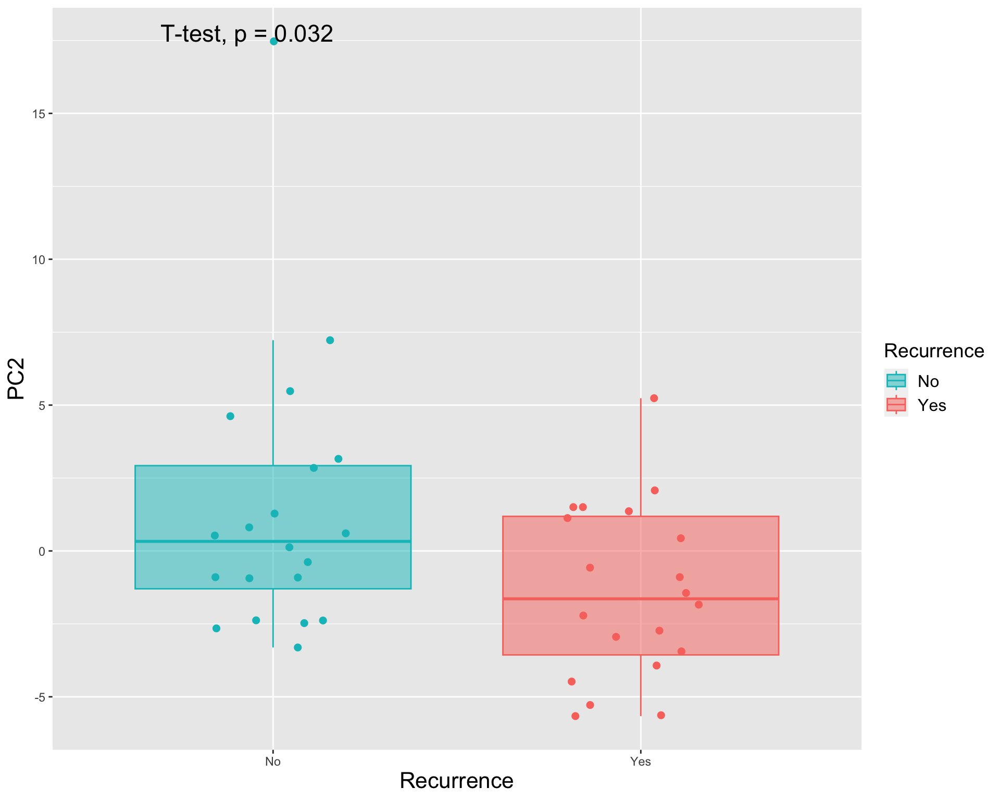
Display variance explained by each PC
# Display proportion of total variance captured by all PCs explained by each PC
varExplained <- pcaRes$sdev^2 / sum(pcaRes$sdev^2)
PC <- paste0('PC', seq(length(varExplained)))
varTab <- data.frame(PC = factor(PC, levels = PC),
Var_explained = varExplained)
ggplot(varTab, aes(x=PC, y=Var_explained*100)) +
geom_col() +
labs(x = '', y = 'Variance explained (%)') +
theme(axis.text.x = element_text(angle = 90, hjust = 1, vjust = 0.5))
| Version | Author | Date |
|---|---|---|
| 0bbd8eb | LiaoQianWu | 2023-04-25 |
Baseline samples
Display significant associations between features (Var1) and cancer recurrence (Var2) and observe molecular signatures in input data through heatmap. Note that features in heatmap are ordered by their t-statistics.
# Subset baseline samples
smpBaseIdx <- which(colData(metaPlasmaVsn)$Condition == 'Baseline')
metaBase <- metaPlasmaVsn[, smpBaseIdx]
# Perform analysis
metaBaseRes <- SOA(metaBase, fac = 'Recurrence', num_feats = 30)
datMat <- metaBaseRes$data
smpAnno <- metaBaseRes$smpMetadata
tFeatSigRes <- metaBaseRes$tFeatSigRes
tPCASigRes <- metaBaseRes$tPCASigRes
pcaRes <- metaBaseRes$pcaRes
pcTab <- metaBaseRes$pcTab
pcTopFeatTab <- metaBaseRes$pcTopFeatTab
# Display features that can significantly separate recurrence and non-recurrence
# patients
sigFeatTab <- dplyr::mutate(tFeatSigRes, m.z_RT = plyr::mapvalues(Var1,
from = featInfo$Feature,
to = featInfo$m.z_RT,
warn_missing = F))
sigFeatTab Var1 Var2 pVal tStats pValAdj m.z_RT
1 Feature172 Recurrence 0.0009795262 -3.930930 0.4574473 609.0866/6.18
2 Feature599 Recurrence 0.0013256562 -3.795145 0.4574473 182.06337/6.18
3 Feature171 Recurrence 0.0017790029 -3.663097 0.4574473 593.09179/6.18
4 Feature764 Recurrence 0.0018805643 4.182387 0.4574473 703.57433/8.03
5 Feature635 Recurrence 0.0024946744 -3.807691 0.4577613 229.07941/7.09
6 Feature600 Recurrence 0.0028227830 -3.455392 0.4577613 198.05801/6.18
7 Feature2 Recurrence 0.0034944674 3.359026 0.4857310 352.3388/0.66
8 Feature556 Recurrence 0.0053533927 -3.165481 0.6511064 235.08384/5.75
9 Feature582 Recurrence 0.0072253222 -3.028363 0.7811376 198.05806/6.18
10 Feature416 Recurrence 0.0083360145 -2.962586 0.8040909 323.04905/3.68
11 Feature933 Recurrence 0.0090904424 2.922593 0.8040909 445.36728/8.44
12 Feature414 Recurrence 0.0100359303 -2.876777 0.8137467 301.06701/3.67
13 Feature220 Recurrence 0.0130082938 2.755872 0.8155619 498.39944/8.09
14 Feature746 Recurrence 0.0146534926 -2.699941 0.8155619 701.55886/7.91
15 Feature621 Recurrence 0.0158408142 2.663190 0.8155619 544.3386/6.95
16 Feature143 Recurrence 0.0173485063 2.620132 0.8155619 520.07519/5.65
17 Feature286 Recurrence 0.0174988923 -2.616035 0.8155619 514.87484/0.8
18 Feature188 Recurrence 0.0182609127 2.595773 0.8155619 387.27074/7.19
19 Feature17 Recurrence 0.0184226347 2.606707 0.8155619 294.00315/0.92
20 Feature700 Recurrence 0.0192089046 2.571656 0.8155619 489.3394/7.64
21 Feature934 Recurrence 0.0215104294 2.517497 0.8155619 432.31045/8.44
22 Feature101 Recurrence 0.0221764231 2.502846 0.8155619 563.0834/4.29
23 Feature792 Recurrence 0.0251914104 2.441310 0.8155619 410.34683/8.12
24 Feature230 Recurrence 0.0269121960 2.551727 0.8155619 261.13087/8.16
25 Feature750 Recurrence 0.0274123538 2.412705 0.8155619 352.33882/7.94
26 Feature620 Recurrence 0.0283026744 -2.754915 0.8155619 137.10721/6.82
27 Feature670 Recurrence 0.0287775630 -2.376541 0.8155619 365.13527/7.47
28 Feature124 Recurrence 0.0290480205 -2.371968 0.8155619 265.09994/4.79
29 Feature159 Recurrence 0.0327105151 2.313656 0.8155619 511.10385/5.76
30 Feature217 Recurrence 0.0330826657 2.308076 0.8155619 547.38137/8.07
31 Feature318 Recurrence 0.0334681202 -2.302356 0.8155619 794.8109/0.8
32 Feature826 Recurrence 0.0335522497 2.637353 0.8155619 810.5989/8.16
33 Feature218 Recurrence 0.0339331057 2.295538 0.8155619 542.42597/8.07
34 Feature512 Recurrence 0.0361472370 -2.264212 0.8155619 188.068/5.51
35 Feature299 Recurrence 0.0369225343 -2.253662 0.8155619 770.85031/0.79
36 Feature895 Recurrence 0.0369450262 2.253359 0.8155619 313.27355/8.39
37 Feature565 Recurrence 0.0371371343 2.250778 0.8155619 519.07254/5.82
38 Feature813 Recurrence 0.0381142807 -2.355518 0.8155619 221.11055/8.15
39 Feature345 Recurrence 0.0396004755 -2.218727 0.8155619 235.09213/1.26
40 Feature791 Recurrence 0.0397531929 2.216802 0.8155619 415.30245/8.13
41 Feature33 Recurrence 0.0402376259 -2.210737 0.8155619 309.09255/1.35
42 Feature638 Recurrence 0.0408997089 -2.212570 0.8155619 229.07914/7.19
43 Feature669 Recurrence 0.0412844272 -2.197858 0.8155619 365.13554/7.45
44 Feature702 Recurrence 0.0415009206 2.195232 0.8155619 445.31292/7.66
45 Feature917 Recurrence 0.0421086583 2.208950 0.8155619 124.08715/8.45
46 Feature89 Recurrence 0.0424671602 -2.183662 0.8155619 208.00944/3.67
47 Feature511 Recurrence 0.0449044012 -2.155517 0.8155619 577.18763/5.48
48 Feature221 Recurrence 0.0461810411 2.161242 0.8155619 353.34143/8.1
49 Feature370 Recurrence 0.0468504451 -2.134031 0.8155619 262.88792/1.45
50 Feature457 Recurrence 0.0472194451 2.130049 0.8155619 567.11437/5.12
51 Feature701 Recurrence 0.0486899506 2.114456 0.8155619 401.28682/7.68
52 Feature712 Recurrence 0.0487391222 -2.158497 0.8155619 701.55848/7.72# Plot molecular signatures in input data
# Order features according to t-statistics
featOrder <- dplyr::arrange(tFeatSigRes, dplyr::desc(tStats))$Var1
# Arrange samples to make same groups in same clusters
smpOrder <- c(which(smpAnno$Recurrence == 'No'),
which(smpAnno$Recurrence == 'Yes'))
# Prepare recurrence table for annotating samples in heatmap
smpRecur <- dplyr::select(smpAnno, Sample, Recurrence) %>%
tibble::column_to_rownames('Sample')
pheatmap::pheatmap(datMat[featOrder, smpOrder],
annotation_col = smpRecur,
color = colorRampPalette(c('navy', 'white', 'red'))(100),
cluster_rows = F, cluster_cols = F, show_rownames = F,
scale = 'row', #row scaling is across columns
main = 'Baseline plasma metabolomics')
| Version | Author | Date |
|---|---|---|
| 0bbd8eb | LiaoQianWu | 2023-04-25 |
Owing to missing values, there might be a situation that only few observations in sample groups, resulting in unreliable t-statistics. (check e.g., Tumor Tissue Metabolomics) We used probabilistic dropout model to account for missing values and identify differentially abundant entities that are significantly associated with cancer recurrence. Note that features in heatmap are ordered by their t-statistics.
# Fit linear probabilistic dropout model to normalized data
fit <- proDA::proDA(datMat, design = ~ smpAnno$Recurrence)
# fit
# Check coefficient names for Parameter 'contrast' in proDA::test_diff()
# proDA::result_names(fit)
# Identify significant differentially abundant entities
all_proDAMetaBaseRes <- proDA::test_diff(fit,
contrast = Intercept + `smpAnno$RecurrenceYes` - Intercept,
sort_by = 'pval')
proDAMetaBaseRes <- dplyr::select(all_proDAMetaBaseRes,
-c(diff, se, df, avg_abundance, n_approx)) %>%
dplyr::filter(pval < 0.05) %>%
dplyr::mutate(MZ_RT = plyr::mapvalues(name,
from = featInfo$Feature,
to = featInfo$m.z_RT,
warn_missing = F))
proDAMetaBaseRes name pval adj_pval t_statistic n_obs MZ_RT
1 Feature599 0.001390766 0.5322897 3.773627 20 182.06337/6.18
2 Feature172 0.001534754 0.5322897 3.729410 20 609.0866/6.18
3 Feature171 0.001832881 0.5322897 3.649694 20 593.09179/6.18
4 Feature764 0.002185995 0.5322897 -3.570504 12 703.57433/8.03
5 Feature600 0.002755639 0.5367985 3.466244 20 198.05801/6.18
6 Feature2 0.004010848 0.6510943 -3.296651 20 352.3388/0.66
7 Feature556 0.005538409 0.7706301 3.149994 20 235.08384/5.75
8 Feature582 0.007791255 0.8694276 2.993709 20 198.05806/6.18
9 Feature635 0.008033725 0.8694276 2.979604 14 229.07941/7.09
10 Feature933 0.010313714 0.9337269 -2.864107 20 445.36728/8.44
11 Feature416 0.010591025 0.9337269 2.851783 20 323.04905/3.68
12 Feature414 0.012861020 0.9337269 2.761205 20 301.06701/3.67
13 Feature220 0.013494679 0.9337269 -2.738663 20 498.39944/8.09
14 Feature143 0.017195312 0.9337269 -2.624341 20 520.07519/5.65
15 Feature746 0.017555504 0.9337269 2.614501 20 701.55886/7.91
16 Feature621 0.018252004 0.9337269 -2.596005 20 544.3386/6.95
17 Feature188 0.020076461 0.9337269 -2.550555 20 387.27074/7.19
18 Feature934 0.021184232 0.9337269 -2.524830 20 432.31045/8.44
19 Feature101 0.023903766 0.9337269 -2.466695 20 563.0834/4.29
20 Feature17 0.024414041 0.9337269 -2.456485 19 294.00315/0.92
21 Feature792 0.025190621 0.9337269 -2.441326 20 410.34683/8.12
22 Feature670 0.028454971 0.9337269 2.382049 20 365.13527/7.47
23 Feature700 0.032433260 0.9337269 -2.317853 20 489.3394/7.64
24 Feature218 0.034250363 0.9337269 -2.290935 20 542.42597/8.07
25 Feature124 0.034291860 0.9337269 2.290336 20 265.09994/4.79
26 Feature895 0.036794428 0.9337269 -2.255391 20 313.27355/8.39
27 Feature217 0.037002574 0.9337269 -2.252584 20 547.38137/8.07
28 Feature159 0.037058006 0.9337269 -2.251839 20 511.10385/5.76
29 Feature565 0.037504965 0.9337269 -2.245870 20 519.07254/5.82
30 Feature512 0.039196838 0.9337269 2.223851 20 188.068/5.51
31 Feature813 0.039771256 0.9337269 2.216574 13 221.11055/8.15
32 Feature345 0.039803553 0.9337269 2.216168 20 235.09213/1.26
33 Feature750 0.040173362 0.9337269 -2.211537 19 352.33882/7.94
34 Feature318 0.043615167 0.9337269 2.170226 20 794.8109/0.8
35 Feature917 0.044186775 0.9337269 -2.163656 18 124.08715/8.45
36 Feature857 0.045118407 0.9337269 -2.153113 14 197.10716/8.26
37 Feature33 0.045404573 0.9337269 2.149915 20 309.09255/1.35
38 Feature791 0.045949191 0.9337269 -2.143878 20 415.30245/8.13
39 Feature712 0.045959261 0.9337269 2.143767 16 701.55848/7.72
40 Feature826 0.047347500 0.9337269 -2.128673 9 810.5989/8.16
41 Feature669 0.047394551 0.9337269 2.128169 20 365.13554/7.45
42 Feature457 0.048983367 0.9337269 -2.111396 20 567.11437/5.12
43 Feature89 0.049547334 0.9337269 2.105562 20 208.00944/3.67# Plot molecular signatures in input data
# Order features according to t-statistics
featOrder <- dplyr::arrange(proDAMetaBaseRes, dplyr::desc(t_statistic))$name
pheatmap::pheatmap(datMat[featOrder, smpOrder],
annotation_col = smpRecur,
color = colorRampPalette(c('navy', 'white', 'red'))(100),
cluster_rows = F, cluster_cols = F, show_rownames = F,
scale = 'row', main = 'Baseline plasma metabolomics (proDA)')
| Version | Author | Date |
|---|---|---|
| 0bbd8eb | LiaoQianWu | 2023-04-25 |
# Store table in list for creating Excel file
sigFeatSheet <- list(BasePlasmaMetab_Feats = proDAMetaBaseRes)ovl <- intersect(metaBaseRes$tFeatSigRes$Var1, proDAMetaBaseRes$name)
cat('The following features', paste0('(n =', length(ovl), ')'),
'are tested significant by both methods:\n', ovl)The following features (n =42) are tested significant by both methods:
Feature172 Feature599 Feature171 Feature764 Feature635 Feature600 Feature2 Feature556 Feature582 Feature416 Feature933 Feature414 Feature220 Feature746 Feature621 Feature143 Feature188 Feature17 Feature700 Feature934 Feature101 Feature792 Feature750 Feature670 Feature124 Feature159 Feature217 Feature318 Feature826 Feature218 Feature512 Feature895 Feature565 Feature813 Feature345 Feature791 Feature33 Feature669 Feature917 Feature89 Feature457 Feature712-> Most of Recurrence-related features captured by proDA are
covered in regular significance test.
Visualize data of top 6 significant features based on proDA result
# Visualize data of top 6 significant features
topSigFeats <- proDAMetaBaseRes$name[1:6]
topSigFeatData <- tibble::as_tibble(datMat[topSigFeats,], rownames = 'Feature') %>%
tidyr::pivot_longer(cols = -'Feature',
names_to = 'Sample', values_to = 'Abundance') %>%
dplyr::mutate(Feature = factor(Feature, levels = topSigFeats)) %>%
dplyr::left_join(smpAnno, by = 'Sample')
ggplot(topSigFeatData, aes(x=Recurrence, y=Abundance, col=Recurrence, fill=Recurrence)) +
geom_boxplot(alpha = 0.5, outlier.shape = NA) +
geom_jitter(position = position_jitter(0.2), size = 2, show.legend = F) +
scale_color_manual(values=c('#00BFC4', '#F8766D')) +
scale_fill_manual(values=c('#00BFC4', '#F8766D')) +
facet_wrap(vars(Feature), scales = 'free') +
ggpubr::stat_compare_means(method = 't.test', paired = F,
method.args = list(var.equal = T),
show.legend = F)
| Version | Author | Date |
|---|---|---|
| 0bbd8eb | LiaoQianWu | 2023-04-25 |
There is no significant association between PCs (Var1) and cancer recurrence (Var2).
# Display PCs that can significantly separate recurrence and non-recurrence
# patients
tPCASigRes[1] Var1 Var2 pVal tStats pValAdj
<0 rows> (or 0-length row.names)Follow-up samples
Display significant associations between features (Var1) and cancer recurrence (Var2) and observe molecular signatures in input data through heatmap. Note that features in heatmap are ordered by their t-statistics.
# Subset follow-up samples
smpFoloIdx <- which(colData(metaPlasmaVsn)$Condition != 'Baseline')
metaFolo <- metaPlasmaVsn[, smpFoloIdx]
# Perform analysis
metaFoloRes <- SOA(metaFolo, fac = 'Recurrence', num_feats = 30)
datMat <- metaFoloRes$data
smpAnno <- metaFoloRes$smpMetadata
tFeatSigRes <- metaFoloRes$tFeatSigRes
tPCASigRes <- metaFoloRes$tPCASigRes
pcaRes <- metaFoloRes$pcaRes
pcTab <- metaFoloRes$pcTab
pcTopFeatTab <- metaFoloRes$pcTopFeatTab
# Display features that can significantly separate recurrence and non-recurrence
# patients
sigFeatTab <- dplyr::mutate(tFeatSigRes, m.z_RT = plyr::mapvalues(Var1,
from = featInfo$Feature,
to = featInfo$m.z_RT,
warn_missing = F))
sigFeatTab Var1 Var2 pVal tStats pValAdj m.z_RT
1 Feature917 Recurrence 0.002509584 -3.508381 0.675835 124.08715/8.45
2 Feature900 Recurrence 0.002881864 -3.446052 0.675835 466.29777/8.4
3 Feature961 Recurrence 0.002950525 -3.435432 0.675835 210.08713/8.46
4 Feature902 Recurrence 0.004421880 -3.252409 0.675835 313.27329/8.39
5 Feature575 Recurrence 0.006931092 -3.202728 0.675835 229.07944/6.04
6 Feature189 Recurrence 0.006965741 -3.045150 0.675835 200.20072/7.22
7 Feature779 Recurrence 0.008342973 -3.478092 0.675835 369.35105/8.06
8 Feature911 Recurrence 0.009503067 -2.902058 0.675835 221.1105/8.45
9 Feature78 Recurrence 0.013180015 2.749727 0.675835 261.03582/3.55
10 Feature524 Recurrence 0.014410561 2.707810 0.675835 431.15645/5.56
11 Feature352 Recurrence 0.016002279 -2.658396 0.675835 346.00917/1.29
12 Feature642 Recurrence 0.017574159 -2.718170 0.675835 810.59915/7.23
13 Feature818 Recurrence 0.018135488 -2.599052 0.675835 168.07665/8.16
14 Feature268 Recurrence 0.018901780 -2.594293 0.675835 219.09487/8.46
15 Feature519 Recurrence 0.020958798 2.529961 0.675835 453.13787/5.56
16 Feature180 Recurrence 0.021467651 2.518453 0.675835 241.17313/6.66
17 Feature829 Recurrence 0.021689521 -2.513516 0.675835 207.12361/8.17
18 Feature554 Recurrence 0.022047612 -2.505647 0.675835 128.05286/5.73
19 Feature356 Recurrence 0.022299205 -2.513998 0.675835 367.99125/1.31
20 Feature869 Recurrence 0.025384461 -2.584531 0.675835 151.123/8.3
21 Feature877 Recurrence 0.026528054 -2.478846 0.675835 429.37212/8.27
22 Feature965 Recurrence 0.028338823 -2.384046 0.675835 168.07669/8.46
23 Feature33 Recurrence 0.028745756 -2.377082 0.675835 309.09255/1.35
24 Feature527 Recurrence 0.029586513 -2.362979 0.675835 760.58319/5.61
25 Feature890 Recurrence 0.030050617 -2.434947 0.675835 369.35262/8.34
26 Feature270 Recurrence 0.030134293 -2.379296 0.675835 279.09334/8.47
27 Feature395 Recurrence 0.030649306 2.345677 0.675835 267.07925/3.44
28 Feature802 Recurrence 0.031184732 -2.415195 0.675835 365.13559/8.13
29 Feature635 Recurrence 0.031209391 -2.394271 0.675835 229.07941/7.09
30 Feature536 Recurrence 0.031754071 -2.328274 0.675835 253.05713/5.64
31 Feature751 Recurrence 0.033642055 -2.426089 0.675835 166.09773/7.95
32 Feature556 Recurrence 0.034322691 -2.289891 0.675835 235.08384/5.75
33 Feature814 Recurrence 0.034700412 -2.284473 0.675835 165.11334/8.15
34 Feature819 Recurrence 0.034713373 -2.295267 0.675835 168.07674/8.18
35 Feature664 Recurrence 0.035942990 -2.277797 0.675835 226.21643/7.48
36 Feature712 Recurrence 0.036390999 -2.332532 0.675835 701.55848/7.72
37 Feature49 Recurrence 0.039706137 2.217394 0.675835 181.07178/2.81
38 Feature473 Recurrence 0.040539899 2.206987 0.675835 310.06741/5.23
39 Feature675 Recurrence 0.040598036 -2.240810 0.675835 786.59924/7.54
40 Feature472 Recurrence 0.040843308 2.203248 0.675835 403.12533/5.23
41 Feature601 Recurrence 0.041365158 -2.196877 0.675835 333.16691/6.25
42 Feature598 Recurrence 0.042319103 -2.185419 0.675835 229.07916/6.18
43 Feature883 Recurrence 0.042452253 -2.269814 0.675835 165.11347/8.3
44 Feature972 Recurrence 0.043286591 2.259030 0.675835 782.56886/8.49
45 Feature853 Recurrence 0.043376921 -2.172987 0.675835 313.27324/8.23
46 Feature203 Recurrence 0.044046947 -2.165256 0.675835 675.54304/7.79
47 Feature540 Recurrence 0.044287930 -2.162502 0.675835 261.10959/5.64
48 Feature875 Recurrence 0.044716886 -2.204554 0.675835 166.09733/8.3
49 Feature942 Recurrence 0.044814954 2.156525 0.675835 465.44783/8.45
50 Feature908 Recurrence 0.045169999 -2.172713 0.675835 217.10418/8.44
51 Feature54 Recurrence 0.045966634 2.143686 0.675835 212.04855/3.03
52 Feature862 Recurrence 0.047144911 -2.192468 0.675835 124.087/8.29
53 Feature286 Recurrence 0.048053329 -2.121153 0.675835 514.87484/0.8
54 Feature136 Recurrence 0.048637084 2.115009 0.675835 855.25502/5.38# Plot molecular signatures in input data
# Order features according to t-statistics
featOrder <- dplyr::arrange(tFeatSigRes, dplyr::desc(tStats))$Var1
# Arrange samples to make same groups in same clusters
smpOrder <- c(which(smpAnno$Recurrence == 'No'),
which(smpAnno$Recurrence == 'Yes'))
# Prepare recurrence table for annotating samples in heatmap
smpRecur <- dplyr::select(smpAnno, Sample, Recurrence) %>%
tibble::column_to_rownames('Sample')
pheatmap::pheatmap(datMat[featOrder, smpOrder],
annotation_col = smpRecur,
color = colorRampPalette(c('navy', 'white', 'red'))(100),
cluster_rows = F, cluster_cols = F, show_rownames = F,
scale = 'row', main = 'Follow-up plasma metabolomics')
| Version | Author | Date |
|---|---|---|
| 0bbd8eb | LiaoQianWu | 2023-04-25 |
Use probabilistic dropout model to account for missing values and identify differentially abundant entities that are significantly associated with cancer recurrence. Note that features in heatmap are ordered by their t-statistics.
# Fit linear probabilistic dropout model to normalized data
fit <- proDA::proDA(datMat, design = ~ smpAnno$Recurrence)
# fit
# Check coefficient names for Parameter 'contrast' in proDA::test_diff()
# proDA::result_names(fit)
# Identify significant differentially abundant entities
all_proDAMetaFoloRes <- proDA::test_diff(fit,
contrast = Intercept + `smpAnno$RecurrenceYes` - Intercept,
sort_by = 'pval')
proDAMetaFoloRes <- dplyr::select(all_proDAMetaFoloRes,
-c(diff, se, df, avg_abundance, n_approx)) %>%
dplyr::filter(pval < 0.05) %>%
dplyr::mutate(MZ_RT = plyr::mapvalues(name,
from = featInfo$Feature,
to = featInfo$m.z_RT,
warn_missing = F))
proDAMetaFoloRes name pval adj_pval t_statistic n_obs MZ_RT
1 Feature917 0.002830602 0.7550675 3.454145 20 124.08715/8.45
2 Feature900 0.003137838 0.7550675 3.407657 20 466.29777/8.4
3 Feature961 0.003907190 0.7550675 3.308512 20 210.08713/8.46
4 Feature902 0.004943104 0.7550675 3.201780 20 313.27329/8.39
5 Feature575 0.011493694 0.7550675 2.813716 15 229.07944/6.04
6 Feature189 0.012081661 0.7550675 2.790438 20 200.20072/7.22
7 Feature78 0.013377153 0.7550675 -2.742766 20 261.03582/3.55
8 Feature911 0.013573546 0.7550675 2.735928 20 221.1105/8.45
9 Feature779 0.018248690 0.7550675 2.596091 10 369.35105/8.06
10 Feature524 0.020064308 0.7550675 -2.550844 20 431.15645/5.56
11 Feature268 0.022404776 0.7550675 2.497918 19 219.09487/8.46
12 Feature818 0.022606279 0.7550675 2.493608 20 168.07665/8.16
13 Feature356 0.024361195 0.7550675 2.457533 19 367.99125/1.31
14 Feature802 0.024572129 0.7550675 2.453363 15 365.13559/8.13
15 Feature519 0.024883967 0.7550675 -2.447259 20 453.13787/5.56
16 Feature890 0.024993257 0.7550675 2.445136 15 369.35262/8.34
17 Feature642 0.026999679 0.7550675 2.407644 15 810.59915/7.23
18 Feature352 0.029392751 0.7550675 2.366196 20 346.00917/1.29
19 Feature869 0.030111663 0.7550675 2.354359 13 151.123/8.3
20 Feature395 0.031260634 0.7550675 -2.335976 20 267.07925/3.44
21 Feature180 0.032008789 0.7550675 -2.324342 20 241.17313/6.66
22 Feature965 0.034218400 0.7550675 2.291397 20 168.07669/8.46
23 Feature270 0.035549170 0.7550675 2.272495 18 279.09334/8.47
24 Feature635 0.037658127 0.7550675 2.243839 16 229.07941/7.09
25 Feature556 0.039851250 0.7550675 2.215568 20 235.08384/5.75
26 Feature883 0.041811415 0.7550675 2.191487 14 165.11347/8.3
27 Feature814 0.041940364 0.7550675 2.189940 20 165.11334/8.15
28 Feature536 0.043707914 0.7550675 2.169155 20 253.05713/5.64
29 Feature712 0.044012489 0.7550675 2.165651 15 701.55848/7.72
30 Feature49 0.044588569 0.7550675 -2.159084 20 181.07178/2.81
31 Feature472 0.044842549 0.7550675 -2.156214 20 403.12533/5.23
32 Feature527 0.045203057 0.7550675 2.152165 20 760.58319/5.61
33 Feature751 0.045295855 0.7550675 2.151128 13 166.09773/7.95
34 Feature853 0.045559817 0.7550675 2.148187 20 313.27324/8.23
35 Feature54 0.045822346 0.7550675 -2.145278 20 212.04855/3.03
36 Feature972 0.045907852 0.7550675 -2.144334 14 782.56886/8.49
37 Feature473 0.046152477 0.7550675 -2.141642 20 310.06741/5.23
38 Feature829 0.046217282 0.7550675 2.140931 20 207.12361/8.17
39 Feature33 0.046489688 0.7550675 2.137952 20 309.09255/1.35
40 Feature664 0.047124251 0.7550675 2.131073 19 226.21643/7.48
41 Feature136 0.049186986 0.7550675 -2.109283 20 855.25502/5.38
42 Feature598 0.049255876 0.7550675 2.108569 20 229.07916/6.18# Plot molecular signatures in input data
# Order features according to t-statistics
featOrder <- dplyr::arrange(proDAMetaFoloRes, dplyr::desc(t_statistic))$name
pheatmap::pheatmap(datMat[featOrder, smpOrder],
annotation_col = smpRecur,
color = colorRampPalette(c('navy', 'white', 'red'))(100),
cluster_rows = F, cluster_cols = F, show_rownames = F,
scale = 'row', main = 'Follow-up plasma metabolomics (proDA)')
| Version | Author | Date |
|---|---|---|
| 0bbd8eb | LiaoQianWu | 2023-04-25 |
# Store table in list for creating Excel file
sigFeatSheet <- append(sigFeatSheet, list(FolloPlasmaMetab_Feats = proDAMetaFoloRes))ovl <- intersect(metaFoloRes$tFeatSigRes$Var1, proDAMetaFoloRes$name)
cat('The following features', paste0('(n =', length(ovl), ')'),
'are tested significant by both methods:\n', ovl)The following features (n =42) are tested significant by both methods:
Feature917 Feature900 Feature961 Feature902 Feature575 Feature189 Feature779 Feature911 Feature78 Feature524 Feature352 Feature642 Feature818 Feature268 Feature519 Feature180 Feature829 Feature356 Feature869 Feature965 Feature33 Feature527 Feature890 Feature270 Feature395 Feature802 Feature635 Feature536 Feature751 Feature556 Feature814 Feature664 Feature712 Feature49 Feature473 Feature472 Feature598 Feature883 Feature972 Feature853 Feature54 Feature136Visualize data of top 6 significant features based on proDA result
# Visualize data of top 6 significant features
topSigFeats <- proDAMetaFoloRes$name[1:6]
topSigFeatData <- tibble::as_tibble(datMat[topSigFeats,], rownames = 'Feature') %>%
tidyr::pivot_longer(cols = -'Feature',
names_to = 'Sample', values_to = 'Abundance') %>%
dplyr::mutate(Feature = factor(Feature, levels = topSigFeats)) %>%
dplyr::left_join(smpAnno, by = 'Sample')
ggplot(topSigFeatData, aes(x=Recurrence, y=Abundance, col=Recurrence, fill=Recurrence)) +
geom_boxplot(alpha = 0.5, outlier.shape = NA) +
geom_jitter(position = position_jitter(0.2), size = 2, show.legend = F) +
scale_color_manual(values=c('#00BFC4', '#F8766D')) +
scale_fill_manual(values=c('#00BFC4', '#F8766D')) +
facet_wrap(vars(Feature), scales = 'free') +
ggpubr::stat_compare_means(method = 't.test', paired = F,
method.args = list(var.equal = T),
show.legend = F)
| Version | Author | Date |
|---|---|---|
| 0bbd8eb | LiaoQianWu | 2023-04-25 |
Display significant associations between PCs (Var1) and cancer recurrence (Var2)
# Display PCs that can significantly separate recurrence and non-recurrence
# patients
tPCASigRes Var1 Var2 pVal tStats pValAdj
1 PC12 Recurrence 0.0423613 -2.184918 0.6018788# Display proportion of total variance captured by all PCs explained by each PC
varExplained <- pcaRes$sdev^2 / sum(pcaRes$sdev^2)
PC <- paste0('PC', seq(length(varExplained)))
varTab <- data.frame(PC = factor(PC, levels = PC),
Var_explained = varExplained)
ggplot(varTab, aes(x=PC, y=Var_explained*100)) +
geom_col() +
labs(x = '', y = 'Variance explained (%)',
title = 'Follow-up plasma metabolomics')
| Version | Author | Date |
|---|---|---|
| 0bbd8eb | LiaoQianWu | 2023-04-25 |
PC12 potentially separates recurrence and non-recurrence patients.
# Visualize PCs
ggplot(pcTab, aes(x=Recurrence, y=PC12, col=Recurrence, fill=Recurrence)) +
geom_boxplot(alpha = 0.5, outlier.shape = NA) +
geom_jitter(position = position_jitter(0.2), size = 2, show.legend = F) +
labs(title = 'Follow-up plasma metabolomics') +
scale_color_manual(values=c('#00BFC4', '#F8766D')) +
scale_fill_manual(values=c('#00BFC4', '#F8766D')) +
ggpubr::stat_compare_means(method = 't.test', paired = F, size = 5,
method.args = list(var.equal = T),
show.legend = F)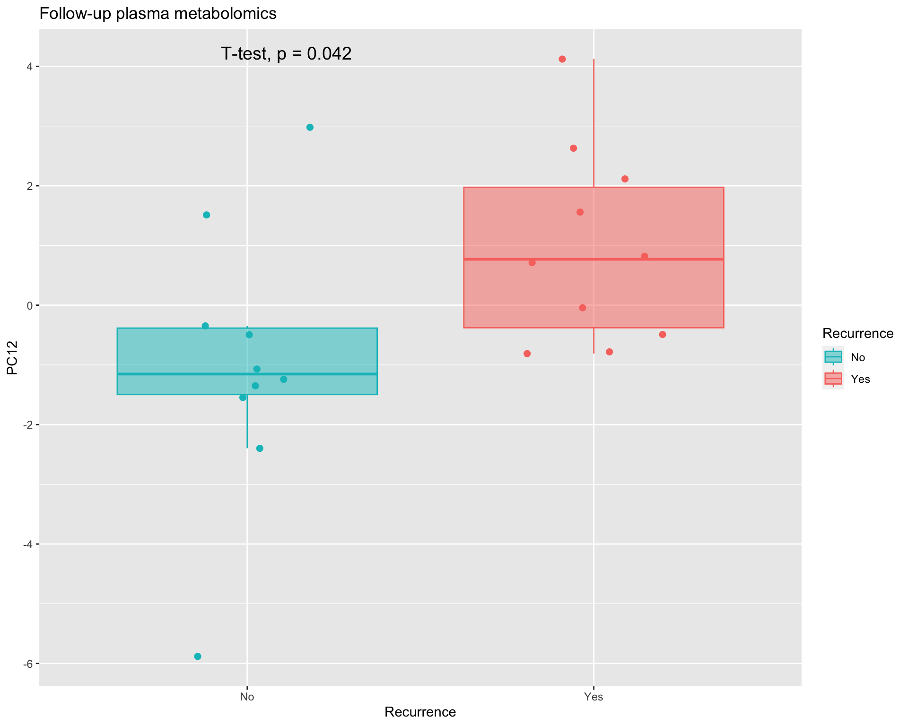
Plot molecular signatures captured by PC12 in input data. We took a look at top 20 features with highest loadings and observed metabolite levels of these top features through heatmap. Note that features in heatmap are ordered by their loadings. There is no single feature that can decently hint if patients will suffer cancer recurrence or not, which means each of these top features contributes a bit to explaining variation between recurrence and non-recurrence patients.
# Plot molecular signatures in input data
# Extract top features with highest loadings
topFeats <- pcTopFeatTab$PC12$Feature[1:20]
# Order features by loadings
topFeatsIdx <- sapply(topFeats, function(feat) {which(rownames(datMat) == feat)})
pheatmap::pheatmap(datMat[topFeatsIdx, smpOrder],
annotation_col = smpRecur,
color = colorRampPalette(c('navy', 'white', 'red'))(100),
cluster_rows = F, cluster_cols = F,
scale = 'row', main = 'Follow-up plasma metabolomics - PC12')
| Version | Author | Date |
|---|---|---|
| 0bbd8eb | LiaoQianWu | 2023-04-25 |
Display top features that build the PC12
# Display top features with highest loadings of PC of interest
pcTopFeats <- dplyr::left_join(pcTopFeatTab$PC12, featInfo, by = 'Feature')
pcTopFeats Feature Loading m.z_RT
1 Feature912 0.29328925 332.29506/8.43
2 Feature128 0.27653678 274.27357/5.05
3 Feature799 0.16730931 369.35089/8.13
4 Feature600 0.16678377 198.05801/6.18
5 Feature203 0.16297286 675.54304/7.79
6 Feature60 0.14188922 422.15958/3.08
7 Feature171 0.13470256 593.09179/6.18
8 Feature191 0.13197920 303.00769/7.47
9 Feature49 0.13096928 181.07178/2.81
10 Feature524 0.12297721 431.15645/5.56
11 Feature519 0.12043984 453.13787/5.56
12 Feature950 0.11864613 276.23191/8.47
13 Feature582 0.11567280 198.05806/6.18
14 Feature599 0.11189182 182.06337/6.18
15 Feature709 0.11174794 365.13601/7.69
16 Feature556 0.10501121 235.08384/5.75
17 Feature780 0.10287256 685.43464/8.09
18 Feature349 0.10135521 315.07984/1.32
19 Feature124 0.10122544 265.09994/4.79
20 Feature953 0.10044659 280.26318/8.47
21 Feature72 0.09782040 255.97577/3.43
22 Feature96 0.09746101 257.96496/3.99
23 Feature172 0.09680627 609.0866/6.18
24 Feature205 0.09641316 729.59003/7.86
25 Feature123 0.09452387 104.07066/4.74
26 Feature122 0.09395723 239.08445/4.74
27 Feature900 0.09173910 466.29777/8.4
28 Feature917 0.08924185 124.08715/8.45
29 Feature935 0.08619731 242.24761/8.44
30 Feature178 0.08580701 423.19858/6.44# Store table in list for creating Excel file
sigFeatSheet <- append(sigFeatSheet, list(FolloPlasmaMetab_PC12 = pcTopFeats))Changes in time course
Differences between Follow-up and Baseline samples (Follow-up matrix
- baseline matrix):
Display significant associations between features (Var1) and cancer recurrence (Var2) and observe molecular signatures in input data through heatmap. Note that features in heatmap are ordered by their t-statistics.
# Subset baseline samples
smpBaseIdx <- which(colData(metaPlasmaVsn)$Condition == 'Baseline')
metaBase <- metaPlasmaVsn[, smpBaseIdx]
# Subset follow-up samples
smpFoloIdx <- which(colData(metaPlasmaVsn)$Condition != 'Baseline')
metaFolo <- metaPlasmaVsn[, smpFoloIdx]
# Modify column names for matching two matrices
colnames(metaBase) <- stringr::str_remove(colnames(metaBase), '_P_B')
colnames(metaFolo) <- stringr::str_remove(colnames(metaFolo), '_P_R')
# Retrieve data matrix
metaBaseMat <- SummarizedExperiment::assay(metaBase)
metaFoloMat <- SummarizedExperiment::assay(metaFolo)
# Subtract follow-up matrix by baseline matrix
if (identical(colnames(metaBaseMat), colnames(metaFoloMat)) &
identical(rownames(metaBaseMat), rownames(metaFoloMat))) {
metaPlasmaDiffMat <- metaFoloMat - metaBaseMat
} else {
print('Align samples or features first.')
}
# Retrieve samples metadata for creating SE object
colAnno <- dplyr::select(as.data.frame(colData(metaBase)), Patient, Recurrence)
metaPlasmaDiff <- SummarizedExperiment(assays = metaPlasmaDiffMat, colData = colAnno)
# Perform analysis
metaPlasmaDiffRes <- SOA(metaPlasmaDiff, fac = 'Recurrence', num_feats = 30)
datMat <- metaPlasmaDiffRes$data
smpAnno <- metaPlasmaDiffRes$smpMetadata
tFeatSigRes <- metaPlasmaDiffRes$tFeatSigRes
tPCASigRes <- metaPlasmaDiffRes$tPCASigRes
pcaRes <- metaPlasmaDiffRes$pcaRes
pcTab <- metaPlasmaDiffRes$pcTab
pcTopFeatTab <- metaPlasmaDiffRes$pcTopFeatTab
# Display features that can significantly separate recurrence and non-recurrence
# patients
sigFeatTab <- dplyr::mutate(tFeatSigRes, m.z_RT = plyr::mapvalues(Var1,
from = featInfo$Feature,
to = featInfo$m.z_RT,
warn_missing = F))
sigFeatTab Var1 Var2 pVal tStats pValAdj m.z_RT
1 Feature917 Recurrence 0.0006955433 -4.188134 0.6718948 124.08715/8.45
2 Feature902 Recurrence 0.0042145549 -3.274195 0.8258761 313.27329/8.39
3 Feature895 Recurrence 0.0056810019 -3.138399 0.8258761 313.27355/8.39
4 Feature266 Recurrence 0.0066456808 -3.066707 0.8258761 398.23243/8.45
5 Feature853 Recurrence 0.0081876691 -2.970861 0.8258761 313.27324/8.23
6 Feature800 Recurrence 0.0088547646 -2.934730 0.8258761 137.10733/8.13
7 Feature445 Recurrence 0.0094866408 2.902858 0.8258761 265.06383/4.39
8 Feature900 Recurrence 0.0107345367 -2.845527 0.8258761 466.29777/8.4
9 Feature503 Recurrence 0.0108228172 2.841719 0.8258761 261.10909/5.49
10 Feature877 Recurrence 0.0116850507 -2.898134 0.8258761 429.37212/8.27
11 Feature352 Recurrence 0.0123527804 -2.780068 0.8258761 346.00917/1.29
12 Feature809 Recurrence 0.0125026134 -3.038121 0.8258761 217.10438/8.14
13 Feature847 Recurrence 0.0129964572 2.844251 0.8258761 605.60162/8.2
14 Feature819 Recurrence 0.0152783815 -2.715516 0.8258761 168.07674/8.18
15 Feature937 Recurrence 0.0175739448 -2.790400 0.8258761 164.08184/8.44
16 Feature423 Recurrence 0.0216317470 2.514797 0.8258761 148.06033/3.91
17 Feature554 Recurrence 0.0217239692 -2.512754 0.8258761 128.05286/5.73
18 Feature784 Recurrence 0.0218226909 -2.540397 0.8258761 123.09143/8.11
19 Feature869 Recurrence 0.0218306745 -29.150277 0.8258761 151.123/8.3
20 Feature553 Recurrence 0.0218813337 -2.509286 0.8258761 505.10153/5.72
21 Feature600 Recurrence 0.0227838795 2.489840 0.8258761 198.05801/6.18
22 Feature124 Recurrence 0.0241113753 2.462516 0.8258761 265.09994/4.79
23 Feature956 Recurrence 0.0242406056 -2.525514 0.8258761 150.06631/8.46
24 Feature807 Recurrence 0.0250753208 -2.531046 0.8258761 577.56676/8.16
25 Feature420 Recurrence 0.0255675503 2.434125 0.8258761 283.07437/3.91
26 Feature933 Recurrence 0.0272500437 -2.403151 0.8258761 445.36728/8.44
27 Feature599 Recurrence 0.0275220929 2.398311 0.8258761 182.06337/6.18
28 Feature78 Recurrence 0.0296038899 2.362692 0.8258761 261.03582/3.55
29 Feature171 Recurrence 0.0316902181 2.329265 0.8258761 593.09179/6.18
30 Feature751 Recurrence 0.0320375657 -2.669184 0.8258761 166.09773/7.95
31 Feature934 Recurrence 0.0334780479 -2.302210 0.8258761 432.31045/8.44
32 Feature217 Recurrence 0.0340320818 -2.294098 0.8258761 547.38137/8.07
33 Feature535 Recurrence 0.0353654034 -2.275066 0.8258761 741.14195/5.65
34 Feature964 Recurrence 0.0361387695 -2.264329 0.8258761 137.10739/8.46
35 Feature77 Recurrence 0.0378854344 2.240839 0.8258761 268.07467/3.54
36 Feature494 Recurrence 0.0403775464 2.510328 0.8258761 207.12369/5.44
37 Feature511 Recurrence 0.0419078312 2.190330 0.8258761 577.18763/5.48
38 Feature916 Recurrence 0.0425549833 -2.268475 0.8258761 205.10846/8.44
39 Feature321 Recurrence 0.0431356498 2.556083 0.8258761 828.8044/0.8
40 Feature876 Recurrence 0.0431572577 -2.260688 0.8258761 168.07666/8.31# Plot molecular signatures in input data
# Order features according to t-statistics
featOrder <- dplyr::arrange(tFeatSigRes, dplyr::desc(tStats))$Var1
# Arrange samples to make same groups in same clusters
smpOrder <- c(which(smpAnno$Recurrence == 'No'),
which(smpAnno$Recurrence == 'Yes'))
# Prepare recurrence table for annotating samples in heatmap
smpRecur <- dplyr::select(smpAnno, Sample, Recurrence) %>%
tibble::column_to_rownames('Sample')
pheatmap::pheatmap(datMat[featOrder, smpOrder],
annotation_col = smpRecur,
color = colorRampPalette(c('navy', 'white', 'red'))(100),
cluster_rows = F, cluster_cols = F, show_rownames = F,
scale = 'row', main = 'Differential plasma metabolomics')
| Version | Author | Date |
|---|---|---|
| 0bbd8eb | LiaoQianWu | 2023-04-25 |
Use probabilistic dropout model to account for missing values and identify differentially abundant entity differences that are significantly associated with cancer recurrence. Note that features in heatmap are ordered by their t-statistics.
# Fit linear probabilistic dropout model to normalized data
fit <- proDA::proDA(datMat, design = ~ smpAnno$Recurrence)
# fit
# Check coefficient names for Parameter 'contrast' in proDA::test_diff()
# proDA::result_names(fit)
# Identify significant differentially abundant entities
proDAMetaPlasmaDiffRes <- proDA::test_diff(fit,
contrast = Intercept + `smpAnno$RecurrenceYes` - Intercept,
sort_by = 'pval') %>%
dplyr::select(-c(diff, se, df, avg_abundance, n_approx)) %>%
dplyr::filter(pval < 0.05) %>%
dplyr::mutate(MZ_RT = plyr::mapvalues(name,
from = featInfo$Feature,
to = featInfo$m.z_RT,
warn_missing = F))
proDAMetaPlasmaDiffRes name pval adj_pval t_statistic n_obs MZ_RT
1 Feature937 0.02410492 0.9996927 2.462646 13 164.08184/8.44
2 Feature266 0.02746086 0.9996927 2.399396 20 398.23243/8.45
3 Feature800 0.03355718 0.9996927 2.301044 20 137.10733/8.13
4 Feature819 0.03984397 0.9996927 2.215660 18 168.07674/8.18
5 Feature809 0.04279696 0.9996927 2.179768 12 217.10438/8.14
6 Feature352 0.04317797 0.9996927 2.175304 20 346.00917/1.29
7 Feature956 0.04332995 0.9996927 2.173534 16 150.06631/8.46# Plot molecular signatures in input data
# Order features according to t-statistics
featOrder <- dplyr::arrange(proDAMetaPlasmaDiffRes, dplyr::desc(t_statistic))$name
pheatmap::pheatmap(datMat[featOrder, smpOrder],
annotation_col = smpRecur,
color = colorRampPalette(c('navy', 'white', 'red'))(100),
cluster_rows = F, cluster_cols = F, scale = 'row',
main = 'Differential plasma metabolomics (proDA)')
| Version | Author | Date |
|---|---|---|
| 0bbd8eb | LiaoQianWu | 2023-04-25 |
# Store table in list for creating Excel file
# sigFeatSheet <- append(sigFeatSheet, list(DiffPlasmaMetab_Feats = proDAMetaPlasmaDiffRes))ovl <- intersect(metaPlasmaDiffRes$tFeatSigRes$Var1, proDAMetaPlasmaDiffRes$name)
cat('The following features', paste0('(n =', length(ovl), ')'),
'are tested significant by both methods:\n', ovl)The following features (n =7) are tested significant by both methods:
Feature266 Feature800 Feature352 Feature809 Feature819 Feature937 Feature956Visualize data of top 6 significant features based on proDA result
# Visualize data of top 6 significant features
topSigFeats <- proDAMetaPlasmaDiffRes$name[1:6]
topSigFeatData <- tibble::as_tibble(datMat[topSigFeats,], rownames = 'Feature') %>%
tidyr::pivot_longer(cols = -'Feature',
names_to = 'Sample', values_to = 'Abundance') %>%
dplyr::mutate(Feature = factor(Feature, levels = topSigFeats)) %>%
dplyr::left_join(smpAnno, by = 'Sample')
ggplot(topSigFeatData, aes(x=Recurrence, y=Abundance, col=Recurrence, fill=Recurrence)) +
geom_boxplot(alpha = 0.5, outlier.shape = NA) +
geom_jitter(position = position_jitter(0.2), size = 2, show.legend = F) +
scale_color_manual(values=c('#00BFC4', '#F8766D')) +
scale_fill_manual(values=c('#00BFC4', '#F8766D')) +
facet_wrap(vars(Feature), scales = 'free') +
ggpubr::stat_compare_means(method = 't.test', paired = F,
method.args = list(var.equal = T),
show.legend = F)
| Version | Author | Date |
|---|---|---|
| 0bbd8eb | LiaoQianWu | 2023-04-25 |
Display significant associations between PCs (Var1) and cancer recurrence (Var2)
# Display PCs that can significantly separate recurrence and non-recurrence
# patients
tPCASigRes Var1 Var2 pVal tStats pValAdj
1 PC12 Recurrence 0.03980069 -2.216204 0.7430627# Display proportion of total variance captured by all PCs explained by each PC
varExplained <- pcaRes$sdev^2 / sum(pcaRes$sdev^2)
PC <- paste0('PC', seq(length(varExplained)))
varTab <- data.frame(PC = factor(PC, levels = PC),
Var_explained = varExplained)
ggplot(varTab, aes(x=PC, y=Var_explained*100)) +
geom_col() +
labs(x = '', y = 'Variance explained (%)',
title = 'Differential plasma metabolomics')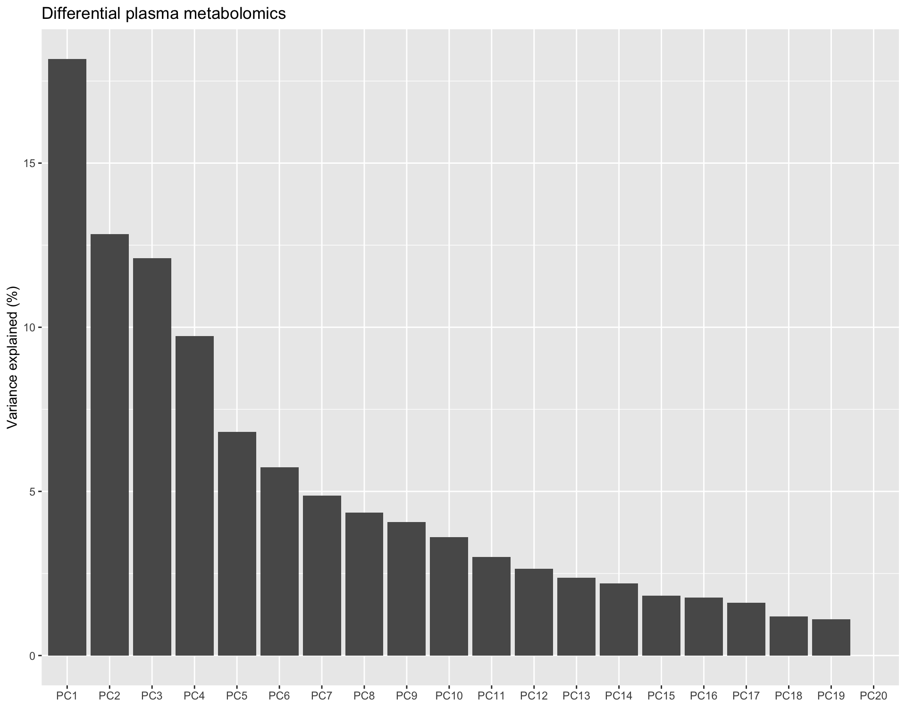
PC12 potentially separates recurrence and non-recurrence patients.
# Visualize PCs
ggplot(pcTab, aes(x=Recurrence, y=PC12, col=Recurrence, fill=Recurrence)) +
geom_boxplot(alpha = 0.5, outlier.shape = NA) +
geom_jitter(position = position_jitter(0.2), size = 2, show.legend = F) +
labs(title = 'Differential plasma metabolomics') +
scale_color_manual(values=c('#00BFC4', '#F8766D')) +
scale_fill_manual(values=c('#00BFC4', '#F8766D')) +
ggpubr::stat_compare_means(method = 't.test', paired = F, size = 5,
method.args = list(var.equal = T),
show.legend = F)
| Version | Author | Date |
|---|---|---|
| 0bbd8eb | LiaoQianWu | 2023-04-25 |
Plot molecular signatures captured by PC12 in input data. We took a look at top 20 features with highest loadings and observed metabolite levels of these top features through heatmap. Note that features in heatmap are ordered by their loadings.
# Plot molecular signatures in input data
# Extract top features with highest loadings
topFeats <- pcTopFeatTab$PC12$Feature[1:20]
# Order features by loadings
topFeatsIdx <- sapply(topFeats, function(feat) {which(rownames(datMat) == feat)})
pheatmap::pheatmap(datMat[topFeatsIdx, smpOrder],
annotation_col = smpRecur,
color = colorRampPalette(c('navy', 'white', 'red'))(100),
cluster_rows = F, cluster_cols = F,
scale = 'row', main = 'Differential plasma metabolomics - PC12')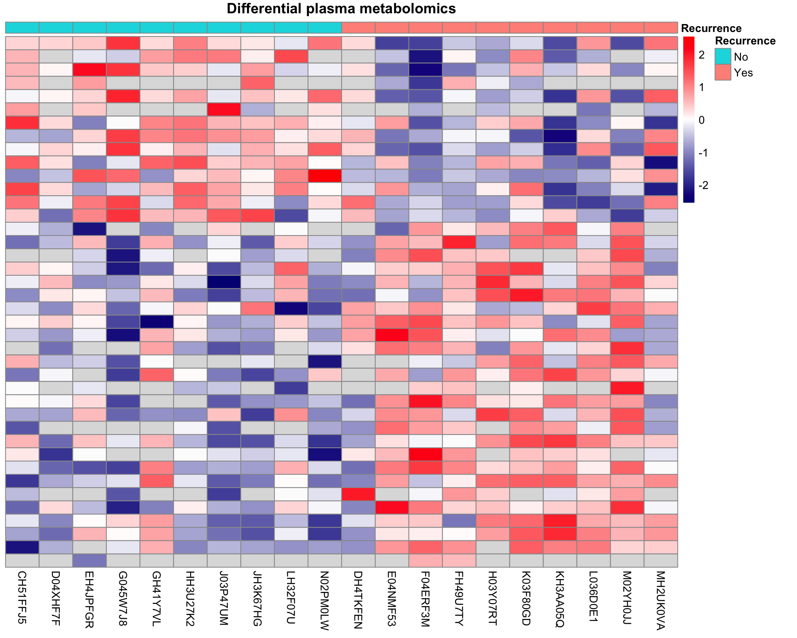
Display top features that build the PC12
# Display top features with highest loadings of PC of interest
pcTopFeats <- dplyr::left_join(pcTopFeatTab$PC12, featInfo, by = 'Feature')
pcTopFeats Feature Loading m.z_RT
1 Feature96 0.18945369 257.96496/3.99
2 Feature180 0.15649439 241.17313/6.66
3 Feature950 0.15394958 276.23191/8.47
4 Feature33 0.14833430 309.09255/1.35
5 Feature46 0.14810467 217.10445/2.5
6 Feature512 0.14150234 188.068/5.51
7 Feature191 0.14018649 303.00769/7.47
8 Feature612 0.13932620 542.32257/6.63
9 Feature48 0.13575729 261.13063/2.77
10 Feature445 0.12981252 265.06383/4.39
11 Feature935 0.12697644 242.24761/8.44
12 Feature72 0.11055421 255.97577/3.43
13 Feature55 0.11038707 305.10639/3.03
14 Feature395 0.11008318 267.07925/3.44
15 Feature140 0.10759997 738.1346/5.64
16 Feature276 0.10745046 229.07928/0.35
17 Feature242 0.10232143 573.57031/8.19
18 Feature627 0.10166869 568.3386/7.01
19 Feature178 0.09981036 423.19858/6.44
20 Feature910 0.09869945 663.58098/8.43
21 Feature397 0.09771453 285.08034/3.51
22 Feature846 0.09686120 310.30999/8.22
23 Feature366 0.09587397 638.0994/1.33
24 Feature386 0.09558509 310.13347/3.05
25 Feature561 0.09375841 741.14289/5.77
26 Feature840 0.09328966 310.31009/8.23
27 Feature423 0.09281307 148.06033/3.91
28 Feature746 0.09263030 701.55886/7.91
29 Feature151 0.09180428 743.13834/5.67
30 Feature207 0.09102710 395.27628/7.93# Store table in list for creating Excel file
sigFeatSheet <- append(sigFeatSheet, list(DiffPlasmaMetab_PC12 = pcTopFeats))Plasma Lipidomics
As described in Plasma Metabolomics section, we analyzed Baseline and Follow-up samples separately.
# Load normalized data
lipPlasmaVsn <- readRDS('./data/AG_Hopf/lipPlasmaVsn.rds')
# Retrieve feature information for making significant feature table
featInfo <- tibble::as_tibble(rowData(lipPlasmaVsn), rownames = 'Feature')
# Load Plasma Metabolomics data from AG Hell for changing sample names
metaPlasma_Hell <- readRDS('./data/AG_Hell/metaPlasmaNorm.rds')
smpNames <- tibble::as_tibble(colData(metaPlasma_Hell), rownames = 'Sample') %>%
dplyr::select(Sample, Identifier) %>%
dplyr::mutate(Identifier = stringr::str_remove(Identifier, '_3$'))
# Change sample names
colnames(lipPlasmaVsn) <- plyr::mapvalues(colnames(lipPlasmaVsn),
from = smpNames$Identifier,
to = smpNames$Sample)
# Add time point information into data
timePoint <- as.data.frame(colData(lipPlasmaVsn)) %>%
dplyr::mutate(TimePoint = dplyr::case_when(
Condition == 'Baseline' ~ 'Baseline',
Condition != 'Baseline' ~ '2 years later')) %>%
dplyr::select(TimePoint)
colData(lipPlasmaVsn)['TimePoint'] <- timePoint
# Perform analysis
lipPlasmaRes <- SOA(lipPlasmaVsn, fac = c('Recurrence', 'TimePoint'))
tPCASigRes <- lipPlasmaRes$tPCASigRes
pcaRes <- lipPlasmaRes$pcaRes
pcTab <- lipPlasmaRes$pcTabDisplay associations between learned PCs (Var1) and factors (Var2). Basically t-test was performed to test significance of difference between two groups, e.g., recurrence and non-recurrence patient groups or baseline and follow-up sample groups.
# Display PCs of interest
tPCASigRes Var1 Var2 pVal tStats pValAdj
1 PC1 TimePoint 5.551597e-06 5.278185 0.0004441277
2 PC15 Recurrence 9.468842e-03 -2.733186 0.2572315024
3 PC2 TimePoint 9.646181e-03 2.725842 0.2572315024
4 PC8 Recurrence 3.146256e-02 -2.233753 0.6292512296PC1 and PC2 explain most variation in data and separate patient samples by time point.
ggplot(pcTab, aes(x=PC1, y=PC2, col=TimePoint, shape=Recurrence, group=Patient)) +
geom_point(size = 3) +
geom_line(col = 'grey50', linetype = 'dashed') +
scale_color_discrete(name = 'Time point',
labels = c('Baseline', '2 years later'))
| Version | Author | Date |
|---|---|---|
| 0bbd8eb | LiaoQianWu | 2023-04-25 |
ggsave('./output/AG_Hopf/pca_PL.png', device = 'png', dpi = 400, height = 8, width = 10)Display variance explained by each PC
# Display proportion of total variance captured by all PCs explained by each PC
varExplained <- pcaRes$sdev^2 / sum(pcaRes$sdev^2)
PC <- paste0('PC', seq(length(varExplained)))
varTab <- data.frame(PC = factor(PC, levels = PC),
Var_explained = varExplained)
ggplot(varTab, aes(x=PC, y=Var_explained*100)) +
geom_col() +
labs(x = '', y = 'Variance explained (%)') +
theme(axis.text.x = element_text(angle = 90, hjust = 1, vjust = 0.5))
| Version | Author | Date |
|---|---|---|
| 0bbd8eb | LiaoQianWu | 2023-04-25 |
Baseline samples
Display significant associations between features (Var1) and cancer recurrence (Var2) and observe molecular signatures in input data through heatmap. Note that features in heatmap are ordered by their t-statistics.
# Subset baseline samples
smpBaseIdx <- which(colData(lipPlasmaVsn)$Condition == 'Baseline')
lipBase <- lipPlasmaVsn[, smpBaseIdx]
# Perform analysis
lipBaseRes <- SOA(lipBase, fac = 'Recurrence', num_feats = 30)
datMat <- lipBaseRes$data
smpAnno <- lipBaseRes$smpMetadata
tFeatSigRes <- lipBaseRes$tFeatSigRes
tPCASigRes <- lipBaseRes$tPCASigRes
pcaRes <- lipBaseRes$pcaRes
pcTab <- lipBaseRes$pcTab
pcTopFeatTab <- lipBaseRes$pcTopFeatTab
# Display features that can significantly separate recurrence and non-recurrence
# patients
sigFeatTab <- dplyr::mutate(tFeatSigRes, m.z_RT = plyr::mapvalues(Var1,
from = featInfo$Feature,
to = featInfo$m.z_RT,
warn_missing = F))
sigFeatTab Var1 Var2 pVal tStats pValAdj m.z_RT
1 Feature691 Recurrence 0.002256710 3.556183 0.9991861 807.67/7.94
2 Feature510 Recurrence 0.003054048 -3.419874 0.9991861 878.58/5.82
3 Feature701 Recurrence 0.003057027 3.419434 0.9991861 749.70/7.96
4 Feature2367 Recurrence 0.004230954 3.272434 0.9991861 748.69/7.97
5 Feature509 Recurrence 0.004259568 -3.269377 0.9991861 895.57/5.82
6 Feature579 Recurrence 0.005792651 -3.129518 0.9991861 628.59/6.3
7 Feature2011 Recurrence 0.006782469 -3.057373 0.9991861 619.53/6.65
8 Feature1246 Recurrence 0.007456944 3.212543 0.9991861 703.57/4.23
9 Feature2455 Recurrence 0.007891494 3.398545 0.9991861 736.54/8.92
10 Feature2347 Recurrence 0.008436118 2.957082 0.9991861 719.65/7.98
11 Feature689 Recurrence 0.009523149 2.921271 0.9991861 1,317.21/7.94
12 Feature1962 Recurrence 0.010420944 -2.859305 0.9991861 591.49/6.29
13 Feature124 Recurrence 0.010870011 -2.839695 0.9991861 909.80/1.04
14 Feature1724 Recurrence 0.012028171 2.916191 0.9991861 339.34/5.55
15 Feature610 Recurrence 0.012150411 -2.787787 0.9991861 614.57/6.66
16 Feature316 Recurrence 0.012662848 2.768474 0.9991861 859.52/4.02
17 Feature686 Recurrence 0.014007221 2.721159 0.9991861 371.36/7.94
18 Feature2183 Recurrence 0.014964876 2.690035 0.9991861 742.65/7.74
19 Feature711 Recurrence 0.015173550 2.683507 0.9991861 735.68/7.98
20 Feature1715 Recurrence 0.017168200 2.625090 0.9991861 817.59/5.56
21 Feature2252 Recurrence 0.017603799 2.613196 0.9991861 746.68/7.85
22 Feature478 Recurrence 0.018122200 -2.599400 0.9991861 725.54/5.54
23 Feature2184 Recurrence 0.018807590 2.581725 0.9991861 756.66/7.74
24 Feature1704 Recurrence 0.019095701 2.574476 0.9991861 816.59/5.56
25 Feature1467 Recurrence 0.019171394 2.646185 0.9991861 767.58/5.01
26 Feature2297 Recurrence 0.019293820 2.569552 0.9991861 682.65/7.92
27 Feature1390 Recurrence 0.019403321 -2.697376 0.9991861 732.55/4.82
28 Feature706 Recurrence 0.019724550 3.007758 0.9991861 663.45/7.97
29 Feature2338 Recurrence 0.021555335 2.516496 0.9991861 748.66/7.94
30 Feature2314 Recurrence 0.022419880 2.497593 0.9991861 722.68/7.94
31 Feature2358 Recurrence 0.022429462 2.497388 0.9991861 692.63/7.96
32 Feature847 Recurrence 0.022730860 3.042462 0.9991861 770.85/1.04
33 Feature887 Recurrence 0.023465629 -2.475626 0.9991861 815.80/1.05
34 Feature2224 Recurrence 0.023801642 2.468763 0.9991861 721.67/7.8
35 Feature2178 Recurrence 0.024936867 2.446230 0.9991861 719.57/7.74
36 Feature1293 Recurrence 0.025800114 2.429732 0.9991861 980.50/4.44
37 Feature2279 Recurrence 0.026058712 2.424890 0.9991861 369.35/7.94
38 Feature1031 Recurrence 0.026915403 -2.409166 0.9991861 384.85/1.08
39 Feature2186 Recurrence 0.027805870 2.393311 0.9991861 770.68/7.74
40 Feature1943 Recurrence 0.027939156 2.530688 0.9991861 850.67/6.25
41 Feature1476 Recurrence 0.029038774 -2.853743 0.9991861 818.60/5.04
42 Feature1942 Recurrence 0.030243443 2.522769 0.9991861 785.65/6.28
43 Feature1018 Recurrence 0.030484165 -2.348329 0.9991861 854.81/1.05
44 Feature2371 Recurrence 0.030689055 2.345041 0.9991861 734.68/7.98
45 Feature979 Recurrence 0.031768610 -2.328049 0.9991861 658.79/1.08
46 Feature2357 Recurrence 0.032873283 2.311208 0.9991861 720.66/7.98
47 Feature980 Recurrence 0.033207605 -2.306215 0.9991861 1,158.71/1.07
48 Feature732 Recurrence 0.033361378 -2.748422 0.9991861 660.08/0.74
49 Feature872 Recurrence 0.033709257 -2.322635 0.9991861 888.81/1.05
50 Feature1633 Recurrence 0.033812614 2.297296 0.9991861 811.66/5.41
51 Feature1250 Recurrence 0.034988703 2.712520 0.9991861 655.32/4.27
52 Feature1035 Recurrence 0.035007117 -2.280114 0.9991861 980.76/1.05
53 Feature2248 Recurrence 0.036047290 2.265588 0.9991861 732.66/7.85
54 Feature1964 Recurrence 0.036099023 -2.264875 0.9991861 642.60/6.3
55 Feature695 Recurrence 0.036982791 2.252850 0.9991861 723.68/7.95
56 Feature680 Recurrence 0.037924544 2.483157 0.9991861 906.83/7.91
57 Feature2310 Recurrence 0.038148518 -2.259634 0.9991861 878.82/7.91
58 Feature2260 Recurrence 0.038364603 2.234570 0.9991861 717.63/7.86
59 Feature877 Recurrence 0.039210514 -2.223677 0.9991861 870.79/1.06
60 Feature2205 Recurrence 0.039592666 2.218826 0.9991861 706.65/7.8
61 Feature1387 Recurrence 0.040815086 -2.316690 0.9991861 822.54/4.79
62 Feature159 Recurrence 0.041441165 2.195955 0.9991861 288.22/1.11
63 Feature1848 Recurrence 0.041474752 -2.195548 0.9991861 665.51/5.89
64 Feature2209 Recurrence 0.042114075 2.187862 0.9991861 720.66/7.8
65 Feature752 Recurrence 0.042478929 -2.269466 0.9991861 382.07/0.77
66 Feature1810 Recurrence 0.042731849 -2.180535 0.9991861 868.55/5.82
67 Feature1389 Recurrence 0.043311765 2.173745 0.9991861 816.59/4.78
68 Feature1882 Recurrence 0.043541957 2.255769 0.9991861 812.67/5.98
69 Feature1143 Recurrence 0.044057351 -2.165137 0.9991861 381.30/3.09
70 Feature867 Recurrence 0.045870792 -2.164737 0.9991861 820.82/1.06
71 Feature1849 Recurrence 0.047538701 -2.126626 0.9991861 686.57/5.9
72 Feature2151 Recurrence 0.047846633 2.168402 0.9991861 737.54/7.68
73 Feature982 Recurrence 0.048516334 -2.116275 0.9991861 944.72/1.08
74 Feature945 Recurrence 0.049296505 -2.108149 0.9991861 823.79/1.05
75 Feature1038 Recurrence 0.049744870 -2.103532 0.9991861 804.80/1.07
76 Feature698 Recurrence 0.049798452 2.102983 0.9991861 736.69/7.96# Plot molecular signatures in input data
# Order features according to t-statistics
featOrder <- dplyr::arrange(tFeatSigRes, dplyr::desc(tStats))$Var1
# Arrange samples to make same groups in same clusters
smpOrder <- c(which(smpAnno$Recurrence == 'No'),
which(smpAnno$Recurrence == 'Yes'))
# Prepare recurrence table for annotating samples in heatmap
smpRecur <- dplyr::select(smpAnno, Sample, Recurrence) %>%
tibble::column_to_rownames('Sample')
pheatmap::pheatmap(datMat[featOrder, smpOrder],
annotation_col = smpRecur,
color = colorRampPalette(c('navy', 'white', 'red'))(100),
cluster_rows = F, cluster_cols = F, show_rownames = F,
scale = 'row', main = 'Baseline plasma lipidomics')
| Version | Author | Date |
|---|---|---|
| 0bbd8eb | LiaoQianWu | 2023-04-25 |
Use probabilistic dropout model to account for missing values and identify differentially abundant entities that are significantly associated with cancer recurrence. Note that features in heatmap are ordered by their t-statistics.
# Fit linear probabilistic dropout model to normalized data
fit <- proDA::proDA(datMat, design = ~ smpAnno$Recurrence)
# fit
# Check coefficient names for Parameter 'contrast' in proDA::test_diff()
# proDA::result_names(fit)
# Identify significant differentially abundant entities
all_proDALipBaseRes <- proDA::test_diff(fit,
contrast = Intercept + `smpAnno$RecurrenceYes` - Intercept,
sort_by = 'pval')
proDALipBaseRes <- dplyr::select(all_proDALipBaseRes,
-c(diff, se, df, avg_abundance, n_approx)) %>%
dplyr::filter(pval < 0.05) %>%
dplyr::mutate(MZ_RT = plyr::mapvalues(name,
from = featInfo$Feature,
to = featInfo$m.z_RT,
warn_missing = F))
proDALipBaseRes name pval adj_pval t_statistic n_obs MZ_RT
1 Feature691 0.002342844 0.9995017 -3.539330 20 807.67/7.94
2 Feature701 0.003790986 0.9995017 -3.322182 20 749.70/7.96
3 Feature2367 0.005365778 0.9995017 -3.164428 20 748.69/7.97
4 Feature179 0.005912692 0.9995017 3.120153 3 818.45/1.42
5 Feature1246 0.006298434 0.9995017 -3.091269 14 703.57/4.23
6 Feature579 0.008216320 0.9995017 2.969252 20 628.59/6.3
7 Feature509 0.008979057 0.9995017 2.928291 20 895.57/5.82
8 Feature689 0.009171028 0.9995017 -2.918512 19 1,317.21/7.94
9 Feature2347 0.010125538 0.9995017 -2.872654 20 719.65/7.98
10 Feature1390 0.012602572 0.9995017 2.770706 14 732.55/4.82
11 Feature686 0.014700778 0.9995017 -2.698424 20 371.36/7.94
12 Feature510 0.014948615 0.9995017 2.690548 20 878.58/5.82
13 Feature2011 0.015138602 0.9995017 2.684594 20 619.53/6.65
14 Feature124 0.016524013 0.9995017 2.643216 20 909.80/1.04
15 Feature1962 0.016921255 0.9995017 2.631961 20 591.49/6.29
16 Feature2183 0.018738522 0.9995017 -2.583478 20 742.65/7.74
17 Feature2252 0.019101154 0.9995017 -2.574340 20 746.68/7.85
18 Feature1943 0.019412140 0.9995017 -2.566633 13 850.67/6.25
19 Feature2297 0.020619146 0.9995017 -2.537789 20 682.65/7.92
20 Feature711 0.020750085 0.9995017 -2.534757 20 735.68/7.98
21 Feature610 0.021462490 0.9995017 2.518568 20 614.57/6.66
22 Feature2338 0.021822388 0.9995017 -2.510582 20 748.66/7.94
23 Feature1704 0.022828611 0.9995017 -2.488895 20 816.59/5.56
24 Feature2184 0.022926514 0.9995017 -2.486833 20 756.66/7.74
25 Feature2358 0.023531944 0.9995017 -2.474264 20 692.63/7.96
26 Feature1467 0.023652929 0.9995017 -2.471789 16 767.58/5.01
27 Feature2224 0.023691717 0.9995017 -2.470998 20 721.67/7.8
28 Feature1387 0.024845302 0.9995017 2.448012 13 822.54/4.79
29 Feature1715 0.025033365 0.9995017 -2.444360 20 817.59/5.56
30 Feature2455 0.025233941 0.9995017 -2.440493 11 736.54/8.92
31 Feature752 0.027492447 0.9995017 2.398836 14 382.07/0.77
32 Feature887 0.028162801 0.9995017 2.387088 20 815.80/1.05
33 Feature2178 0.028270981 0.9995017 -2.385217 20 719.57/7.74
34 Feature1724 0.028366407 0.9995017 -2.383571 15 339.34/5.55
35 Feature2314 0.028588425 0.9995017 -2.379764 20 722.68/7.94
36 Feature2186 0.029621094 0.9995017 -2.362407 20 770.68/7.74
37 Feature2279 0.030175717 0.9995017 -2.353317 20 369.35/7.94
38 Feature706 0.031244297 0.9995017 -2.336233 9 663.45/7.97
39 Feature1633 0.033640806 0.9995017 -2.299814 20 811.66/5.41
40 Feature316 0.034906660 0.9995017 -2.281538 20 859.52/4.02
41 Feature2151 0.037843115 0.9995017 -2.241397 16 737.54/7.68
42 Feature2310 0.038805758 0.9995017 2.228862 18 878.82/7.91
43 Feature2371 0.038895669 0.9995017 -2.227706 20 734.68/7.98
44 Feature1031 0.039268271 0.9995017 2.222941 20 384.85/1.08
45 Feature2205 0.039829155 0.9995017 -2.215846 20 706.65/7.8
46 Feature680 0.041503617 0.9995017 -2.195199 10 906.83/7.91
47 Feature1964 0.041890940 0.9995017 2.190532 20 642.60/6.3
48 Feature2357 0.041990970 0.9995017 -2.189333 20 720.66/7.98
49 Feature2209 0.042380103 0.9995017 -2.184695 20 720.66/7.8
50 Feature979 0.043505273 0.9995017 2.171498 20 658.79/1.08
51 Feature1848 0.043628438 0.9995017 2.170072 20 665.51/5.89
52 Feature2248 0.043643222 0.9995017 -2.169902 20 732.66/7.85
53 Feature1389 0.043659043 0.9995017 -2.169719 20 816.59/4.78
54 Feature1882 0.043996798 0.9995017 -2.165831 14 812.67/5.98
55 Feature159 0.044055374 0.9995017 -2.165159 20 288.22/1.11
56 Feature1035 0.045305426 0.9995017 2.151021 20 980.76/1.05
57 Feature1293 0.046080672 0.9995017 -2.142431 20 980.50/4.44
58 Feature872 0.047723620 0.9995017 2.124653 18 888.81/1.05
59 Feature695 0.047749042 0.9995017 -2.124383 20 723.68/7.95
60 Feature1849 0.047919365 0.9995017 2.122573 20 686.57/5.9
61 Feature980 0.048669800 0.9995017 2.114667 20 1,158.71/1.07
62 Feature2260 0.049593378 0.9995017 -2.105088 20 717.63/7.86# Plot molecular signatures in input data
# Order features according to t-statistics
featOrder <- dplyr::arrange(proDALipBaseRes, dplyr::desc(t_statistic))$name
pheatmap::pheatmap(datMat[featOrder, smpOrder],
annotation_col = smpRecur,
color = colorRampPalette(c('navy', 'white', 'red'))(100),
cluster_rows = F, cluster_cols = F, show_rownames = F,
scale = 'row', main = 'Baseline plasma lipidomics (proDA)')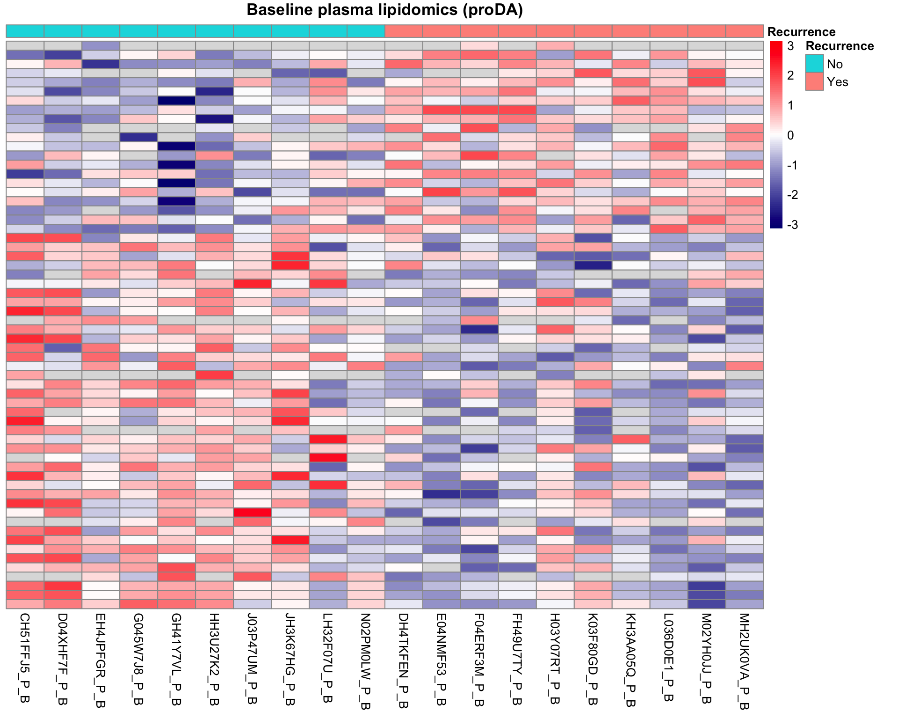
# Store table in list for creating Excel file
sigFeatSheet <- append(sigFeatSheet, list(BasePlasmaLipid_Feats = proDALipBaseRes))ovl <- intersect(lipBaseRes$tFeatSigRes$Var1, proDALipBaseRes$name)
cat('The following features', paste0('(n =', length(ovl), ')'),
'are tested significant by both methods:\n', ovl)The following features (n =61) are tested significant by both methods:
Feature691 Feature510 Feature701 Feature2367 Feature509 Feature579 Feature2011 Feature1246 Feature2455 Feature2347 Feature689 Feature1962 Feature124 Feature1724 Feature610 Feature316 Feature686 Feature2183 Feature711 Feature1715 Feature2252 Feature2184 Feature1704 Feature1467 Feature2297 Feature1390 Feature706 Feature2338 Feature2314 Feature2358 Feature887 Feature2224 Feature2178 Feature1293 Feature2279 Feature1031 Feature2186 Feature1943 Feature2371 Feature979 Feature2357 Feature980 Feature872 Feature1633 Feature1035 Feature2248 Feature1964 Feature695 Feature680 Feature2310 Feature2260 Feature2205 Feature1387 Feature159 Feature1848 Feature2209 Feature752 Feature1389 Feature1882 Feature1849 Feature2151Visualize data of top 6 significant features based on proDA result
# Visualize data of top 6 significant features
topSigFeats <- proDALipBaseRes$name[1:6]
topSigFeatData <- tibble::as_tibble(datMat[topSigFeats,], rownames = 'Feature') %>%
tidyr::pivot_longer(cols = -'Feature',
names_to = 'Sample', values_to = 'Abundance') %>%
dplyr::mutate(Feature = factor(Feature, levels = topSigFeats)) %>%
dplyr::left_join(smpAnno, by = 'Sample')
ggplot(topSigFeatData, aes(x=Recurrence, y=Abundance, col=Recurrence, fill=Recurrence)) +
geom_boxplot(alpha = 0.5, outlier.shape = NA) +
geom_jitter(position = position_jitter(0.2), size = 2, show.legend = F) +
scale_color_manual(values=c('#00BFC4', '#F8766D')) +
scale_fill_manual(values=c('#00BFC4', '#F8766D')) +
facet_wrap(vars(Feature), scales = 'free') +
ggpubr::stat_compare_means(method = 't.test', paired = F,
method.args = list(var.equal = T),
show.legend = F)
| Version | Author | Date |
|---|---|---|
| 0bbd8eb | LiaoQianWu | 2023-04-25 |
There is no significant association between PCs (Var1) and cancer recurrence (Var2).
# Display PCs that can significantly separate recurrence and non-recurrence
# patients
tPCASigRes[1] Var1 Var2 pVal tStats pValAdj
<0 rows> (or 0-length row.names)Follow-up samples
Display significant associations between features (Var1) and cancer recurrence (Var2) and observe molecular signatures in input data through heatmap. Note that features in heatmap are ordered by their t-statistics.
# Subset follow-up samples
smpFoloIdx <- which(colData(lipPlasmaVsn)$Condition != 'Baseline')
lipFolo <- lipPlasmaVsn[, smpFoloIdx]
# Perform analysis
lipFoloRes <- SOA(lipFolo, fac = 'Recurrence', num_feats = 30)
datMat <- lipFoloRes$data
smpAnno <- lipFoloRes$smpMetadata
tFeatSigRes <- lipFoloRes$tFeatSigRes
tPCASigRes <- lipFoloRes$tPCASigRes
pcaRes <- lipFoloRes$pcaRes
# Display features that can significantly separate recurrence and non-recurrence
# patients
sigFeatTab <- dplyr::mutate(tFeatSigRes, m.z_RT = plyr::mapvalues(Var1,
from = featInfo$Feature,
to = featInfo$m.z_RT,
warn_missing = F))
sigFeatTab Var1 Var2 pVal tStats pValAdj m.z_RT
1 Feature1781 Recurrence 0.0001790085 4.698575 0.2525700 800.55/5.78
2 Feature958 Recurrence 0.0004755293 -4.255775 0.2525700 883.79/1.05
3 Feature1363 Recurrence 0.0004766496 6.130323 0.2525700 703.57/4.65
4 Feature1794 Recurrence 0.0004885515 4.243602 0.2525700 784.58/5.8
5 Feature1930 Recurrence 0.0005266264 4.209802 0.2525700 790.63/6.24
6 Feature1772 Recurrence 0.0009889057 3.926653 0.3952326 752.56/5.74
7 Feature1790 Recurrence 0.0013664410 3.781546 0.4431613 762.60/5.79
8 Feature1853 Recurrence 0.0018168016 3.653653 0.4431613 817.64/5.87
9 Feature1711 Recurrence 0.0021730287 3.573180 0.4431613 767.57/5.56
10 Feature1916 Recurrence 0.0022096420 3.565665 0.4431613 780.59/6.2
11 Feature1079 Recurrence 0.0023529454 3.653492 0.4431613 520.34/1.88
12 Feature1777 Recurrence 0.0026236156 3.488367 0.4431613 778.57/5.74
13 Feature1826 Recurrence 0.0026972512 3.475896 0.4431613 838.63/5.84
14 Feature1031 Recurrence 0.0037531061 -3.326728 0.4431613 384.85/1.08
15 Feature1371 Recurrence 0.0050277201 3.194059 0.4431613 790.57/4.71
16 Feature1775 Recurrence 0.0050765863 3.189657 0.4431613 796.52/5.75
17 Feature1952 Recurrence 0.0052819365 3.259277 0.4431613 814.63/6.24
18 Feature1704 Recurrence 0.0053912819 3.162267 0.4431613 816.59/5.56
19 Feature1938 Recurrence 0.0055356824 3.236377 0.4431613 787.60/6.24
20 Feature317 Recurrence 0.0056203998 3.143292 0.4431613 723.54/4.02
21 Feature177 Recurrence 0.0056545116 3.426840 0.4431613 241.17/1.41
22 Feature1127 Recurrence 0.0057043789 3.136526 0.4431613 508.38/2.55
23 Feature2329 Recurrence 0.0063882773 -4.501912 0.4431613 671.57/7.93
24 Feature1533 Recurrence 0.0068294564 3.054209 0.4431613 792.59/5.17
25 Feature834 Recurrence 0.0070836306 -3.037452 0.4431613 488.87/1.02
26 Feature233 Recurrence 0.0071480116 -3.055930 0.4431613 268.26/2.3
27 Feature2315 Recurrence 0.0072224119 -3.106385 0.4431613 680.48/7.91
28 Feature1110 Recurrence 0.0073226918 3.022217 0.4431613 524.37/2.38
29 Feature226 Recurrence 0.0073389487 -3.132753 0.4431613 559.52/2.19
30 Feature1550 Recurrence 0.0073442896 3.020864 0.4431613 887.57/5.18
31 Feature1824 Recurrence 0.0074678934 3.035446 0.4431613 823.64/5.84
32 Feature1422 Recurrence 0.0074944333 3.011567 0.4431613 766.57/4.9
33 Feature1111 Recurrence 0.0076185714 3.004016 0.4431613 614.34/2.38
34 Feature957 Recurrence 0.0078231143 -2.991831 0.4431613 964.78/1.05
35 Feature942 Recurrence 0.0078964523 -2.987538 0.4431613 917.78/1.04
36 Feature1841 Recurrence 0.0080144227 3.088432 0.4431613 833.65/5.86
37 Feature1806 Recurrence 0.0080543079 2.978426 0.4431613 839.63/5.84
38 Feature864 Recurrence 0.0082779930 -2.965806 0.4431613 930.79/1.06
39 Feature1644 Recurrence 0.0083013138 -2.964509 0.4431613 736.54/5.43
40 Feature2303 Recurrence 0.0089744686 -2.949210 0.4431613 924.75/7.93
41 Feature1108 Recurrence 0.0093701142 2.952068 0.4431613 496.34/2.25
42 Feature1389 Recurrence 0.0094735290 2.903499 0.4431613 816.59/4.78
43 Feature1109 Recurrence 0.0101174887 2.873022 0.4431613 524.37/2.27
44 Feature855 Recurrence 0.0106027870 -2.851268 0.4431613 776.79/1.06
45 Feature1100 Recurrence 0.0109782682 2.835084 0.4431613 480.34/2.08
46 Feature1026 Recurrence 0.0110052164 -2.833943 0.4431613 640.82/1.06
47 Feature217 Recurrence 0.0110303995 -2.851878 0.4431613 228.23/1.99
48 Feature1835 Recurrence 0.0114534446 2.815351 0.4431613 814.63/5.87
49 Feature1795 Recurrence 0.0114654657 2.854843 0.4431613 827.63/5.8
50 Feature897 Recurrence 0.0114932573 -2.813734 0.4431613 841.81/1.04
51 Feature1796 Recurrence 0.0115739223 2.810473 0.4431613 785.59/5.81
52 Feature799 Recurrence 0.0116548506 -2.807224 0.4431613 361.02/0.87
53 Feature1736 Recurrence 0.0117955462 2.801626 0.4431613 752.56/5.58
54 Feature827 Recurrence 0.0118299378 -2.800268 0.4431613 352.90/1.02
55 Feature1917 Recurrence 0.0120560447 2.791429 0.4431613 730.57/6.2
56 Feature936 Recurrence 0.0121738160 -2.786888 0.4431613 807.82/1.04
57 Feature142 Recurrence 0.0122506241 -2.802120 0.4431613 896.79/1.05
58 Feature2158 Recurrence 0.0124179568 -2.839885 0.4431613 954.85/7.74
59 Feature2432 Recurrence 0.0124222551 -2.937817 0.4431613 932.86/8.14
60 Feature1393 Recurrence 0.0124475204 2.776496 0.4431613 792.59/4.82
61 Feature915 Recurrence 0.0124994822 -2.774548 0.4431613 724.78/1.07
62 Feature1247 Recurrence 0.0125349075 -2.773224 0.4431613 338.34/4.25
63 Feature524 Recurrence 0.0130742596 2.753502 0.4431613 837.62/5.87
64 Feature523 Recurrence 0.0132788224 3.073493 0.4431613 836.65/5.86
65 Feature65 Recurrence 0.0134120092 -2.741546 0.4431613 488.96/0.96
66 Feature71 Recurrence 0.0135257697 -2.737583 0.4431613 546.83/0.99
67 Feature819 Recurrence 0.0138324565 -2.744293 0.4431613 818.78/1
68 Feature1889 Recurrence 0.0139142057 2.741480 0.4431613 794.60/6
69 Feature1703 Recurrence 0.0140139230 2.720934 0.4431613 776.56/5.57
70 Feature2176 Recurrence 0.0141656364 -2.867109 0.4431613 300.14/7.72
71 Feature1195 Recurrence 0.0144257785 2.707313 0.4431613 701.56/4.02
72 Feature123 Recurrence 0.0149940420 -2.689118 0.4431613 875.80/1.04
73 Feature1236 Recurrence 0.0150623905 2.686974 0.4431613 721.58/4.23
74 Feature880 Recurrence 0.0150976008 -2.685873 0.4431613 972.77/1.06
75 Feature74 Recurrence 0.0151058570 -2.702189 0.4431613 614.82/0.99
76 Feature237 Recurrence 0.0151555502 2.684066 0.4431613 604.31/2.38
77 Feature148 Recurrence 0.0157438855 -2.746790 0.4431613 794.81/1.06
78 Feature1112 Recurrence 0.0160178797 2.657936 0.4431613 786.25/2.38
79 Feature1431 Recurrence 0.0161323922 2.654567 0.4431613 815.57/4.91
80 Feature2240 Recurrence 0.0161681169 -2.687883 0.4431613 898.72/7.83
81 Feature1035 Recurrence 0.0161916209 -2.652833 0.4431613 980.76/1.05
82 Feature1037 Recurrence 0.0165129844 -2.643532 0.4431613 368.87/1.06
83 Feature1055 Recurrence 0.0166731991 2.693544 0.4431613 286.14/1.32
84 Feature833 Recurrence 0.0167692617 -2.636237 0.4431613 420.88/1.02
85 Feature847 Recurrence 0.0167701483 -2.929518 0.4431613 770.85/1.04
86 Feature256 Recurrence 0.0171468901 -2.641324 0.4431613 270.28/2.63
87 Feature948 Recurrence 0.0178846046 -2.605676 0.4431613 436.86/1.06
88 Feature556 Recurrence 0.0180426757 2.601492 0.4431613 817.69/6.26
89 Feature874 Recurrence 0.0182361473 -2.596418 0.4431613 684.84/1.04
90 Feature150 Recurrence 0.0190884429 -2.606465 0.4431613 904.78/1.06
91 Feature107 Recurrence 0.0190901632 -2.606420 0.4431613 739.83/1.04
92 Feature1024 Recurrence 0.0196607283 -2.560557 0.4431613 878.73/1.07
93 Feature679 Recurrence 0.0197366553 -2.573362 0.4431613 949.75/7.9
94 Feature970 Recurrence 0.0197508451 -2.558372 0.4431613 708.81/1.06
95 Feature1436 Recurrence 0.0197578496 2.558202 0.4431613 814.57/4.89
96 Feature1610 Recurrence 0.0199020271 2.554727 0.4431613 794.60/5.38
97 Feature1547 Recurrence 0.0200943489 2.550129 0.4431613 768.59/5.19
98 Feature1514 Recurrence 0.0201755067 2.548201 0.4431613 724.53/5.13
99 Feature848 Recurrence 0.0202208719 -2.547126 0.4431613 922.80/1.06
100 Feature1097 Recurrence 0.0202664840 2.643350 0.4431613 496.34/2.05
101 Feature903 Recurrence 0.0204456190 -2.541836 0.4431613 998.77/1.05
102 Feature225 Recurrence 0.0204792318 -2.555440 0.4431613 242.25/2.15
103 Feature986 Recurrence 0.0206158442 -2.537866 0.4431613 462.86/1.07
104 Feature859 Recurrence 0.0207638989 -2.564990 0.4431613 828.81/1.05
105 Feature1427 Recurrence 0.0211517398 2.525567 0.4431613 748.53/4.9
106 Feature277 Recurrence 0.0212656847 -2.522989 0.4431613 391.28/3.12
107 Feature2316 Recurrence 0.0213263409 -2.726357 0.4431613 916.83/7.91
108 Feature2154 Recurrence 0.0214748816 -2.518291 0.4431613 929.75/7.73
109 Feature938 Recurrence 0.0215215124 -2.517250 0.4431613 857.78/1.05
110 Feature1040 Recurrence 0.0215419770 -2.516794 0.4431613 452.83/1.08
111 Feature50 Recurrence 0.0216683282 -2.513985 0.4431613 344.23/0.86
112 Feature905 Recurrence 0.0217206573 -2.512827 0.4431613 849.80/1.04
113 Feature971 Recurrence 0.0219484339 -2.507814 0.4431613 656.79/1.08
114 Feature1829 Recurrence 0.0220887213 2.504751 0.4431613 728.56/5.85
115 Feature1319 Recurrence 0.0223348435 2.499422 0.4431613 858.60/4.51
116 Feature1103 Recurrence 0.0223473374 2.499153 0.4431613 482.36/2.13
117 Feature2408 Recurrence 0.0224642731 2.916106 0.4431613 369.35/8.09
118 Feature1839 Recurrence 0.0224658825 2.496607 0.4431613 850.63/5.86
119 Feature395 Recurrence 0.0225509344 -2.494788 0.4431613 1,148.34/4.73
120 Feature1668 Recurrence 0.0227069049 2.491469 0.4431613 820.62/5.47
121 Feature887 Recurrence 0.0229008206 -2.487373 0.4431613 815.80/1.05
122 Feature238 Recurrence 0.0231423960 2.482316 0.4431613 608.32/2.38
123 Feature825 Recurrence 0.0232101933 -2.480905 0.4431613 352.90/1.02
124 Feature654 Recurrence 0.0239252679 -2.466260 0.4431613 947.73/7.79
125 Feature64 Recurrence 0.0242001728 -2.526376 0.4431613 284.99/0.96
126 Feature1113 Recurrence 0.0242700096 2.459346 0.4431613 666.31/2.38
127 Feature422 Recurrence 0.0244064070 2.469840 0.4431613 807.64/4.92
128 Feature2379 Recurrence 0.0248042308 -2.638347 0.4431613 902.82/8.04
129 Feature844 Recurrence 0.0248982044 -2.446982 0.4431613 718.84/1.06
130 Feature1054 Recurrence 0.0250945875 2.456197 0.4431613 286.14/1.32
131 Feature1544 Recurrence 0.0252345389 2.440481 0.4431613 778.60/5.18
132 Feature658 Recurrence 0.0254395142 -2.464187 0.4431613 1,015.71/7.8
133 Feature822 Recurrence 0.0255940148 -2.433623 0.4431613 886.77/1
134 Feature224 Recurrence 0.0256151659 2.446108 0.4431613 497.34/2.05
135 Feature2438 Recurrence 0.0257830884 -2.543264 0.4431613 948.89/8.16
136 Feature2243 Recurrence 0.0258121122 -2.442342 0.4431613 882.75/7.81
137 Feature73 Recurrence 0.0258224044 -2.429313 0.4431613 682.81/0.99
138 Feature2004 Recurrence 0.0259780967 2.611405 0.4431613 828.69/6.48
139 Feature1949 Recurrence 0.0261313853 2.423538 0.4431613 799.67/6.26
140 Feature974 Recurrence 0.0263598105 -2.419309 0.4431613 740.76/1.08
141 Feature316 Recurrence 0.0263961555 2.418639 0.4431613 859.52/4.02
142 Feature398 Recurrence 0.0264570189 -2.417520 0.4431613 770.56/4.73
143 Feature519 Recurrence 0.0266109467 2.441700 0.4431613 815.68/5.86
144 Feature1831 Recurrence 0.0269536086 2.408476 0.4431613 811.67/5.86
145 Feature392 Recurrence 0.0269541619 2.519091 0.4431613 812.54/4.64
146 Feature638 Recurrence 0.0269814641 -2.492224 0.4431613 925.80/7.6
147 Feature1010 Recurrence 0.0276973247 -2.395218 0.4452379 1,100.76/1.05
148 Feature1453 Recurrence 0.0279305293 2.391129 0.4452379 774.54/4.96
149 Feature63 Recurrence 0.0280030064 2.416163 0.4452379 315.00/0.95
150 Feature2449 Recurrence 0.0280071230 2.762198 0.4452379 641.30/8.52
151 Feature934 Recurrence 0.0282721314 -2.467410 0.4452379 846.82/1.04
152 Feature1855 Recurrence 0.0285205425 -2.556979 0.4452379 338.34/5.86
153 Feature1211 Recurrence 0.0285498251 2.380424 0.4452379 830.57/4.07
154 Feature894 Recurrence 0.0285932582 -2.379681 0.4452379 1,142.74/1.06
155 Feature1370 Recurrence 0.0291722371 -2.733940 0.4469651 338.34/4.66
156 Feature1471 Recurrence 0.0292228389 2.369033 0.4469651 742.57/5.04
157 Feature849 Recurrence 0.0292633553 -2.368355 0.4469651 990.79/1.05
158 Feature868 Recurrence 0.0297569688 -2.401167 0.4489534 862.80/1.06
159 Feature343 Recurrence 0.0297679694 2.359985 0.4489534 594.48/4.23
160 Feature1028 Recurrence 0.0302171174 -2.352645 0.4511429 516.87/1.06
161 Feature1643 Recurrence 0.0304007933 2.374860 0.4511429 768.59/5.41
162 Feature119 Recurrence 0.0310619028 -2.379186 0.4511429 739.83/1.04
163 Feature156 Recurrence 0.0310680450 -2.339013 0.4511429 946.72/1.07
164 Feature1191 Recurrence 0.0311275937 2.338073 0.4511429 854.57/3.93
165 Feature2328 Recurrence 0.0313167987 -2.502419 0.4511429 920.86/7.96
166 Feature824 Recurrence 0.0314604736 -2.332844 0.4511429 420.88/1.01
167 Feature1071 Recurrence 0.0314618856 -2.332822 0.4511429 336.23/1.76
168 Feature845 Recurrence 0.0316063436 -2.330568 0.4511429 786.82/1.06
169 Feature667 Recurrence 0.0322523608 2.397220 0.4552039 708.65/7.8
170 Feature1749 Recurrence 0.0324975631 2.316876 0.4552039 770.60/5.66
171 Feature712 Recurrence 0.0329468176 -2.310106 0.4552039 973.90/7.98
172 Feature234 Recurrence 0.0331003043 2.307813 0.4552039 428.37/2.35
173 Feature115 Recurrence 0.0331803062 -2.306621 0.4552039 1,045.77/1.04
174 Feature555 Recurrence 0.0332984072 2.304867 0.4552039 791.68/6.26
175 Feature1032 Recurrence 0.0340443585 -2.293919 0.4552039 996.73/1.06
176 Feature858 Recurrence 0.0340939410 -2.293200 0.4552039 956.79/1.04
177 Feature761 Recurrence 0.0341080880 -2.316668 0.4552039 684.04/0.77
178 Feature1068 Recurrence 0.0342362646 2.888760 0.4552039 448.34/1.73
179 Feature1081 Recurrence 0.0343420762 2.289612 0.4552039 991.67/1.93
180 Feature878 Recurrence 0.0344559106 -2.287974 0.4552039 928.74/1.06
181 Feature518 Recurrence 0.0345329164 2.286869 0.4552039 729.56/5.84
182 Feature979 Recurrence 0.0348244982 -2.282705 0.4552039 658.79/1.08
183 Feature1060 Recurrence 0.0349287307 2.281225 0.4552039 518.32/1.56
184 Feature1761 Recurrence 0.0351016764 2.289689 0.4552039 813.62/5.65
185 Feature138 Recurrence 0.0352011555 -2.288269 0.4552039 752.83/1.05
186 Feature1116 Recurrence 0.0354917063 2.273298 0.4552039 682.33/2.38
187 Feature1934 Recurrence 0.0356763530 2.468185 0.4552039 759.64/6.24
188 Feature2253 Recurrence 0.0361106717 -2.264715 0.4552039 931.77/7.87
189 Feature516 Recurrence 0.0361777892 2.263793 0.4552039 822.12/5.84
190 Feature111 Recurrence 0.0363093781 -2.261989 0.4552039 943.79/1.04
191 Feature975 Recurrence 0.0363387577 -2.261587 0.4552039 808.74/1.08
192 Feature2174 Recurrence 0.0364466821 -2.260113 0.4552039 880.74/7.71
193 Feature2197 Recurrence 0.0374730372 -2.268764 0.4636400 907.76/7.8
194 Feature1530 Recurrence 0.0376593605 2.314108 0.4636400 806.60/5.16
195 Feature117 Recurrence 0.0382686075 -2.235820 0.4636400 705.83/1.04
196 Feature1003 Recurrence 0.0382820349 -2.235645 0.4636400 1,048.75/1.05
197 Feature1699 Recurrence 0.0384370204 2.233629 0.4636400 744.59/5.55
198 Feature1903 Recurrence 0.0385038174 2.232762 0.4636400 772.62/6.06
199 Feature929 Recurrence 0.0385129321 -2.232644 0.4636400 726.78/1.07
200 Feature120 Recurrence 0.0388619468 -2.228139 0.4636400 773.82/1.04
201 Feature700 Recurrence 0.0389351544 -2.343443 0.4636400 922.87/7.96
202 Feature940 Recurrence 0.0390555836 -2.225656 0.4636400 781.81/1.05
203 Feature1407 Recurrence 0.0401588594 2.233324 0.4666045 703.57/4.83
204 Feature203 Recurrence 0.0403446903 2.209406 0.4666045 523.36/1.93
205 Feature839 Recurrence 0.0411943560 -2.198954 0.4666045 446.89/1.07
206 Feature152 Recurrence 0.0412667668 -2.285489 0.4666045 836.79/1.06
207 Feature829 Recurrence 0.0413207324 -2.197416 0.4666045 1,100.76/1.03
208 Feature2193 Recurrence 0.0414394212 2.205915 0.4666045 669.56/7.8
209 Feature2156 Recurrence 0.0417675038 -2.192015 0.4666045 966.84/7.74
210 Feature227 Recurrence 0.0421452421 -2.187490 0.4666045 263.24/2.19
211 Feature1932 Recurrence 0.0422632465 2.186083 0.4666045 838.67/6.25
212 Feature699 Recurrence 0.0423405653 -2.185164 0.4666045 985.90/7.96
213 Feature1542 Recurrence 0.0426935352 2.180986 0.4666045 734.57/5.18
214 Feature871 Recurrence 0.0429194605 -2.178329 0.4666045 514.87/1.05
215 Feature862 Recurrence 0.0429540013 -2.177924 0.4666045 792.77/1.07
216 Feature2208 Recurrence 0.0430208578 -2.177141 0.4666045 874.79/7.79
217 Feature2270 Recurrence 0.0430704427 -2.176560 0.4666045 968.86/7.87
218 Feature664 Recurrence 0.0430931570 2.176295 0.4666045 707.65/7.8
219 Feature1750 Recurrence 0.0431854366 2.175217 0.4666045 812.61/5.66
220 Feature1526 Recurrence 0.0433632031 2.173147 0.4666045 769.59/5.14
221 Feature1566 Recurrence 0.0434880719 2.280629 0.4666045 794.60/5.24
222 Feature1426 Recurrence 0.0435971011 2.170435 0.4666045 716.56/4.9
223 Feature2202 Recurrence 0.0439935112 -2.165869 0.4666045 916.83/7.79
224 Feature2218 Recurrence 0.0444444405 -2.160720 0.4666045 879.74/7.8
225 Feature2311 Recurrence 0.0444988049 -2.160103 0.4666045 944.86/7.91
226 Feature1128 Recurrence 0.0449343867 2.155180 0.4666045 510.39/2.62
227 Feature1042 Recurrence 0.0449697362 -2.154782 0.4666045 742.75/1.08
228 Feature2187 Recurrence 0.0453292262 -2.197298 0.4666045 872.77/7.77
229 Feature1905 Recurrence 0.0454929756 2.148930 0.4666045 748.62/6.09
230 Feature2261 Recurrence 0.0458404408 -2.177249 0.4666045 954.84/7.87
231 Feature674 Recurrence 0.0461771285 -2.141371 0.4666045 867.74/7.85
232 Feature2212 Recurrence 0.0462660671 -2.222069 0.4666045 944.86/7.81
233 Feature1543 Recurrence 0.0467323770 2.135311 0.4666045 750.54/5.18
234 Feature1080 Recurrence 0.0475157684 2.126871 0.4666045 496.34/1.94
235 Feature2234 Recurrence 0.0478092966 -2.123742 0.4666045 902.82/7.79
236 Feature2430 Recurrence 0.0478264968 -2.143060 0.4666045 933.87/8.11
237 Feature149 Recurrence 0.0478515147 -2.254026 0.4666045 760.82/1.06
238 Feature920 Recurrence 0.0479348461 -2.131532 0.4666045 726.82/1.06
239 Feature2262 Recurrence 0.0479387899 -2.141840 0.4666045 955.85/7.86
240 Feature188 Recurrence 0.0479582491 2.122160 0.4666045 468.31/1.58
241 Feature1715 Recurrence 0.0481491594 2.120140 0.4666045 817.59/5.56
242 Feature1342 Recurrence 0.0481598105 2.199734 0.4666045 756.55/4.59
243 Feature1460 Recurrence 0.0485372791 2.116055 0.4666045 911.57/4.97
244 Feature1851 Recurrence 0.0485592459 -2.805086 0.4666045 680.48/5.89
245 Feature1931 Recurrence 0.0486081892 2.115312 0.4666045 788.61/6.25
246 Feature493 Recurrence 0.0487222172 2.114119 0.4666045 798.63/5.68
247 Feature1332 Recurrence 0.0490982884 2.110202 0.4666045 859.54/4.58
248 Feature1038 Recurrence 0.0491348065 -2.109824 0.4666045 804.80/1.07
249 Feature1107 Recurrence 0.0493522703 2.107573 0.4666045 508.38/2.2
250 Feature1092 Recurrence 0.0493535556 2.314340 0.4666045 1,039.67/1.97
251 Feature2291 Recurrence 0.0493695441 -2.107394 0.4666045 932.86/7.92
252 Feature409 Recurrence 0.0493724046 2.107365 0.4666045 700.57/4.81
253 Feature1294 Recurrence 0.0494789205 2.106266 0.4666045 852.61/4.44
254 Feature2171 Recurrence 0.0495650779 -2.136070 0.4666045 917.83/7.7
255 Feature1512 Recurrence 0.0496180719 2.164562 0.4666045 848.55/5.08# Plot molecular signatures in input data
# Order features according to t-statistics
featOrder <- dplyr::arrange(tFeatSigRes, dplyr::desc(tStats))$Var1
# Arrange samples to make same groups in same clusters
smpOrder <- c(which(smpAnno$Recurrence == 'No'),
which(smpAnno$Recurrence == 'Yes'))
# Prepare recurrence table for annotating samples in heatmap
smpRecur <- dplyr::select(smpAnno, Sample, Recurrence) %>%
tibble::column_to_rownames('Sample')
pheatmap::pheatmap(datMat[featOrder, smpOrder],
annotation_col = smpRecur,
color = colorRampPalette(c('navy', 'white', 'red'))(100),
cluster_rows = F, cluster_cols = F, show_rownames = F,
scale = 'row', main = 'Follow-up plasma lipidomics')
| Version | Author | Date |
|---|---|---|
| 0bbd8eb | LiaoQianWu | 2023-04-25 |
Use probabilistic dropout model to account for missing values and identify differentially abundant entities that are significantly associated with cancer recurrence. Note that features in heatmap are ordered by their t-statistics.
# Fit linear probabilistic dropout model to normalized data
fit <- proDA::proDA(datMat, design = ~ smpAnno$Recurrence)
# fit
# Check coefficient names for Parameter 'contrast' in proDA::test_diff()
# proDA::result_names(fit)
# Identify significant differentially abundant entities
all_proDALipFoloRes <- proDA::test_diff(fit,
contrast = Intercept + `smpAnno$RecurrenceYes` - Intercept,
sort_by = 'pval')
proDALipFoloRes <- dplyr::select(all_proDALipFoloRes,
-c(diff, se, df, avg_abundance, n_approx)) %>%
dplyr::filter(pval < 0.05) %>%
dplyr::mutate(MZ_RT = plyr::mapvalues(name,
from = featInfo$Feature,
to = featInfo$m.z_RT,
warn_missing = F))
proDALipFoloRes name pval adj_pval t_statistic n_obs MZ_RT
1 Feature1781 0.0003341065 0.5620994 -4.415117 20 800.55/5.78
2 Feature1930 0.0007838832 0.5620994 -4.030957 20 790.63/6.24
3 Feature1794 0.0009974300 0.5620994 -3.922801 20 784.58/5.8
4 Feature1772 0.0010625572 0.5620994 -3.894416 20 752.56/5.74
5 Feature958 0.0019059177 0.5620994 3.632139 20 883.79/1.05
6 Feature1790 0.0021072394 0.5620994 -3.587004 20 762.60/5.79
7 Feature1916 0.0022684306 0.5620994 -3.553853 20 780.59/6.2
8 Feature1853 0.0025012838 0.5620994 -3.509873 20 817.64/5.87
9 Feature1079 0.0025993542 0.5620994 -3.492552 17 520.34/1.88
10 Feature1777 0.0028850707 0.5620994 -3.445550 20 778.57/5.74
11 Feature1711 0.0034445178 0.5620994 -3.365535 20 767.57/5.56
12 Feature1826 0.0052283586 0.5620994 -3.176246 20 838.63/5.84
13 Feature1775 0.0055131909 0.5620994 -3.152075 20 796.52/5.75
14 Feature1704 0.0057058761 0.5620994 -3.136406 20 816.59/5.56
15 Feature317 0.0057417904 0.5620994 -3.133543 20 723.54/4.02
16 Feature1952 0.0059678909 0.5620994 -3.115909 17 814.63/6.24
17 Feature1127 0.0059895792 0.5620994 -3.114252 20 508.38/2.55
18 Feature1371 0.0060651964 0.5620994 -3.108520 20 790.57/4.71
19 Feature1938 0.0063017846 0.5620994 -3.091026 17 787.60/6.24
20 Feature1110 0.0071182154 0.5620994 -3.035217 20 524.37/2.38
21 Feature762 0.0072940920 0.5620994 3.024014 2 336.06/0.8
22 Feature1550 0.0073589669 0.5620994 -3.019947 20 887.57/5.18
23 Feature1533 0.0074296184 0.5620994 -3.015558 20 792.59/5.17
24 Feature233 0.0074476347 0.5620994 3.014446 19 268.26/2.3
25 Feature1111 0.0077115950 0.5620994 -2.998436 20 614.34/2.38
26 Feature177 0.0078996289 0.5620994 -2.987353 13 241.17/1.41
27 Feature1068 0.0087566702 0.5620994 -2.939874 7 448.34/1.73
28 Feature1841 0.0088989392 0.5620994 -2.932432 16 833.65/5.86
29 Feature1422 0.0090958667 0.5620994 -2.922317 20 766.57/4.9
30 Feature1108 0.0091454968 0.5620994 -2.919801 18 496.34/2.25
31 Feature1389 0.0095347393 0.5620994 -2.900517 20 816.59/4.78
32 Feature1824 0.0099139590 0.5620994 -2.882447 19 823.64/5.84
33 Feature847 0.0099482247 0.5620994 2.880848 11 770.85/1.04
34 Feature392 0.0103531812 0.5620994 -2.862334 14 812.54/4.64
35 Feature1795 0.0104865746 0.5620994 -2.856388 18 827.63/5.8
36 Feature1109 0.0110711096 0.5620994 -2.831165 20 524.37/2.27
37 Feature1100 0.0111254860 0.5620994 -2.828884 20 480.34/2.08
38 Feature2303 0.0111666689 0.5620994 2.827164 19 924.75/7.93
39 Feature1031 0.0116992653 0.5620994 2.805450 20 384.85/1.08
40 Feature1806 0.0122091692 0.5620994 -2.785534 20 839.63/5.84
41 Feature1736 0.0124064068 0.5620994 -2.778043 20 752.56/5.58
42 Feature1917 0.0124170675 0.5620994 -2.777642 20 730.57/6.2
43 Feature1835 0.0128161060 0.5620994 -2.762843 20 814.63/5.87
44 Feature2316 0.0131134084 0.5620994 2.752101 12 916.83/7.91
45 Feature226 0.0132179301 0.5620994 2.748381 16 559.52/2.19
46 Feature523 0.0134212858 0.5620994 -2.741221 11 836.65/5.86
47 Feature942 0.0140865215 0.5620994 2.718506 20 917.78/1.04
48 Feature864 0.0141561687 0.5620994 2.716187 20 930.79/1.06
49 Feature1703 0.0143625125 0.5620994 -2.709381 20 776.56/5.57
50 Feature2379 0.0153126987 0.5620994 2.679200 12 902.82/8.04
51 Feature1889 0.0155453914 0.5620994 -2.672082 19 794.60/6
52 Feature2315 0.0156715997 0.5620994 2.668264 17 680.48/7.91
53 Feature1393 0.0157387371 0.5620994 -2.666244 20 792.59/4.82
54 Feature2240 0.0158491528 0.5620994 2.662941 18 898.72/7.83
55 Feature237 0.0159887159 0.5620994 -2.658797 20 604.31/2.38
56 Feature524 0.0161319430 0.5620994 -2.654580 20 837.62/5.87
57 Feature934 0.0165547015 0.5620994 2.642337 15 846.82/1.04
58 Feature1236 0.0168455767 0.5620994 -2.634086 20 721.58/4.23
59 Feature1112 0.0168686375 0.5620994 -2.633437 20 786.25/2.38
60 Feature819 0.0169741925 0.5620994 2.630480 19 818.78/1
61 Feature74 0.0170888134 0.5620994 2.627289 19 614.82/0.99
62 Feature217 0.0172365701 0.5620994 2.623204 19 228.23/1.99
63 Feature71 0.0175037918 0.5620994 2.615902 20 546.83/0.99
64 Feature799 0.0175679987 0.5620994 2.614163 20 361.02/0.87
65 Feature1796 0.0177251583 0.5620994 -2.609932 20 785.59/5.81
66 Feature957 0.0177266279 0.5620994 2.609893 20 964.78/1.05
67 Feature65 0.0180793041 0.5620994 2.600528 20 488.96/0.96
68 Feature897 0.0183497140 0.5620994 2.593464 20 841.81/1.04
69 Feature1431 0.0184194673 0.5620994 -2.591658 20 815.57/4.91
70 Feature256 0.0190526771 0.5620994 2.575552 19 270.28/2.63
71 Feature2432 0.0199468312 0.5620994 2.553652 14 932.86/8.14
72 Feature679 0.0202249164 0.5620994 2.547031 19 949.75/7.9
73 Feature1181 0.0202275769 0.5620994 -2.546968 6 360.32/3.84
74 Feature1514 0.0207997022 0.5620994 -2.533613 20 724.53/5.13
75 Feature1547 0.0208038774 0.5620994 -2.533516 20 768.59/5.19
76 Feature123 0.0210289375 0.5620994 2.528359 20 875.80/1.04
77 Feature834 0.0210366528 0.5620994 2.528183 20 488.87/1.02
78 Feature1092 0.0211855468 0.5620994 -2.524800 10 1,039.67/1.97
79 Feature224 0.0215552651 0.5620994 -2.516498 19 497.34/2.05
80 Feature148 0.0219466145 0.5620994 2.507854 16 794.81/1.06
81 Feature225 0.0221024291 0.5620994 2.504453 19 242.25/2.15
82 Feature2004 0.0222030712 0.5620994 -2.502268 12 828.69/6.48
83 Feature1829 0.0222441237 0.5620994 -2.501380 20 728.56/5.85
84 Feature2154 0.0224618552 0.5620994 2.496693 20 929.75/7.73
85 Feature1427 0.0225563996 0.5620994 -2.494671 20 748.53/4.9
86 Feature1103 0.0226008003 0.5620994 -2.493725 20 482.36/2.13
87 Feature556 0.0226365871 0.5620994 -2.492963 20 817.69/6.26
88 Feature1644 0.0228920780 0.5620994 2.487557 20 736.54/5.43
89 Feature50 0.0231314790 0.5620994 2.482543 20 344.23/0.86
90 Feature1319 0.0231981722 0.5620994 -2.481155 20 858.60/4.51
91 Feature238 0.0233393162 0.5620994 -2.478230 20 608.32/2.38
92 Feature638 0.0239473574 0.5620994 2.465815 15 925.80/7.6
93 Feature1055 0.0240511486 0.5620994 -2.463725 17 286.14/1.32
94 Feature658 0.0242000952 0.5620994 2.460741 18 1,015.71/7.8
95 Feature142 0.0244965932 0.5620994 2.454852 19 896.79/1.05
96 Feature1195 0.0249641949 0.5620994 -2.445700 20 701.56/4.02
97 Feature422 0.0254905569 0.5620994 -2.435588 19 807.64/4.92
98 Feature1436 0.0255089949 0.5620994 -2.435237 20 814.57/4.89
99 Feature2243 0.0257937677 0.5620994 2.429851 19 882.75/7.81
100 Feature667 0.0259082933 0.5620994 -2.427701 15 708.65/7.8
101 Feature936 0.0261880335 0.5620994 2.422486 20 807.82/1.04
102 Feature654 0.0264333925 0.5620994 2.417954 20 947.73/7.79
103 Feature1668 0.0264750670 0.5620994 -2.417189 20 820.62/5.47
104 Feature1113 0.0266989340 0.5620994 -2.413094 20 666.31/2.38
105 Feature1949 0.0271191178 0.5620994 -2.405496 20 799.67/6.26
106 Feature903 0.0274025818 0.5620994 2.400432 20 998.77/1.05
107 Feature915 0.0276474278 0.5620994 2.396097 20 724.78/1.07
108 Feature107 0.0278257410 0.5620994 2.392962 18 739.83/1.04
109 Feature1831 0.0278562148 0.5620994 -2.392428 20 811.67/5.86
110 Feature859 0.0280837637 0.5620994 2.388460 18 828.81/1.05
111 Feature1453 0.0281861950 0.5620994 -2.386683 20 774.54/4.96
112 Feature827 0.0282440449 0.5620994 2.385682 20 352.90/1.02
113 Feature519 0.0284975547 0.5620994 -2.381319 18 815.68/5.86
114 Feature1024 0.0288517899 0.5620994 2.375282 20 878.73/1.07
115 Feature880 0.0293723194 0.5620994 2.366536 20 972.77/1.06
116 Feature1211 0.0293726559 0.5620994 -2.366531 20 830.57/4.07
117 Feature1643 0.0294757590 0.5620994 -2.364815 18 768.59/5.41
118 Feature1761 0.0300868166 0.5620994 -2.354764 19 813.62/5.65
119 Feature73 0.0300933378 0.5620994 2.354657 20 682.81/0.99
120 Feature1471 0.0301183087 0.5620994 -2.354251 20 742.57/5.04
121 Feature150 0.0307123796 0.5620994 2.344668 18 904.78/1.06
122 Feature855 0.0307676333 0.5620994 2.343786 20 776.79/1.06
123 Feature1839 0.0309775766 0.5620994 -2.340446 20 850.63/5.86
124 Feature1191 0.0309907577 0.5620994 -2.340237 20 854.57/3.93
125 Feature1610 0.0311051924 0.5620994 -2.338426 20 794.60/5.38
126 Feature822 0.0316687860 0.5620994 2.329598 20 886.77/1
127 Feature874 0.0319006563 0.5620994 2.326008 20 684.84/1.04
128 Feature1567 0.0319125575 0.5620994 -2.325824 9 780.59/5.25
129 Feature905 0.0320544890 0.5620994 2.323639 20 849.80/1.04
130 Feature395 0.0321196376 0.5620994 2.322639 20 1,148.34/4.73
131 Feature64 0.0323854357 0.5620994 2.318580 16 284.99/0.96
132 Feature234 0.0328210821 0.5620994 -2.311992 20 428.37/2.35
133 Feature712 0.0330683001 0.5620994 2.308290 20 973.90/7.98
134 Feature2438 0.0331830184 0.5620994 2.306581 14 948.89/8.16
135 Feature343 0.0332247814 0.5620994 -2.305960 20 594.48/4.23
136 Feature1749 0.0333108297 0.5620994 -2.304683 20 770.60/5.66
137 Feature1934 0.0344040056 0.5620994 -2.288720 11 759.64/6.24
138 Feature518 0.0344434527 0.5620994 -2.288153 20 729.56/5.84
139 Feature1060 0.0348242028 0.5620994 -2.282709 20 518.32/1.56
140 Feature277 0.0349367126 0.5620994 2.281111 20 391.28/3.12
141 Feature1116 0.0360167147 0.5620994 -2.266009 20 682.33/2.38
142 Feature1037 0.0366136396 0.5620994 2.257841 20 368.87/1.06
143 Feature555 0.0368951695 0.5620994 -2.254031 20 791.68/6.26
144 Feature1247 0.0369570641 0.5620994 2.253197 20 338.34/4.25
145 Feature1071 0.0370814247 0.5620994 2.251525 20 336.23/1.76
146 Feature2253 0.0372045081 0.5620994 2.249875 20 931.77/7.87
147 Feature156 0.0372129820 0.5620994 2.249762 20 946.72/1.07
148 Feature948 0.0373709851 0.5620994 2.247652 20 436.86/1.06
149 Feature2193 0.0377766758 0.5620994 -2.242272 19 669.56/7.8
150 Feature887 0.0383232397 0.5620994 2.235108 20 815.80/1.05
151 Feature1010 0.0385650015 0.5620994 2.231970 20 1,100.76/1.05
152 Feature119 0.0389401850 0.5620994 2.227134 17 739.83/1.04
153 Feature115 0.0396206439 0.5620994 2.218473 20 1,045.77/1.04
154 Feature1903 0.0396563507 0.5620994 -2.218022 20 772.62/6.06
155 Feature868 0.0402111146 0.5620994 2.211067 17 862.80/1.06
156 Feature398 0.0405486461 0.5620994 2.206878 20 770.56/4.73
157 Feature2176 0.0406631848 0.5620994 2.205464 14 300.14/7.72
158 Feature1699 0.0407707947 0.5620994 -2.204139 20 744.59/5.55
159 Feature894 0.0410415927 0.5620994 2.200818 20 1,142.74/1.06
160 Feature833 0.0412437252 0.5620994 2.198353 20 420.88/1.02
161 Feature2197 0.0414184018 0.5620994 2.196231 18 907.76/7.8
162 Feature2156 0.0421850531 0.5620994 2.187015 20 966.84/7.74
163 Feature1115 0.0423514916 0.5620994 -2.185034 10 682.33/2.38
164 Feature664 0.0427186060 0.5620994 -2.180691 20 707.65/7.8
165 Feature699 0.0427363260 0.5620994 2.180482 20 985.90/7.96
166 Feature2270 0.0429045150 0.5620994 2.178505 20 968.86/7.87
167 Feature111 0.0429453156 0.5620994 2.178026 20 943.79/1.04
168 Feature227 0.0431675015 0.5620994 2.175426 20 263.24/2.19
169 Feature2174 0.0432169542 0.5620994 2.174849 20 880.74/7.71
170 Feature1026 0.0435352150 0.5620994 2.171151 20 640.82/1.06
171 Feature1363 0.0437773760 0.5620994 -2.168354 9 703.57/4.65
172 Feature1331 0.0441143492 0.5620994 -2.164484 17 806.56/4.56
173 Feature2202 0.0443520004 0.5620994 2.161772 20 916.83/7.79
174 Feature1035 0.0444530718 0.5620994 2.160622 20 980.76/1.05
175 Feature2261 0.0447043727 0.5620994 2.157774 17 954.84/7.87
176 Feature1128 0.0447059220 0.5620994 -2.157756 20 510.39/2.62
177 Feature1187 0.0449122894 0.5620994 2.155429 8 338.34/3.87
178 Feature858 0.0449903645 0.5620994 2.154550 20 956.79/1.04
179 Feature1080 0.0449972155 0.5620994 -2.154473 20 496.34/1.94
180 Feature1359 0.0453040122 0.5620994 -2.151037 17 885.56/4.61
181 Feature1530 0.0454666125 0.5620994 -2.149224 15 806.60/5.16
182 Feature848 0.0456551826 0.5620994 2.147129 20 922.80/1.06
183 Feature1426 0.0456665526 0.5620994 -2.147003 20 716.56/4.9
184 Feature2311 0.0459561700 0.5620994 2.143801 20 944.86/7.91
185 Feature674 0.0459814002 0.5620994 2.143523 20 867.74/7.85
186 Feature761 0.0459852563 0.5620994 2.143481 18 684.04/0.77
187 Feature1905 0.0463062608 0.5620994 -2.139956 20 748.62/6.09
188 Feature1526 0.0464959867 0.5620994 -2.137883 20 769.59/5.14
189 Feature971 0.0465616323 0.5620994 2.137167 20 656.79/1.08
190 Feature986 0.0466696694 0.5620994 2.135992 20 462.86/1.07
191 Feature2262 0.0468112923 0.5620994 2.134455 18 955.85/7.86
192 Feature316 0.0472161307 0.5620994 -2.130084 20 859.52/4.02
193 Feature1543 0.0475758440 0.5620994 -2.126229 20 750.54/5.18
194 Feature825 0.0476827651 0.5620994 2.125089 20 352.90/1.02
195 Feature203 0.0478018782 0.5620994 -2.123821 20 523.36/1.93
196 Feature1460 0.0483502585 0.5620994 -2.118020 20 911.57/4.97
197 Feature938 0.0483733808 0.5620994 2.117776 20 857.78/1.05
198 Feature1715 0.0484818020 0.5620994 -2.116637 20 817.59/5.56
199 Feature2234 0.0487735633 0.5620994 2.113582 20 902.82/7.79
200 Feature1332 0.0489083407 0.5620994 -2.112177 20 859.54/4.58
201 Feature188 0.0489463821 0.5620994 -2.111781 20 468.31/1.58
202 Feature1931 0.0496307112 0.5620994 -2.104704 20 788.61/6.25
203 Feature1469 0.0496635194 0.5620994 -2.104367 17 766.57/5.01
204 Feature1750 0.0497057164 0.5620994 -2.103934 20 812.61/5.66
205 Feature2291 0.0498418730 0.5620994 2.102538 20 932.86/7.92
206 Feature1107 0.0499672015 0.5620994 -2.101257 20 508.38/2.2# Plot molecular signatures in input data
# Order features according to t-statistics
featOrder <- dplyr::arrange(proDALipFoloRes, dplyr::desc(t_statistic))$name
pheatmap::pheatmap(datMat[featOrder, smpOrder], #Feature794 only has 2 observed values
annotation_col = smpRecur,
color = colorRampPalette(c('navy', 'white', 'red'))(100),
cluster_rows = F, cluster_cols = F, show_rownames = F,
scale = 'row', main = 'Follow-up plasma lipidomics (proDA)')# Store table in list for creating Excel file
sigFeatSheet <- append(sigFeatSheet, list(FolloPlasmaLipid_Feats = proDALipFoloRes))ovl <- intersect(lipFoloRes$tFeatSigRes$Var1, proDALipFoloRes$name)
cat('The following features', paste0('(n =', length(ovl), ')'),
'are tested significant by both methods:\n', ovl)The following features (n =198) are tested significant by both methods:
Feature1781 Feature958 Feature1363 Feature1794 Feature1930 Feature1772 Feature1790 Feature1853 Feature1711 Feature1916 Feature1079 Feature1777 Feature1826 Feature1031 Feature1371 Feature1775 Feature1952 Feature1704 Feature1938 Feature317 Feature177 Feature1127 Feature1533 Feature834 Feature233 Feature2315 Feature1110 Feature226 Feature1550 Feature1824 Feature1422 Feature1111 Feature957 Feature942 Feature1841 Feature1806 Feature864 Feature1644 Feature2303 Feature1108 Feature1389 Feature1109 Feature855 Feature1100 Feature1026 Feature217 Feature1835 Feature1795 Feature897 Feature1796 Feature799 Feature1736 Feature827 Feature1917 Feature936 Feature142 Feature2432 Feature1393 Feature915 Feature1247 Feature524 Feature523 Feature65 Feature71 Feature819 Feature1889 Feature1703 Feature2176 Feature1195 Feature123 Feature1236 Feature880 Feature74 Feature237 Feature148 Feature1112 Feature1431 Feature2240 Feature1035 Feature1037 Feature1055 Feature833 Feature847 Feature256 Feature948 Feature556 Feature874 Feature150 Feature107 Feature1024 Feature679 Feature1436 Feature1610 Feature1547 Feature1514 Feature848 Feature903 Feature225 Feature986 Feature859 Feature1427 Feature277 Feature2316 Feature2154 Feature938 Feature50 Feature905 Feature971 Feature1829 Feature1319 Feature1103 Feature1839 Feature395 Feature1668 Feature887 Feature238 Feature825 Feature654 Feature64 Feature1113 Feature422 Feature2379 Feature658 Feature822 Feature224 Feature2438 Feature2243 Feature73 Feature2004 Feature1949 Feature316 Feature398 Feature519 Feature1831 Feature392 Feature638 Feature1010 Feature1453 Feature934 Feature1211 Feature894 Feature1471 Feature868 Feature343 Feature1643 Feature119 Feature156 Feature1191 Feature1071 Feature667 Feature1749 Feature712 Feature234 Feature115 Feature555 Feature858 Feature761 Feature1068 Feature518 Feature1060 Feature1761 Feature1116 Feature1934 Feature2253 Feature111 Feature2174 Feature2197 Feature1530 Feature1699 Feature1903 Feature203 Feature2193 Feature2156 Feature227 Feature699 Feature2270 Feature664 Feature1750 Feature1526 Feature1426 Feature2202 Feature2311 Feature1128 Feature1905 Feature2261 Feature674 Feature1543 Feature1080 Feature2234 Feature2262 Feature188 Feature1715 Feature1460 Feature1931 Feature1332 Feature1107 Feature1092 Feature2291Visualize data of top 6 significant features based on proDA result
# Visualize data of top 6 significant features
topSigFeats <- proDALipFoloRes$name[1:6]
topSigFeatData <- tibble::as_tibble(datMat[topSigFeats,], rownames = 'Feature') %>%
tidyr::pivot_longer(cols = -'Feature',
names_to = 'Sample', values_to = 'Abundance') %>%
dplyr::mutate(Feature = factor(Feature, levels = topSigFeats)) %>%
dplyr::left_join(smpAnno, by = 'Sample')
ggplot(topSigFeatData, aes(x=Recurrence, y=Abundance, col=Recurrence, fill=Recurrence)) +
geom_boxplot(alpha = 0.5, outlier.shape = NA) +
geom_jitter(position = position_jitter(0.2), size = 2, show.legend = F) +
scale_color_manual(values=c('#00BFC4', '#F8766D')) +
scale_fill_manual(values=c('#00BFC4', '#F8766D')) +
facet_wrap(vars(Feature), scales = 'free') +
ggpubr::stat_compare_means(method = 't.test', paired = F,
method.args = list(var.equal = T),
show.legend = F)
| Version | Author | Date |
|---|---|---|
| 0bbd8eb | LiaoQianWu | 2023-04-25 |
There is no significant association between PCs (Var1) and cancer recurrence (Var2).
# Display PCs that can significantly separate recurrence and non-recurrence
# patients
tPCASigRes[1] Var1 Var2 pVal tStats pValAdj
<0 rows> (or 0-length row.names)Changes in time course
Differences between Follow-up and Baseline samples (Follow-up matrix
- baseline matrix):
Display significant associations between features (Var1) and cancer recurrence (Var2) and observe molecular signatures in input data through heatmap. Note that features in heatmap are ordered by their t-statistics.
# Subset Baseline samples
smpBaseIdx <- which(colData(lipPlasmaVsn)$Condition == 'Baseline')
lipBase <- lipPlasmaVsn[, smpBaseIdx]
# Subset follow-up samples
smpFoloIdx <- which(colData(lipPlasmaVsn)$Condition != 'Baseline')
lipFolo <- lipPlasmaVsn[, smpFoloIdx]
# Modify column names for matching two matrices
colnames(lipBase) <- stringr::str_remove(colnames(lipBase), '_P_B')
colnames(lipFolo) <- stringr::str_remove(colnames(lipFolo), '_P_R')
# Retrieve data matrix
lipBaseMat <- SummarizedExperiment::assay(lipBase)
lipFoloMat <- SummarizedExperiment::assay(lipFolo)
# Subtract follow-up matrix by baseline matrix
if (identical(colnames(lipBaseMat), colnames(lipFoloMat)) &
identical(rownames(lipBaseMat), rownames(lipFoloMat))) {
lipPlasmaDiffMat <- lipFoloMat - lipBaseMat
} else {
print('Align samples or features first.')
}
# Retrieve samples metadata for creating SE object
colAnno <- dplyr::select(as.data.frame(colData(lipBase)), Patient, Recurrence)
lipPlasmaDiff <- SummarizedExperiment(assays = lipPlasmaDiffMat, colData = colAnno)
# Perform analysis
lipPlasmaDiffRes <- SOA(lipPlasmaDiff, fac = 'Recurrence', num_feats = 30)
datMat <- lipPlasmaDiffRes$data
smpAnno <- lipPlasmaDiffRes$smpMetadata
tFeatSigRes <- lipPlasmaDiffRes$tFeatSigRes
tPCASigRes <- lipPlasmaDiffRes$tPCASigRes
pcaRes <- lipPlasmaDiffRes$pcaRes
pcTab <- lipPlasmaDiffRes$pcTab
pcTopFeatTab <- lipPlasmaDiffRes$pcTopFeatTab
# Display features that can significantly separate recurrence and non-recurrence
# patients
sigFeatTab <- dplyr::mutate(tFeatSigRes, m.z_RT = plyr::mapvalues(Var1,
from = featInfo$Feature,
to = featInfo$m.z_RT,
warn_missing = F))
sigFeatTab Var1 Var2 pVal tStats pValAdj m.z_RT
1 Feature1079 Recurrence 5.137127e-05 6.125019 0.1218013 520.34/1.88
2 Feature1596 Recurrence 1.508817e-04 5.025016 0.1788702 814.61/5.28
3 Feature1914 Recurrence 3.151257e-03 202.019254 0.9956783 773.65/6.19
4 Feature1428 Recurrence 3.461610e-03 -3.363297 0.9956783 875.56/4.9
5 Feature1930 Recurrence 7.045078e-03 3.039955 0.9956783 790.63/6.24
6 Feature1947 Recurrence 7.443346e-03 3.271649 0.9956783 760.58/6.25
7 Feature1806 Recurrence 8.644096e-03 2.945847 0.9956783 839.63/5.84
8 Feature2012 Recurrence 1.138548e-02 2.818125 0.9956783 645.54/6.67
9 Feature1869 Recurrence 1.215794e-02 2.996394 0.9956783 810.60/5.93
10 Feature620 Recurrence 1.363758e-02 2.733720 0.9956783 695.70/6.75
11 Feature738 Recurrence 1.442733e-02 -2.821363 0.9956783 293.10/0.76
12 Feature1351 Recurrence 2.010197e-02 -2.678247 0.9956783 804.55/4.62
13 Feature1444 Recurrence 2.024504e-02 2.546555 0.9956783 758.57/4.94
14 Feature2173 Recurrence 2.042544e-02 -2.808548 0.9956783 953.83/7.71
15 Feature1938 Recurrence 2.133069e-02 2.726238 0.9956783 787.60/6.24
16 Feature1545 Recurrence 2.143252e-02 -2.723464 0.9956783 798.60/5.22
17 Feature1347 Recurrence 2.186517e-02 3.645137 0.9956783 796.58/4.62
18 Feature512 Recurrence 2.259370e-02 2.493876 0.9956783 799.60/5.82
19 Feature2151 Recurrence 2.418043e-02 -2.705362 0.9956783 737.54/7.68
20 Feature110 Recurrence 2.536358e-02 -6.158980 0.9956783 773.82/1.04
21 Feature2154 Recurrence 2.564856e-02 -2.432590 0.9956783 929.75/7.73
22 Feature1550 Recurrence 2.581008e-02 2.429544 0.9956783 887.57/5.18
23 Feature2455 Recurrence 2.732219e-02 -2.900345 0.9956783 736.54/8.92
24 Feature611 Recurrence 2.841559e-02 2.382726 0.9956783 682.63/6.67
25 Feature2315 Recurrence 2.880141e-02 -2.436136 0.9956783 680.48/7.91
26 Feature1359 Recurrence 2.887765e-02 2.597049 0.9956783 885.56/4.61
27 Feature1798 Recurrence 2.955439e-02 2.363511 0.9956783 788.62/5.84
28 Feature1319 Recurrence 3.030453e-02 2.363040 0.9956783 858.60/4.51
29 Feature691 Recurrence 3.087224e-02 -2.342119 0.9956783 807.67/7.94
30 Feature1294 Recurrence 3.127680e-02 2.335722 0.9956783 852.61/4.44
31 Feature1790 Recurrence 3.212436e-02 2.322567 0.9956783 762.60/5.79
32 Feature1784 Recurrence 3.238589e-02 2.318573 0.9956783 810.60/5.82
33 Feature318 Recurrence 3.244821e-02 2.317625 0.9956783 902.57/4.02
34 Feature2338 Recurrence 3.294545e-02 -2.310127 0.9956783 748.66/7.94
35 Feature580 Recurrence 3.326296e-02 -2.305393 0.9956783 475.41/6.3
36 Feature1777 Recurrence 3.363996e-02 2.299826 0.9956783 778.57/5.74
37 Feature1644 Recurrence 3.482371e-02 -2.282716 0.9956783 736.54/5.43
38 Feature2297 Recurrence 3.558510e-02 -2.271994 0.9956783 682.65/7.92
39 Feature1818 Recurrence 3.779986e-02 2.241967 0.9956783 832.65/5.84
40 Feature2161 Recurrence 3.842381e-02 -2.233801 0.9956783 992.86/7.73
41 Feature2328 Recurrence 3.856754e-02 -3.035616 0.9956783 920.86/7.96
42 Feature1111 Recurrence 3.917248e-02 2.224162 0.9956783 614.34/2.38
43 Feature1614 Recurrence 3.942655e-02 2.220929 0.9956783 762.59/5.36
44 Feature2232 Recurrence 3.943643e-02 -2.367630 0.9956783 923.73/7.81
45 Feature810 Recurrence 4.023318e-02 2.260703 0.9956783 229.15/0.96
46 Feature1916 Recurrence 4.100252e-02 2.201296 0.9956783 780.59/6.2
47 Feature1476 Recurrence 4.138623e-02 3.435014 0.9956783 818.60/5.04
48 Feature1957 Recurrence 4.189146e-02 2.485175 0.9956783 811.60/6.26
49 Feature1071 Recurrence 4.211636e-02 -2.197681 0.9956783 336.23/1.76
50 Feature26 Recurrence 4.240214e-02 2.295015 0.9956783 603.07/0.78
51 Feature1110 Recurrence 4.253128e-02 2.182903 0.9956783 524.37/2.38
52 Feature1794 Recurrence 4.254254e-02 2.182770 0.9956783 784.58/5.8
53 Feature1574 Recurrence 4.304048e-02 -14.768643 0.9956783 808.58/5.25
54 Feature2010 Recurrence 4.340414e-02 -2.172671 0.9956783 774.36/6.69
55 Feature1108 Recurrence 4.349166e-02 2.204842 0.9956783 496.34/2.25
56 Feature2019 Recurrence 4.411536e-02 2.164473 0.9956783 622.61/6.75
57 Feature392 Recurrence 4.412922e-02 2.449661 0.9956783 812.54/4.64
58 Feature1736 Recurrence 4.470466e-02 2.157771 0.9956783 752.56/5.58
59 Feature679 Recurrence 4.493704e-02 -2.164631 0.9956783 949.75/7.9
60 Feature2017 Recurrence 4.510035e-02 2.153316 0.9956783 647.46/6.73
61 Feature2174 Recurrence 4.546474e-02 -2.149245 0.9956783 880.74/7.71
62 Feature1482 Recurrence 4.577032e-02 4.512198 0.9956783 856.58/5.08
63 Feature2398 Recurrence 4.599117e-02 -2.143416 0.9956783 695.65/8.09
64 Feature1330 Recurrence 4.635745e-02 2.139396 0.9956783 888.57/4.54
65 Feature511 Recurrence 4.650695e-02 2.137763 0.9956783 810.60/5.82
66 Feature1109 Recurrence 4.706506e-02 2.131711 0.9956783 524.37/2.27
67 Feature438 Recurrence 4.709492e-02 -2.131389 0.9956783 429.37/5.1
68 Feature455 Recurrence 4.782038e-02 2.123624 0.9956783 797.08/5.27
69 Feature1796 Recurrence 4.794972e-02 2.122251 0.9956783 785.59/5.81
70 Feature2228 Recurrence 4.864713e-02 -2.194121 0.9956783 976.83/7.77
71 Feature1170 Recurrence 4.880781e-02 -3.213979 0.9956783 327.25/3.63
72 Feature439 Recurrence 4.885455e-02 2.112738 0.9956783 882.60/5.11
73 Feature1826 Recurrence 4.983657e-02 2.102593 0.9956783 838.63/5.84# Plot molecular signatures in input data
# Order features according to t-statistics
featOrder <- dplyr::arrange(tFeatSigRes, dplyr::desc(tStats))$Var1
# Arrange samples to make same groups in same clusters
smpOrder <- c(which(smpAnno$Recurrence == 'No'),
which(smpAnno$Recurrence == 'Yes'))
# Prepare recurrence table for annotating samples in heatmap
smpRecur <- dplyr::select(smpAnno, Sample, Recurrence) %>%
tibble::column_to_rownames('Sample')
pheatmap::pheatmap(datMat[featOrder, smpOrder],
annotation_col = smpRecur,
color = colorRampPalette(c('navy', 'white', 'red'))(100),
cluster_rows = F, cluster_cols = F, show_rownames = F,
scale = 'row', main = 'Differential plasma lipidomics')
| Version | Author | Date |
|---|---|---|
| 0bbd8eb | LiaoQianWu | 2023-04-25 |
Use probabilistic dropout model to account for missing values and identify differentially abundant entity differences that are significantly associated with cancer recurrence. Note that there is no differentially abundant lipid.
# Fit linear probabilistic dropout model to normalized data
fit <- proDA::proDA(datMat, design = ~ smpAnno$Recurrence)
# fit
# Check coefficient names for Parameter 'contrast' in proDA::test_diff()
# proDA::result_names(fit)
# Identify significant differentially abundant entities
proDALipPlasmaDiffRes <- proDA::test_diff(fit,
contrast = Intercept + `smpAnno$RecurrenceYes` - Intercept,
sort_by = 'pval', n_max = 30) %>%
dplyr::select(-c(diff, se, df, avg_abundance, n_approx)) %>%
dplyr::mutate(m.z_RT = plyr::mapvalues(name,
from = featInfo$Feature,
to = featInfo$m.z_RT,
warn_missing = F))
proDALipPlasmaDiffRes name pval adj_pval t_statistic n_obs m.z_RT
478 Feature1428 0.08497168 0.9999679 1.8229063 20 875.56/4.9
664 Feature1596 0.12040828 0.9999679 -1.6303159 17 814.61/5.28
329 Feature1294 0.18912288 0.9999679 -1.3648387 20 852.61/4.44
1054 Feature1947 0.20959440 0.9999679 -1.3012172 13 760.58/6.25
1992 Feature580 0.22406856 0.9999679 1.2591280 20 475.41/6.3
2037 Feature620 0.22455107 0.9999679 -1.2577618 20 695.70/6.75
1853 Feature455 0.23746386 0.9999679 -1.2220161 20 797.08/5.27
685 Feature1614 0.23773201 0.9999679 -1.2212898 20 762.59/5.36
1443 Feature2297 0.23896880 0.9999679 1.2179481 20 682.65/7.92
718 Feature1644 0.24079401 0.9999679 1.2130405 20 736.54/5.43
1789 Feature398 0.25949084 0.9999679 1.1643303 20 770.56/4.73
393 Feature1351 0.25986364 0.9999679 1.1633864 14 804.55/4.62
1959 Feature550 0.26774237 0.9999679 1.1436717 20 1,075.56/6.23
483 Feature1432 0.27584196 0.9999679 1.1238503 20 828.62/4.89
942 Feature1846 0.28201542 0.9999679 1.1090300 20 875.62/5.88
1555 Feature2398 0.28546909 0.9999679 1.1008430 20 695.65/8.09
1126 Feature2010 0.28821391 0.9999679 1.0943880 20 774.36/6.69
1812 Feature418 0.28985508 0.9999679 1.0905499 20 824.54/4.89
328 Feature1293 0.29190972 0.9999679 1.0857671 20 980.50/4.44
1285 Feature2154 0.29316823 0.9999679 1.0828497 20 929.75/7.73
1834 Feature438 0.29392286 0.9999679 1.0811047 20 429.37/5.1
277 Feature1247 0.29398484 0.9999679 1.0809616 19 338.34/4.25
1135 Feature2019 0.30102686 0.9999679 -1.0648351 20 622.61/6.75
13 Feature1009 0.30723752 0.9999679 1.0508373 20 242.93/1.06
463 Feature1414 0.31818202 0.9999679 1.0266565 20 338.34/4.85
898 Feature1806 0.31831249 0.9999679 -1.0263718 20 839.63/5.84
1554 Feature2397 0.32155997 0.9999679 1.0193131 20 696.66/8.09
2061 Feature642 0.32802814 0.9999679 1.0054028 17 228.10/7.7
553 Feature1496 0.34524216 0.9999679 -0.9692970 20 993.56/5.09
322 Feature1288 0.34989354 0.9999679 -0.9597563 20 886.51/4.44# Store table in list for creating Excel file
# sigFeatSheet <- append(sigFeatSheet, list(DiffPlasmaLipid_Feats = proDALipPlasmaDiffRes))We took top 30 differentially abundant features from proDA() to see overlaps
ovl <- intersect(lipPlasmaDiffRes$tFeatSigRes$Var1, proDALipPlasmaDiffRes$name)
cat('The following features', paste0('(n =', length(ovl), ')'),
'are overlapped between two methods:\n', ovl)The following features (n =17) are overlapped between two methods:
Feature1596 Feature1428 Feature1947 Feature1806 Feature620 Feature1351 Feature2154 Feature1294 Feature580 Feature1644 Feature2297 Feature1614 Feature2010 Feature2019 Feature2398 Feature438 Feature455# Filter univariate result for making summarized plot
proDALipPlasmaDiffRes <- dplyr::filter(proDALipPlasmaDiffRes, pval < 0.05)Visualize data of top 6 significant features based on regular t-test result
# Visualize data of top 6 significant features
topSigFeats <- tFeatSigRes$Var1[1:6]
topSigFeatData <- tibble::as_tibble(datMat[topSigFeats,], rownames = 'Feature') %>%
tidyr::pivot_longer(cols = -'Feature',
names_to = 'Sample', values_to = 'Abundance') %>%
dplyr::mutate(Feature = factor(Feature, levels = topSigFeats)) %>%
dplyr::left_join(smpAnno, by = 'Sample')
ggplot(topSigFeatData, aes(x=Recurrence, y=Abundance, col=Recurrence, fill=Recurrence)) +
geom_boxplot(alpha = 0.5, outlier.shape = NA) +
geom_jitter(position = position_jitter(0.2), size = 2, show.legend = F) +
scale_color_manual(values=c('#00BFC4', '#F8766D')) +
scale_fill_manual(values=c('#00BFC4', '#F8766D')) +
facet_wrap(vars(Feature), scales = 'free') +
ggpubr::stat_compare_means(method = 't.test', paired = F,
method.args = list(var.equal = T),
show.legend = F)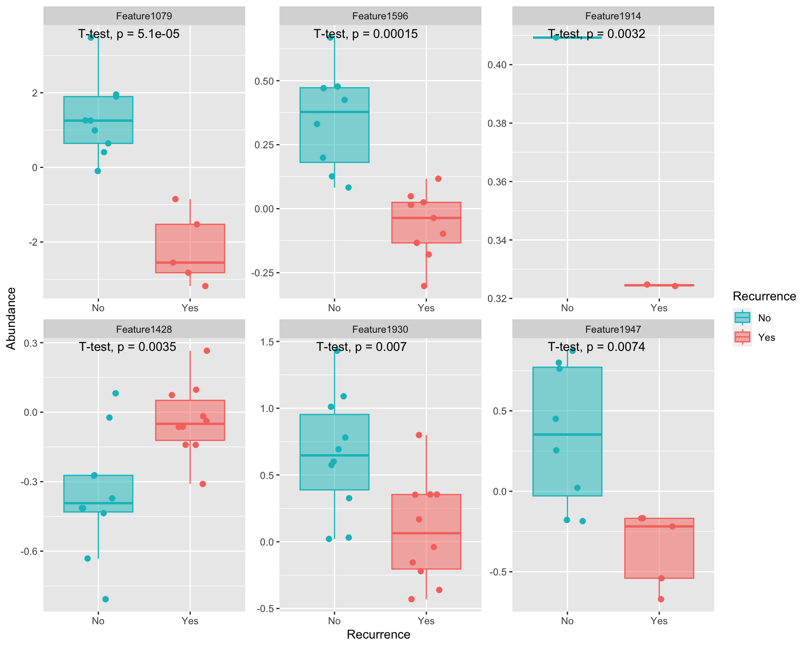
Display significant associations between PCs (Var1) and cancer recurrence (Var2)
# Display PCs that can significantly separate recurrence and non-recurrence
# patients
tPCASigRes Var1 Var2 pVal tStats pValAdj
1 PC18 Recurrence 0.001960819 -3.619377 0.03921638# Display proportion of total variance captured by all PCs explained by each PC
varExplained <- pcaRes$sdev^2 / sum(pcaRes$sdev^2)
PC <- paste0('PC', seq(length(varExplained)))
varTab <- data.frame(PC = factor(PC, levels = PC),
Var_explained = varExplained)
ggplot(varTab, aes(x=PC, y=Var_explained*100)) +
geom_col() +
labs(x = '', y = 'Variance explained (%)',
title = 'Differential plasma lipidomics')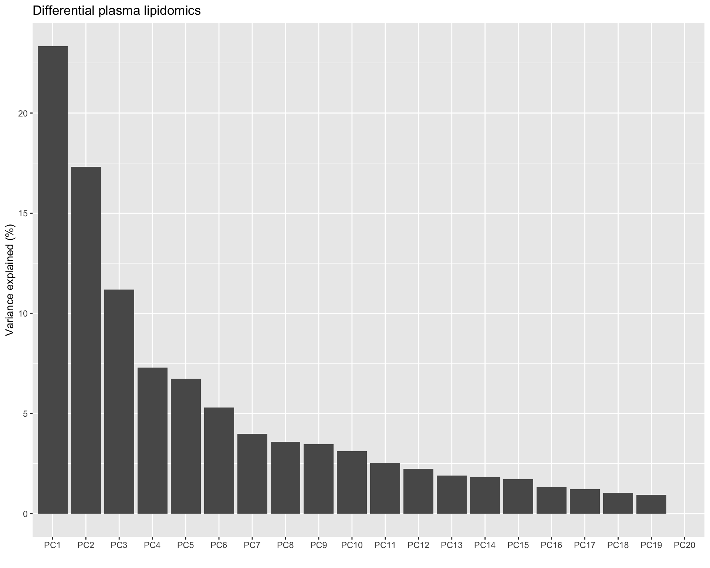
PC18 potentially separates recurrence and non-recurrence patients.
# Visualize PCs
ggplot(pcTab, aes(x=Recurrence, y=PC18, col=Recurrence, fill=Recurrence)) +
geom_boxplot(alpha = 0.5, outlier.shape = NA) +
geom_jitter(position = position_jitter(0.2), size = 2, show.legend = F) +
labs(title = 'Differential plasma lipidomics') +
scale_color_manual(values=c('#00BFC4', '#F8766D')) +
scale_fill_manual(values=c('#00BFC4', '#F8766D')) +
ggpubr::stat_compare_means(method = 't.test', paired = F, size = 5,
method.args = list(var.equal = T),
show.legend = F)
| Version | Author | Date |
|---|---|---|
| 0bbd8eb | LiaoQianWu | 2023-04-25 |
Plot molecular signatures captured by PC18 in input data. We took a look at top 20 features with highest loadings and observed lipid levels of these top features through heatmap. Note that features in heatmap are ordered by their loadings.
# Plot molecular signatures in input data
# Extract top features with highest loadings
topFeats <- pcTopFeatTab$PC18$Feature[1:20]
# Order features by loadings
topFeatsIdx <- sapply(topFeats, function(feat) {which(rownames(datMat) == feat)})
pheatmap::pheatmap(datMat[topFeatsIdx, smpOrder],
annotation_col = smpRecur,
color = colorRampPalette(c('navy', 'white', 'red'))(100),
cluster_rows = F, cluster_cols = F, scale = 'row',
main = 'Differential plasma lipidomics - PC18')
| Version | Author | Date |
|---|---|---|
| 0bbd8eb | LiaoQianWu | 2023-04-25 |
# Display top features with highest loadings of PC of interest
pcTopFeats <- dplyr::left_join(pcTopFeatTab$PC18, featInfo, by = 'Feature')
pcTopFeats Feature Loading m.z_RT
1 Feature1646 0.16941742 809.59/5.45
2 Feature1444 0.16059900 758.57/4.94
3 Feature1631 0.14990330 787.60/5.39
4 Feature714 0.13455497 667.62/8
5 Feature802 0.12119410 280.09/0.85
6 Feature1198 0.12079612 429.37/4.03
7 Feature721 0.12060566 725.70/8.1
8 Feature322 0.10507511 506.46/4.03
9 Feature1173 0.09819711 485.36/3.69
10 Feature321 0.09276352 1,064.60/4.03
11 Feature57 0.09267122 432.28/0.86
12 Feature676 0.09148978 960.88/7.87
13 Feature1552 0.09142531 828.61/5.18
14 Feature2301 0.09118880 876.80/7.92
15 Feature1152 0.08106191 338.34/3.33
16 Feature56 0.07976551 388.25/0.86
17 Feature2407 0.07853506 370.35/8.08
18 Feature58 0.07778289 476.31/0.87
19 Feature1642 0.07710678 813.62/5.4
20 Feature1034 0.07647967 436.86/1.06
21 Feature2023 0.07108942 650.64/6.83
22 Feature2278 0.07100058 369.35/7.94
23 Feature512 0.06886150 799.60/5.82
24 Feature2242 0.06859851 969.86/7.81
25 Feature340 0.06648421 802.53/4.22
26 Feature1730 0.06624935 634.54/5.59
27 Feature2017 0.06521222 647.46/6.73
28 Feature1446 0.06514270 717.56/4.92
29 Feature2274 0.06453266 902.82/7.92
30 Feature168 0.06440965 439.17/1.28# Store table in list for creating Excel file
sigFeatSheet <- append(sigFeatSheet, list(DiffPlasmaLipid_PC18 = pcTopFeats))Tissue Metabolomics
Based on PCA result obtained by analyzing whole Tissue Metabolomics dataset that includes Tumor and Normal samples, we found that PCA mainly captures source of variation in tissue conditions, which is not of direct interest. In addition, Recurrence-related significant PCs do not work that well, perhaps because Tumor and Normal samples are noise to each other. Therefore, we decided to analyze Tumor and Normal samples separately.
# Load normalized data
metaTissueVsn <- readRDS('./data/AG_Hopf/metaTissueVsn.rds')
# Retrieve feature information for making significant feature table
featInfo <- tibble::as_tibble(rowData(metaTissueVsn), rownames = 'Feature')
# Perform analysis
metaTissueRes <- SOA(metaTissueVsn, factor = c('Recurrence', 'Condition'))
tPCASigRes <- metaTissueRes$tPCASigRes
pcaRes <- metaTissueRes$pcaRes
pcTab <- metaTissueRes$pcTabDisplay associations between learned PCs (Var1) and factors (Var2). Basically t-test was performed to test significance of difference between two groups, e.g., recurrence and non-recurrence patient groups or tumor and normal sample groups.
# Display PCs of interest
tPCASigRes Var1 Var2 pVal tStats pValAdj
1 PC2 Condition 6.582841e-05 -4.482696 0.005266272
2 PC1 Condition 5.450411e-04 3.776318 0.021801644
3 PC9 Recurrence 1.148418e-02 2.656322 0.275600774
4 PC16 Recurrence 1.378004e-02 -2.582664 0.275600774
5 PC18 Recurrence 2.864424e-02 2.274846 0.458307875
6 PC4 Condition 4.617272e-02 2.061219 0.615636236PCA tends to capture variation in sample conditions (tumor and normal) and those PCs significantly associated with cancer recurrence do not perform that well.
ggplot(pcTab, aes(x=PC1, y=PC2, col=Condition, shape=Recurrence, group=Patient)) +
geom_point(size = 4) +
geom_line(col = 'grey50', linetype = 'dashed') +
theme(axis.title = element_text(size = 16),
legend.title = element_text(size = 14), legend.text = element_text(size = 12))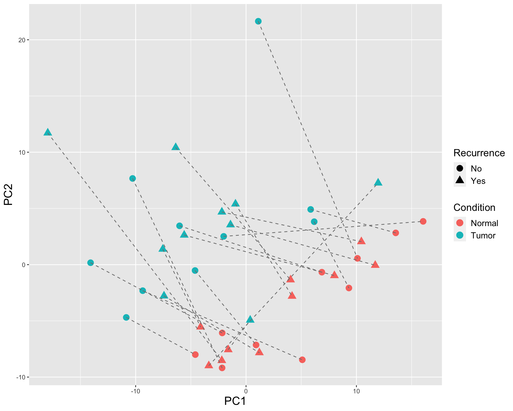
ggplot(pcTab, aes(x=Recurrence, y=PC9, col=Recurrence, fill=Recurrence)) +
geom_boxplot(alpha = 0.5, outlier.shape = NA) +
geom_jitter(position = position_jitter(0.2), size = 2, show.legend = F) +
scale_color_manual(values=c('#00BFC4', '#F8766D')) +
scale_fill_manual(values=c('#00BFC4', '#F8766D')) +
ggpubr::stat_compare_means(method = 't.test', paired = F, size = 6,
method.args = list(var.equal = T), hjust = 0.65,
show.legend = F) +
theme(axis.title = element_text(size = 16),
legend.title = element_text(size = 14), legend.text = element_text(size = 12))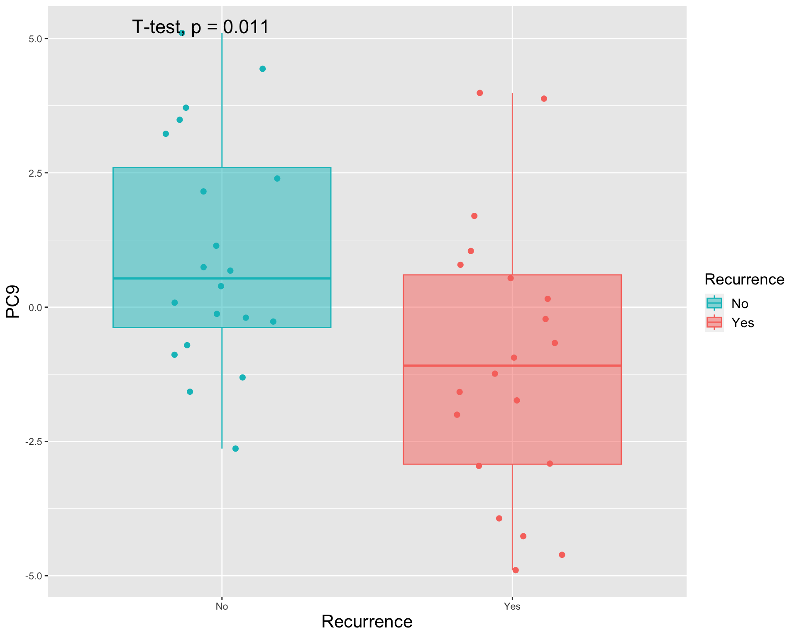
Display variance explained by each PC
# Display proportion of total variance captured by all PCs explained by each PC
varExplained <- pcaRes$sdev^2 / sum(pcaRes$sdev^2)
PC <- paste0('PC', seq(length(varExplained)))
varTab <- data.frame(PC = factor(PC, levels = PC),
Var_explained = varExplained)
ggplot(varTab, aes(x=PC, y=Var_explained*100)) +
geom_col() +
labs(x = '', y = 'Variance explained (%)') +
theme(axis.text.x = element_text(angle = 90, hjust = 1, vjust = 0.5))
| Version | Author | Date |
|---|---|---|
| 0bbd8eb | LiaoQianWu | 2023-04-25 |
Tumor samples
Display significant associations between features (Var1) and cancer recurrence (Var2) and observe molecular signatures in input data through heatmap. Note that features in heatmap are ordered by their t-statistics.
# Subset tumor samples
smpTumorIdx <- which(colData(metaTissueVsn)$Condition == 'Tumor')
metaTumor <- metaTissueVsn[, smpTumorIdx]
# Perform analysis
metaTumorRes <- SOA(metaTumor, factor = 'Recurrence', num_feats = 30)
datMat <- metaTumorRes$data
smpAnno <- metaTumorRes$smpMetadata
tFeatSigRes <- metaTumorRes$tFeatSigRes
tPCASigRes <- metaTumorRes$tPCASigRes
pcaRes <- metaTumorRes$pcaRes
pcTab <- metaTumorRes$pcTab
pcTopFeatTab <- metaTumorRes$pcTopFeatTab
# Display features that can significantly separate recurrence and non-recurrence
# patients
sigFeatTab <- dplyr::mutate(tFeatSigRes, MZ.RT = plyr::mapvalues(Var1,
from = featInfo$Feature,
to = featInfo$MZ.RT,
warn_missing = F))
sigFeatTab Var1 Var2 pVal tStats pValAdj MZ.RT
1 Feature668 Recurrence 0.0001223267 90.406485 0.1070358 703.57424/7.78
2 Feature328 Recurrence 0.0088435391 -3.120686 0.9986547 229.07946/0.5
3 Feature279 Recurrence 0.0148342589 2.806838 0.9986547 772.58438/8.12
4 Feature513 Recurrence 0.0177281317 2.609853 0.9986547 431.15648/5.51
5 Feature59 Recurrence 0.0182538365 2.769177 0.9986547 358.08891/3.3
6 Feature751 Recurrence 0.0224023054 -3.053804 0.9986547 396.31045/8.08
7 Feature547 Recurrence 0.0237916735 2.620870 0.9986547 179.06368/6.21
8 Feature289 Recurrence 0.0258358642 4.124843 0.9986547 420.30383/8.21
9 Feature843 Recurrence 0.0259189636 -2.427501 0.9986547 336.32587/8.32
10 Feature510 Recurrence 0.0297335163 -2.360552 0.9986547 86.09643/5.46
11 Feature797 Recurrence 0.0306667367 2.357136 0.9986547 783.57202/8.22
12 Feature623 Recurrence 0.0314330229 -2.358016 0.9986547 399.25021/7.6
13 Feature503 Recurrence 0.0321702408 -2.321864 0.9986547 267.11631/5.46
14 Feature707 Recurrence 0.0326671515 -2.370396 0.9986547 480.34417/7.93
15 Feature640 Recurrence 0.0328040739 -2.312248 0.9986547 665.33763/7.68
16 Feature711 Recurrence 0.0328275121 19.375681 0.9986547 706.5379/7.97
17 Feature823 Recurrence 0.0330469212 -2.514846 0.9986547 595.47704/8.25
18 Feature260 Recurrence 0.0334354615 -2.302839 0.9986547 226.15896/8
19 Feature483 Recurrence 0.0338552968 -2.296673 0.9986547 567.11486/5.1
20 Feature266 Recurrence 0.0344522380 -2.489465 0.9986547 428.37219/8.06
21 Feature860 Recurrence 0.0348244749 2.482915 0.9986547 179.06365/8.34
22 Feature526 Recurrence 0.0349324054 2.354490 0.9986547 219.09508/5.6
23 Feature325 Recurrence 0.0350916548 -2.289832 0.9986547 352.32111/8.47
24 Feature319 Recurrence 0.0372350072 3.071596 0.9986547 517.35643/8.43
25 Feature175 Recurrence 0.0404498454 2.208101 0.9986547 266.07793/5.56
26 Feature756 Recurrence 0.0429914676 -2.354437 0.9986547 503.36588/8.08
27 Feature479 Recurrence 0.0434944401 -2.171623 0.9986547 297.06441/5.09
28 Feature606 Recurrence 0.0454544788 4.528980 0.9986547 179.06366/7.45
29 Feature506 Recurrence 0.0467279265 -2.135359 0.9986547 132.10181/5.45
30 Feature747 Recurrence 0.0473144679 -2.129028 0.9986547 510.35485/8.05# Plot molecular signatures in input data
# Order features according to t-statistics
featOrder <- dplyr::arrange(tFeatSigRes, dplyr::desc(tStats))$Var1
# Arrange samples to make same groups in same clusters
smpOrder <- c(which(smpAnno$Recurrence == 'No'),
which(smpAnno$Recurrence == 'Yes'))
# Prepare recurrence table for annotating samples in heatmap
smpRecur <- dplyr::select(smpAnno, Sample, Recurrence) %>%
tibble::column_to_rownames('Sample')
pheatmap::pheatmap(datMat[featOrder, smpOrder],
annotation_col = smpRecur,
color = colorRampPalette(c('navy', 'white', 'red'))(100),
cluster_rows = F, cluster_cols = F, show_rownames = T,
scale = 'row', main = 'Tumor tissue metabolomics')
| Version | Author | Date |
|---|---|---|
| 0bbd8eb | LiaoQianWu | 2023-04-25 |
Use probabilistic dropout model to account for missing values and identify differentially abundant metabolites in Tumor tissue that are significantly associated with cancer recurrence. Note that features in heatmap are ordered by their t-statistics.
# Fit linear probabilistic dropout model to normalized data
fit <- proDA::proDA(datMat, design = ~ smpAnno$Recurrence)
# fit
# Check coefficient names for Parameter 'contrast' in proDA::test_diff()
# proDA::result_names(fit)
# Identify significant differentially abundant entities
all_proDAMetaTumorRes <- proDA::test_diff(fit,
contrast = Intercept + `smpAnno$RecurrenceYes` - Intercept,
sort_by = 'pval')
proDAMetaTumorRes <- dplyr::select(all_proDAMetaTumorRes,
-c(diff, se, df, avg_abundance, n_approx)) %>%
dplyr::filter(pval < 0.05) %>%
dplyr::mutate(MZ_RT = plyr::mapvalues(name,
from = featInfo$Feature,
to = featInfo$MZ.RT,
warn_missing = F))
proDAMetaTumorRes name pval adj_pval t_statistic n_obs MZ_RT
1 Feature547 0.008127581 0.9993269 -2.974255 13 179.06368/6.21
2 Feature328 0.023802713 0.9993269 2.468741 14 229.07946/0.5
3 Feature279 0.030030991 0.9993269 -2.355674 15 772.58438/8.12
4 Feature751 0.038817675 0.9993269 2.228708 8 396.31045/8.08
5 Feature843 0.040754660 0.9993269 2.204338 20 336.32587/8.32
6 Feature513 0.046344004 0.9993269 -2.139543 20 431.15648/5.51
7 Feature325 0.046666282 0.9993269 2.136029 19 352.32111/8.47# Plot molecular signatures in input data
# Order features according to t-statistics
featOrder <- dplyr::arrange(proDAMetaTumorRes, dplyr::desc(t_statistic))$name
a <- pheatmap::pheatmap(datMat[featOrder, smpOrder],
annotation_col = smpRecur,
color = colorRampPalette(c('navy', 'white', 'red'))(100),
cluster_rows = F, cluster_cols = F,
scale = 'row', main = 'Tumor tissue metabolomics (proDA)')
| Version | Author | Date |
|---|---|---|
| 0bbd8eb | LiaoQianWu | 2023-04-25 |
# ggsave(paste0(result_path, 'AG_Hopf/metaTumor_sigFeats.png'), plot = a, device = 'png', dpi = 400,
# height = 8, width = 10)
# Store table in list for creating Excel file
sigFeatSheet <- append(sigFeatSheet, list(TumorTissueMetab_Feats = proDAMetaTumorRes))ovl <- intersect(metaTumorRes$tFeatSigRes$Var1, proDAMetaTumorRes$name)
cat('The following features', paste0('(n =', length(ovl), ')'),
'are tested significant by both methods:\n', ovl)The following features (n =7) are tested significant by both methods:
Feature328 Feature279 Feature513 Feature751 Feature547 Feature843 Feature325Visualize data of top 6 significant features based on proDA result
# Visualize data of top 6 significant features
topSigFeats <- proDAMetaTumorRes$name[1:6]
topSigFeatData <- tibble::as_tibble(datMat[topSigFeats,], rownames = 'Feature') %>%
tidyr::pivot_longer(cols = -'Feature',
names_to = 'Sample', values_to = 'Abundance') %>%
dplyr::mutate(Feature = factor(Feature, levels = topSigFeats)) %>%
dplyr::left_join(smpAnno, by = 'Sample')
ggplot(topSigFeatData, aes(x=Recurrence, y=Abundance, col=Recurrence, fill=Recurrence)) +
geom_boxplot(alpha = 0.5, outlier.shape = NA) +
geom_jitter(position = position_jitter(0.2), size = 2, show.legend = F) +
scale_color_manual(values=c('#00BFC4', '#F8766D')) +
scale_fill_manual(values=c('#00BFC4', '#F8766D')) +
facet_wrap(vars(Feature), scales = 'free') +
ggpubr::stat_compare_means(method = 't.test', paired = F,
method.args = list(var.equal = T),
show.legend = F)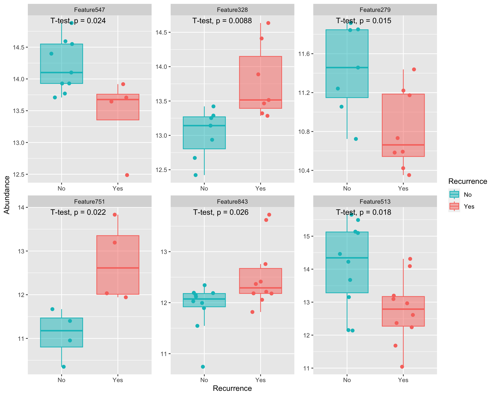
# ggsave(paste0(result_path, 'AG_Hopf/metaTumor_topSigFeats.png'), device = 'png', dpi = 400,
# height = 8, width = 10)Display significant associations between PCs (Var1) and cancer recurrence (Var2)
# Display PCs that can significantly separate recurrence and non-recurrence
# patients
tPCASigRes Var1 Var2 pVal tStats pValAdj
1 PC5 Recurrence 0.02112346 2.526208 0.4224691# Display proportion of total variance captured by all PCs explained by each PC
varExplained <- pcaRes$sdev^2 / sum(pcaRes$sdev^2)
PC <- paste0('PC', seq(length(varExplained)))
varTab <- data.frame(PC = factor(PC, levels = PC),
Var_explained = varExplained)
ggplot(varTab, aes(x=PC, y=Var_explained*100)) +
geom_col() +
labs(x = '', y = 'Variance explained (%)',
title = 'Tumor tissue metabolomics')
| Version | Author | Date |
|---|---|---|
| 0bbd8eb | LiaoQianWu | 2023-04-25 |
PC5 potentially separates recurrence and non-recurrence patients.
# Visualize PCs
ggplot(pcTab, aes(x=Recurrence, y=PC5, col=Recurrence, fill=Recurrence)) +
geom_boxplot(alpha = 0.5, outlier.shape = NA) +
geom_jitter(position = position_jitter(0.2), size = 2, show.legend = F) +
# labs(title = 'Tumor tissue metabolomics') +
scale_color_manual(values=c('#00BFC4', '#F8766D')) +
scale_fill_manual(values=c('#00BFC4', '#F8766D')) +
ggpubr::stat_compare_means(method = 't.test', paired = F, size = 6,
method.args = list(var.equal = T), hjust = 0.65,
show.legend = F) +
theme(axis.title = element_text(size = 16),
legend.title = element_text(size = 14), legend.text = element_text(size = 12))
| Version | Author | Date |
|---|---|---|
| 0bbd8eb | LiaoQianWu | 2023-04-25 |
# ggsave(paste0(result_path, 'AG_Hopf/metaTumor_pca.png'), device = 'png', dpi = 400,
# height = 8, width = 10)Plot molecular signatures captured by PC5 in input data. We took a look at top 20 features with highest loadings and observed metabolite levels of these top features through heatmap. Note that features in heatmap are ordered by their loadings. There is no single feature that can decently hint if patients will suffer cancer recurrence or not, which means each of these top features contributes a bit to explaining variation between recurrence and non-recurrence patients.
# Plot molecular signatures in input data
# Extract top features with highest loadings
topFeats <- pcTopFeatTab$PC5$Feature[1:20]
# Order features by loadings
topFeatsIdx <- sapply(topFeats, function(feat) {which(rownames(datMat) == feat)})
pheatmap::pheatmap(datMat[topFeatsIdx, smpOrder],
annotation_col = smpRecur,
color = colorRampPalette(c('navy', 'white', 'red'))(100),
cluster_rows = F, cluster_cols = F,
scale = 'row', main = 'Tumor tissue metabolomics - PC5')
| Version | Author | Date |
|---|---|---|
| 0bbd8eb | LiaoQianWu | 2023-04-25 |
Display top features that build the PC5
# Display top features with highest loadings of PC of interest
pcTopFeats <- dplyr::left_join(pcTopFeatTab$PC5, featInfo, by = 'Feature')
pcTopFeats Feature Loading MZ.RT
1 Feature413 0.23192815 367.01034/3.55
2 Feature403 0.20857478 562.10893/3.45
3 Feature156 0.20410738 608.26518/5.26
4 Feature3 0.18752224 348.07031/0.93
5 Feature88 0.18492471 235.18046/3.64
6 Feature333 0.17065234 184.07332/0.85
7 Feature86 0.17040574 86.09648/3.63
8 Feature175 0.14544245 266.07793/5.56
9 Feature520 0.14417126 359.13558/5.56
10 Feature365 0.13987040 179.06368/2.94
11 Feature369 0.13691393 277.04058/2.99
12 Feature207 0.12767802 207.14914/5.99
13 Feature205 0.12392495 221.07426/5.98
14 Feature118 0.12236594 227.11789/4.15
15 Feature206 0.11928362 364.14509/5.99
16 Feature747 0.11519423 510.35485/8.05
17 Feature130 0.11303532 416.19328/4.42
18 Feature47 0.11133034 411.16936/3.21
19 Feature211 0.10956191 205.04296/6.17
20 Feature846 0.10450471 433.28789/8.37
21 Feature226 0.09797446 743.27934/6.63
22 Feature361 0.09751180 257.96534/2.66
23 Feature690 0.09468588 510.3548/7.86
24 Feature102 0.09352994 304.21168/3.89
25 Feature108 0.09340096 257.96538/3.96
26 Feature26 0.09241254 311.06948/3.05
27 Feature392 0.08906425 154.04321/3.18
28 Feature372 0.08859636 179.06367/2.99
29 Feature168 0.08801217 374.0447/5.36
30 Feature513 0.08720543 431.15648/5.51# Store table in list for creating Excel file
sigFeatSheet <- append(sigFeatSheet, list(TumorTissueMetab_PC5 = pcTopFeats))Normal samples
Display significant associations between features (Var1) and cancer recurrence (Var2) and observe molecular signatures in input data through heatmap. Note that features in heatmap are ordered by their t-statistics.
# Subset normal samples
smpNormalIdx <- which(colData(metaTissueVsn)$Condition == 'Normal')
metaNormal <- metaTissueVsn[, smpNormalIdx]
# Perform analysis
metaNormalRes <- SOA(metaNormal, factor = 'Recurrence', num_feats = 30)
datMat <- metaNormalRes$data
smpAnno <- metaNormalRes$smpMetadata
tFeatSigRes <- metaNormalRes$tFeatSigRes
tPCASigRes <- metaNormalRes$tPCASigRes
pcaRes <- metaNormalRes$pcaRes
pcTab <- metaNormalRes$pcTab
pcTopFeatTab <- metaNormalRes$pcTopFeatTab
# Display features that can significantly separate recurrence and non-recurrence
# patients
sigFeatTab <- dplyr::mutate(tFeatSigRes, MZ.RT = plyr::mapvalues(Var1,
from = featInfo$Feature,
to = featInfo$MZ.RT,
warn_missing = F))
sigFeatTab Var1 Var2 pVal tStats pValAdj MZ.RT
1 Feature196 Recurrence 0.003095949 3.413724 0.986422 343.29532/5.75
2 Feature82 Recurrence 0.004263774 -3.268929 0.986422 381.19522/3.56
3 Feature806 Recurrence 0.005940787 -4.581235 0.986422 180.06677/8.23
4 Feature328 Recurrence 0.018687928 2.756034 0.986422 229.07946/0.5
5 Feature726 Recurrence 0.021793818 2.713725 0.986422 806.56841/7.99
6 Feature347 Recurrence 0.024647094 2.693690 0.986422 137.04573/1.29
7 Feature339 Recurrence 0.027442034 -2.399731 0.986422 248.14933/0.98
8 Feature674 Recurrence 0.029024982 -2.593946 0.986422 766.57371/7.8
9 Feature333 Recurrence 0.036238446 2.262960 0.986422 184.07332/0.85
10 Feature730 Recurrence 0.038998762 2.226383 0.986422 761.58733/8
11 Feature631 Recurrence 0.039460493 2.270969 0.986422 703.57406/7.63
12 Feature44 Recurrence 0.041792376 -2.225683 0.986422 265.10044/3.19
13 Feature513 Recurrence 0.044191496 2.163602 0.986422 431.15648/5.51
14 Feature613 Recurrence 0.045187710 2.184783 0.986422 639.32151/7.49
15 Feature155 Recurrence 0.047976652 2.121965 0.986422 246.2428/5.23
16 Feature807 Recurrence 0.048492147 -2.325620 0.986422 615.3217/8.23# Plot molecular signatures in input data
# Order features according to t-statistics
featOrder <- dplyr::arrange(tFeatSigRes, dplyr::desc(tStats))$Var1
# Arrange samples to make same groups in same clusters
smpOrder <- c(which(smpAnno$Recurrence == 'No'),
which(smpAnno$Recurrence == 'Yes'))
# Prepare recurrence table for annotating samples in heatmap
smpRecur <- dplyr::select(smpAnno, Sample, Recurrence) %>%
tibble::column_to_rownames('Sample')
pheatmap::pheatmap(datMat[featOrder, smpOrder],
annotation_col = smpRecur,
color = colorRampPalette(c('navy', 'white', 'red'))(100),
cluster_rows = F, cluster_cols = F, show_rownames = T,
scale = 'row', main = 'Normal tissue metabolomics')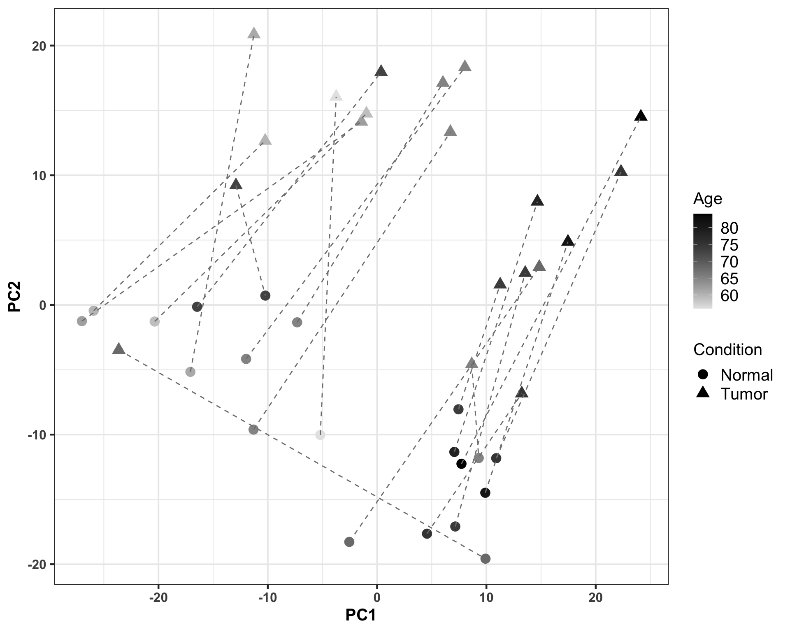
Use probabilistic dropout model to account for missing values and identify differentially abundant metabolites in Normal tissue that are significantly associated with cancer recurrence. Note that features in heatmap are ordered by their t-statistics.
# Fit linear probabilistic dropout model to normalized data
fit <- proDA::proDA(datMat, design = ~ smpAnno$Recurrence)
# fit
# Check coefficient names for Parameter 'contrast' in proDA::test_diff()
# proDA::result_names(fit)
# Identify significant differentially abundant entities
all_proDAMetaNormalRes <- proDA::test_diff(fit,
contrast = Intercept + `smpAnno$RecurrenceYes` - Intercept,
sort_by = 'pval')
proDAMetaNormalRes <- dplyr::select(all_proDAMetaNormalRes,
-c(diff, se, df, avg_abundance, n_approx)) %>%
dplyr::filter(pval < 0.05) %>%
dplyr::mutate(MZ_RT = plyr::mapvalues(name,
from = featInfo$Feature,
to = featInfo$MZ.RT,
warn_missing = F))
proDAMetaNormalRes name pval adj_pval t_statistic n_obs MZ_RT
1 Feature806 0.001228724 0.9998768 3.829218 7 180.06677/8.23
2 Feature196 0.005178752 0.9998768 -3.180587 20 343.29532/5.75
3 Feature82 0.008901309 0.9998768 2.932309 20 381.19522/3.56
4 Feature726 0.018953880 0.9998768 -2.578031 12 806.56841/7.99
5 Feature674 0.021296915 0.9998768 2.522285 11 766.57371/7.8
6 Feature328 0.027085799 0.9998768 -2.406094 13 229.07946/0.5
7 Feature339 0.037831058 0.9998768 2.241555 20 248.14933/0.98
8 Feature333 0.048067871 0.9998768 -2.120999 20 184.07332/0.85# Plot molecular signatures in input data
# Order features according to t-statistics
featOrder <- dplyr::arrange(proDAMetaNormalRes, dplyr::desc(t_statistic))$name
a <- pheatmap::pheatmap(datMat[featOrder, smpOrder],
annotation_col = smpRecur,
color = colorRampPalette(c('navy', 'white', 'red'))(100),
cluster_rows = F, cluster_cols = F,
scale = 'row', main = 'Normal tissue metabolomics (proDA)')
| Version | Author | Date |
|---|---|---|
| 0bbd8eb | LiaoQianWu | 2023-04-25 |
# ggsave(paste0(result_path, 'AG_Hopf/metaNormal_sigFeats.png'), plot = a, device = 'png', dpi = 400,
# height = 8, width = 10)
# Store table in list for creating Excel file
sigFeatSheet <- append(sigFeatSheet, list(NormalTissueMetab_Feats = proDAMetaNormalRes))ovl <- intersect(metaNormalRes$tFeatSigRes$Var1, proDAMetaNormalRes$name)
cat('The following features', paste0('(n =', length(ovl), ')'),
'are tested significant by both methods:\n', ovl)The following features (n =8) are tested significant by both methods:
Feature196 Feature82 Feature806 Feature328 Feature726 Feature339 Feature674 Feature333Visualize data of top 6 significant features based on proDA result
# Visualize data of top 6 significant features
topSigFeats <- proDAMetaNormalRes$name[2:7]
topSigFeatData <- tibble::as_tibble(datMat[topSigFeats,], rownames = 'Feature') %>%
tidyr::pivot_longer(cols = -'Feature',
names_to = 'Sample', values_to = 'Abundance') %>%
dplyr::mutate(Feature = factor(Feature, levels = topSigFeats)) %>%
dplyr::left_join(smpAnno, by = 'Sample')
ggplot(topSigFeatData, aes(x=Recurrence, y=Abundance, col=Recurrence, fill=Recurrence)) +
geom_boxplot(alpha = 0.5, outlier.shape = NA) +
geom_jitter(position = position_jitter(0.2), size = 2, show.legend = F) +
scale_color_manual(values=c('#00BFC4', '#F8766D')) +
scale_fill_manual(values=c('#00BFC4', '#F8766D')) +
facet_wrap(vars(Feature), scales = 'free') +
ggpubr::stat_compare_means(method = 't.test', paired = F,
method.args = list(var.equal = T),
show.legend = F)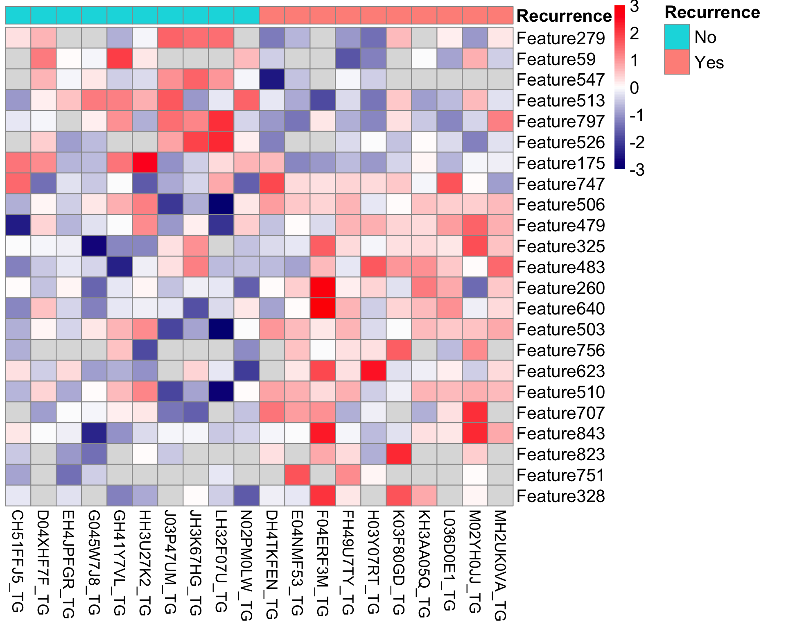
# ggsave(paste0(result_path, 'AG_Hopf/metaNormal_topSigFeats.png'), device = 'png', dpi = 400,
# height = 8, width = 10)There is no significant association between PCs (Var1) and cancer recurrence (Var2).
# Display PCs that can significantly separate recurrence and non-recurrence
# patients
tPCASigRes[1] Var1 Var2 pVal tStats pValAdj
<0 rows> (or 0-length row.names)Difference in tissue conditions
Differences between Tumor and Normal samples (Tumor matrix - Normal
matrix):
Display significant associations between features (Var1) and cancer recurrence (Var2) and observe molecular signatures in input data through heatmap. Note that features in heatmap are ordered by their t-statistics.
# Subset tumor samples
smpTumorIdx <- which(colData(metaTissueVsn)$Condition == 'Tumor')
metaTumor <- metaTissueVsn[, smpTumorIdx]
# Subset normal samples
smpNormalIdx <- which(colData(metaTissueVsn)$Condition == 'Normal')
metaNormal <- metaTissueVsn[, smpNormalIdx]
# Modify column names for matching two matrices
colnames(metaTumor) <- stringr::str_remove(colnames(metaTumor), '_TG')
colnames(metaNormal) <- stringr::str_remove(colnames(metaNormal), '_NG')
# Retrieve data matrix
metaTumorMat <- SummarizedExperiment::assay(metaTumor)
metaNormalMat <- SummarizedExperiment::assay(metaNormal)
# Subtract tumor matrix by normal matrix
if (identical(colnames(metaTumorMat), colnames(metaNormalMat)) &
identical(rownames(metaTumorMat), rownames(metaNormalMat))) {
metaTissueDiffMat <- metaTumorMat - metaNormalMat
} else {
print('Align samples or features first.')
}
# Retrieve samples metadata for creating SE object
colAnno <- dplyr::select(as.data.frame(colData(metaTumor)), Patient, Recurrence)
metaTissueDiff <- SummarizedExperiment(assays = metaTissueDiffMat, colData = colAnno)
# Perform analysis
metaTissueDiffRes <- SOA(metaTissueDiff, factor = 'Recurrence', num_feats = 30)
datMat <- metaTissueDiffRes$data
smpAnno <- metaTissueDiffRes$smpMetadata
tFeatSigRes <- metaTissueDiffRes$tFeatSigRes
tPCASigRes <- metaTissueDiffRes$tPCASigRes
pcaRes <- metaTissueDiffRes$pcaRes
pcTab <- metaTissueDiffRes$pcTab
pcTopFeatTab <- metaTissueDiffRes$pcTopFeatTab
# Display features that can significantly separate recurrence and non-recurrence
# patients
sigFeatTab <- dplyr::mutate(tFeatSigRes, MZ.RT = plyr::mapvalues(Var1,
from = featInfo$Feature,
to = featInfo$MZ.RT,
warn_missing = F))
sigFeatTab Var1 Var2 pVal tStats pValAdj MZ.RT
1 Feature806 Recurrence 0.007070787 5.082011 0.9406847 180.06677/8.23
2 Feature325 Recurrence 0.008923647 -2.951881 0.9406847 352.32111/8.47
3 Feature843 Recurrence 0.010171261 -2.870563 0.9406847 336.32587/8.32
4 Feature300 Recurrence 0.010457071 -4.545025 0.9406847 650.64343/8.27
5 Feature439 Recurrence 0.011312428 -3.908467 0.9406847 179.06371/3.93
6 Feature271 Recurrence 0.016194645 -2.687082 0.9406847 813.68355/8.07
7 Feature726 Recurrence 0.019473566 -3.163698 0.9406847 806.56841/7.99
8 Feature334 Recurrence 0.019487708 2.778891 0.9406847 296.06608/0.85
9 Feature339 Recurrence 0.020534748 2.539754 0.9406847 248.14933/0.98
10 Feature348 Recurrence 0.024164270 2.461457 0.9406847 248.1493/1.29
11 Feature19 Recurrence 0.025371123 2.437865 0.9406847 232.15432/2.84
12 Feature3 Recurrence 0.025651207 2.460052 0.9406847 348.07031/0.93
13 Feature699 Recurrence 0.026390107 -6.033214 0.9406847 207.12408/7.9
14 Feature12 Recurrence 0.027519506 2.410779 0.9406847 218.13871/1.75
15 Feature377 Recurrence 0.029562508 2.363377 0.9406847 94.06516/3.08
16 Feature328 Recurrence 0.030000846 -2.633796 0.9406847 229.07946/0.5
17 Feature613 Recurrence 0.030425142 -2.428346 0.9406847 639.32151/7.49
18 Feature307 Recurrence 0.034578184 2.297223 0.9406847 557.41224/8.32
19 Feature175 Recurrence 0.034807311 2.282950 0.9406847 266.07793/5.56
20 Feature313 Recurrence 0.039659290 -2.217985 0.9406847 280.26349/8.37
21 Feature859 Recurrence 0.040342368 -2.354319 0.9406847 736.57523/8.38
22 Feature44 Recurrence 0.047942160 2.183325 0.9406847 265.10044/3.19
23 Feature291 Recurrence 0.048683309 -2.174953 0.9406847 628.95362/8.21# Plot molecular signatures in input data
# Order features according to t-statistics
featOrder <- dplyr::arrange(tFeatSigRes, dplyr::desc(tStats))$Var1
# Arrange samples to make same groups in same clusters
smpOrder <- c(which(smpAnno$Recurrence == 'No'),
which(smpAnno$Recurrence == 'Yes'))
# Prepare recurrence table for annotating samples in heatmap
smpRecur <- dplyr::select(smpAnno, Sample, Recurrence) %>%
tibble::column_to_rownames('Sample')
pheatmap::pheatmap(datMat[featOrder, smpOrder],
annotation_col = smpRecur,
color = colorRampPalette(c('navy', 'white', 'red'))(100),
cluster_rows = F, cluster_cols = F, show_rownames = T,
scale = 'row', main = 'Differential tissue metabolomics')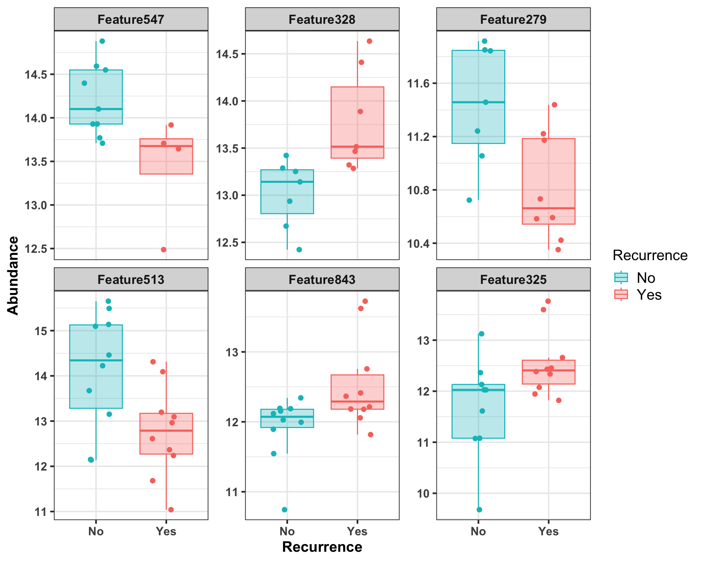
Use probabilistic dropout model to account for missing values and identify differentially abundant metabolite difference between Tumor and Normal tissues that are significantly associated with cancer recurrence. Note that there is no differentially abundant metabolite.
# Fit linear probabilistic dropout model to normalized data
fit <- proDA::proDA(datMat, design = ~ smpAnno$Recurrence)
# fit
# Check coefficient names for Parameter 'contrast' in proDA::test_diff()
# proDA::result_names(fit)
# Identify significant differentially abundant entities
proDAMetaTissueDiffRes <- proDA::test_diff(fit,
contrast = Intercept + `smpAnno$RecurrenceYes` - Intercept,
sort_by = 'pval', n_max = 30) %>%
dplyr::select(-c(diff, se, df, avg_abundance, n_approx)) %>%
dplyr::mutate(MZ_RT = plyr::mapvalues(name,
from = featInfo$Feature,
to = featInfo$MZ.RT,
warn_missing = F))
proDAMetaTissueDiffRes name pval adj_pval t_statistic n_obs MZ_RT
827 Feature843 0.1850629 0.9998131 1.3781024 20 336.32587/8.32
309 Feature377 0.2170027 0.9998131 -1.2794008 20 94.06516/3.08
192 Feature271 0.2233906 0.9998131 1.2610514 18 813.68355/8.07
252 Feature325 0.2471231 0.9998131 1.1962400 19 352.32111/8.47
367 Feature429 0.2568368 0.9998131 -1.1710797 20 283.07485/3.89
3 Feature100 0.2652681 0.9998131 -1.1498158 20 76.03933/3.88
373 Feature434 0.2748114 0.9998131 -1.1263481 20 136.02147/3.88
370 Feature431 0.2825487 0.9998131 -1.1077611 20 148.06033/3.89
572 Feature613 0.2853336 0.9998131 1.1011628 15 639.32151/7.49
181 Feature261 0.2949515 0.9998131 1.0787315 14 689.55848/8.02
305 Feature373 0.3031262 0.9998131 -1.0600804 20 261.0364/3.09
155 Feature238 0.3062201 0.9998131 1.0531164 20 235.16928/7.4
246 Feature32 0.3130647 0.9998131 -1.0378876 20 136.02146/3.08
427 Feature483 0.3194811 0.9998131 1.0238259 20 567.11486/5.1
95 Feature184 0.3267916 0.9998131 1.0080469 20 739.14202/5.62
232 Feature307 0.3270705 0.9998131 -1.0074499 19 557.41224/8.32
239 Feature313 0.3339206 0.9998131 0.9928978 20 280.26349/8.37
24 Feature12 0.3349175 0.9998131 -0.9907973 19 218.13871/1.75
9 Feature106 0.3355501 0.9998131 -0.9894668 20 134.04474/3.91
214 Feature291 0.3481379 0.9998131 0.9633470 15 628.95362/8.21
306 Feature374 0.3562962 0.9998131 -0.9467651 20 126.02183/3.09
231 Feature306 0.3705101 0.9998131 0.9184838 19 256.26354/8.31
673 Feature704 0.3706687 0.9998131 0.9181725 17 355.28376/7.92
377 Feature438 0.3763750 0.9998131 -0.9070281 20 269.05902/3.91
379 Feature44 0.3765312 0.9998131 -0.9067246 15 265.10044/3.19
499 Feature548 0.3989933 0.9998131 0.8639292 20 376.25923/6.29
741 Feature766 0.3995697 0.9998131 0.8628521 18 809.5877/8.08
138 Feature222 0.4085946 0.9998131 0.8461187 20 393.2857/6.29
544 Feature589 0.4155895 0.9998131 0.8333128 20 496.33922/7.3
605 Feature643 0.4159313 0.9998131 0.8326907 17 355.28409/7.67# Store table in list for creating Excel file
# sigFeatSheet <- append(sigFeatSheet, list(DiffTissueMetab_Feats = proDAMetaTissueDiffRes))We took top 30 differentially abundant features from proDA() to see overlaps
ovl <- intersect(metaTissueDiffRes$tFeatSigRes$Var1, proDAMetaTissueDiffRes$name)
cat('The following features', paste0('(n =', length(ovl), ')'),
'are overlapped between two methods:\n', ovl)The following features (n =10) are overlapped between two methods:
Feature325 Feature843 Feature271 Feature12 Feature377 Feature613 Feature307 Feature313 Feature44 Feature291# Filter univariate result for making summarized plot
proDAMetaTissueDiffRes <- dplyr::filter(proDAMetaTissueDiffRes, pval < 0.05)Visualize data of top 6 significant features based on regular t-test result
# Visualize data of top 6 significant features
topSigFeats <- tFeatSigRes$Var1[1:6]
topSigFeatData <- tibble::as_tibble(datMat[topSigFeats,], rownames = 'Feature') %>%
tidyr::pivot_longer(cols = -'Feature',
names_to = 'Sample', values_to = 'Abundance') %>%
dplyr::mutate(Feature = factor(Feature, levels = topSigFeats)) %>%
dplyr::left_join(smpAnno, by = 'Sample')
ggplot(topSigFeatData, aes(x=Recurrence, y=Abundance, col=Recurrence, fill=Recurrence)) +
geom_boxplot(alpha = 0.5, outlier.shape = NA) +
geom_jitter(position = position_jitter(0.2), size = 2, show.legend = F) +
scale_color_manual(values=c('#00BFC4', '#F8766D')) +
scale_fill_manual(values=c('#00BFC4', '#F8766D')) +
facet_wrap(vars(Feature), scales = 'free') +
ggpubr::stat_compare_means(method = 't.test', paired = F,
method.args = list(var.equal = T),
show.legend = F)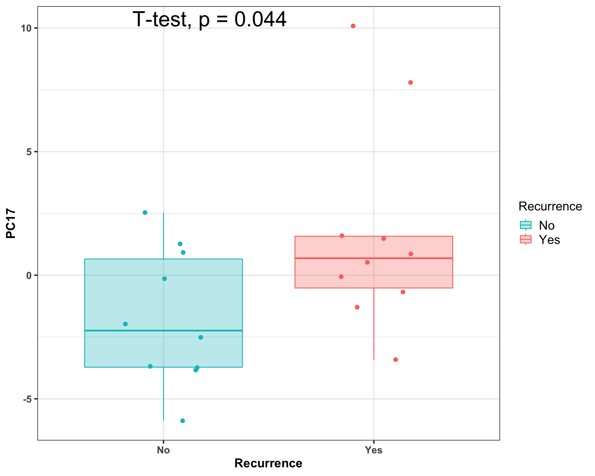
There is no significant association between PCs (Var1) and cancer recurrence (Var2).
# Display PCs that can significantly separate recurrence and non-recurrence
# patients
tPCASigRes Var1 Var2 pVal tStats pValAdj
1 PC20 Recurrence 0.04700627 2.132346 0.5594877# Display proportion of total variance captured by all PCs explained by each PC
varExplained <- pcaRes$sdev^2 / sum(pcaRes$sdev^2)
PC <- paste0('PC', seq(length(varExplained)))
varTab <- data.frame(PC = factor(PC, levels = PC),
Var_explained = varExplained)
ggplot(varTab, aes(x=PC, y=Var_explained*100)) +
geom_col() +
labs(x = '', y = 'Variance explained (%)',
title = 'Differential tissue metabolomics')
| Version | Author | Date |
|---|---|---|
| 0bbd8eb | LiaoQianWu | 2023-04-25 |
Tissue Lipidomics
As described in Tissue Metabolomics section, we analyzed Tumor and Normal samples separately.
# Load normalized data
lipTissueVsn <- readRDS('./data/AG_Hopf/lipTissueVsn.rds')
# Retrieve feature information for making significant feature table
featInfo <- tibble::as_tibble(rowData(lipTissueVsn), rownames = 'Feature')
# Perform analysis
lipTissueRes <- SOA(lipTissueVsn, factor = c('Recurrence', 'Condition'))
tPCASigRes <- lipTissueRes$tPCASigRes
pcaRes <- lipTissueRes$pcaRes
pcTab <- lipTissueRes$pcTabDisplay associations between learned PCs (Var1) and factors (Var2). Basically t-test was performed to test significance of difference between two groups, e.g., recurrence and non-recurrence patient groups or tumor and normal sample groups.
# Display PCs of interest
tPCASigRes Var1 Var2 pVal tStats pValAdj
1 PC1 Condition 1.291621e-09 -7.958538 1.033297e-07
2 PC24 Recurrence 1.964879e-02 2.436012 5.558116e-01
3 PC2 Condition 2.985886e-02 -2.256712 5.558116e-01
4 PC11 Recurrence 3.007387e-02 2.253571 5.558116e-01
5 PC10 Recurrence 3.473822e-02 2.189930 5.558116e-01PCA tends to capture variation in sample conditions (tumor and normal) and those PCs significantly associated with cancer recurrence do not perform that well.
ggplot(pcTab, aes(x=PC1, y=PC2, col=Condition, shape=Recurrence, group=Patient)) +
geom_point(size = 4) +
geom_line(col = 'grey50', linetype = 'dashed') +
theme(axis.title = element_text(size = 16),
legend.title = element_text(size = 14), legend.text = element_text(size = 12))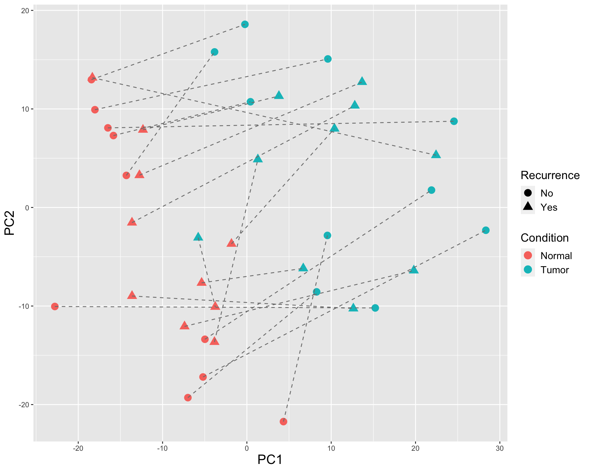
ggplot(pcTab, aes(x=Recurrence, y=PC24, col=Recurrence, fill=Recurrence)) +
geom_boxplot(alpha = 0.5, outlier.shape = NA) +
geom_jitter(position = position_jitter(0.2), size = 2, show.legend = F) +
scale_color_manual(values=c('#00BFC4', '#F8766D')) +
scale_fill_manual(values=c('#00BFC4', '#F8766D')) +
ggpubr::stat_compare_means(method = 't.test', paired = F, size = 6,
method.args = list(var.equal = T), hjust = 0.65,
show.legend = F) +
theme(axis.title = element_text(size = 16),
legend.title = element_text(size = 14), legend.text = element_text(size = 12))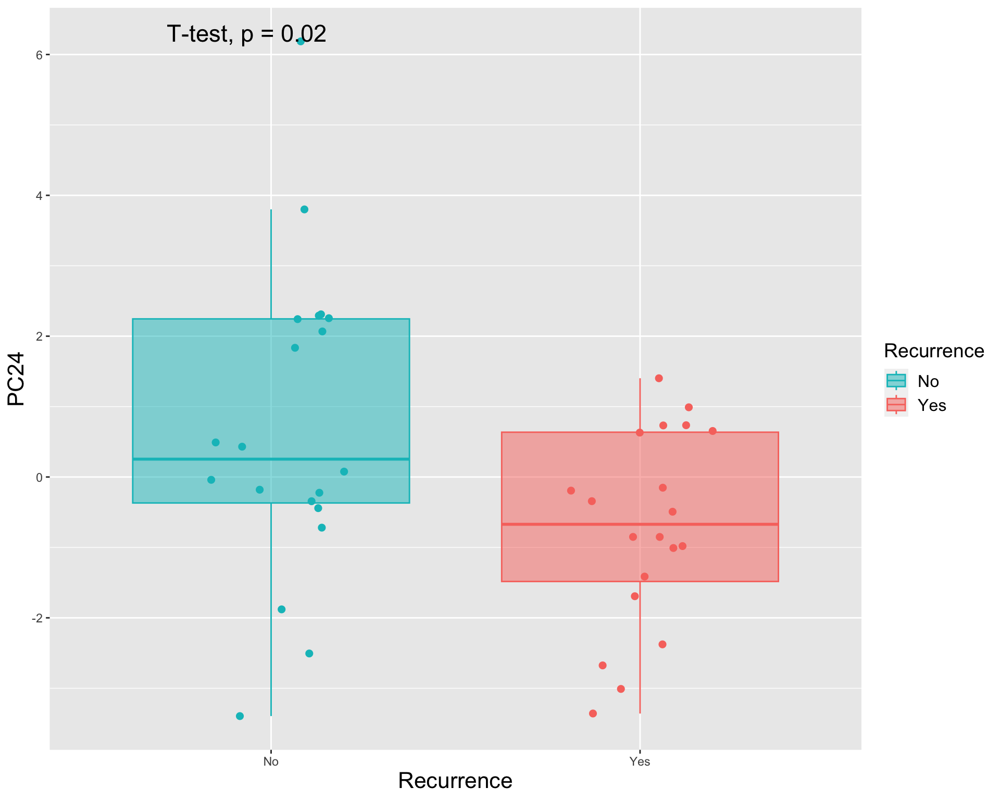
Display variance explained by each PC
# Display proportion of total variance captured by all PCs explained by each PC
varExplained <- pcaRes$sdev^2 / sum(pcaRes$sdev^2)
PC <- paste0('PC', seq(length(varExplained)))
varTab <- data.frame(PC = factor(PC, levels = PC),
Var_explained = varExplained)
ggplot(varTab, aes(x=PC, y=Var_explained*100)) +
geom_col() +
labs(x = '', y = 'Variance explained (%)') +
theme(axis.text.x = element_text(angle = 90, hjust = 1, vjust = 0.5))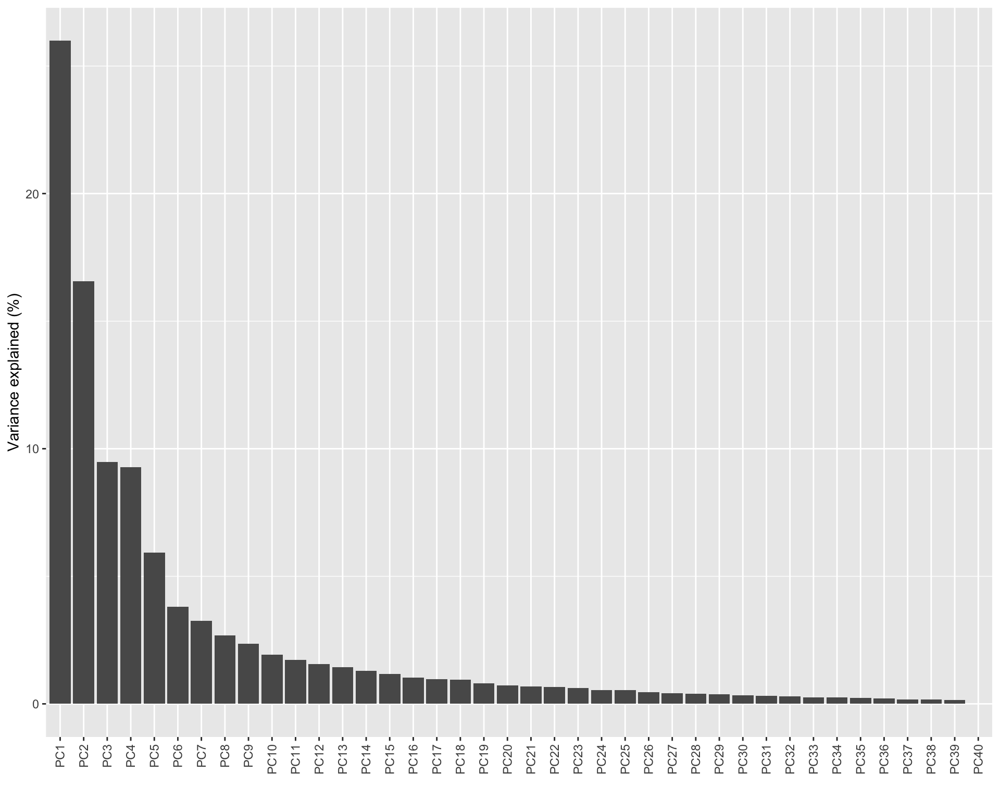
Tumor samples
Display significant associations between features (Var1) and cancer recurrence (Var2) and observe molecular signatures in input data through heatmap. Note that features in heatmap are ordered by their t-statistics.
# Subset tumor samples
smpTumorIdx <- which(colData(lipTissueVsn)$Condition == 'Tumor')
lipTumor <- lipTissueVsn[, smpTumorIdx]
# Perform analysis
lipTumorRes <- SOA(lipTumor, factor = 'Recurrence', num_feats = 30)
datMat <- lipTumorRes$data
smpAnno <- lipTumorRes$smpMetadata
tFeatSigRes <- lipTumorRes$tFeatSigRes
tPCASigRes <- lipTumorRes$tPCASigRes
pcaRes <- lipTumorRes$pcaRes
pcTab <- lipTumorRes$pcTab
pcTopFeatTab <- lipTumorRes$pcTopFeatTab
# Display features that can significantly separate recurrence and non-recurrence
# patients
sigFeatTab <- dplyr::mutate(tFeatSigRes, MZ.RT = plyr::mapvalues(Var1,
from = featInfo$Feature,
to = featInfo$MZ.RT,
warn_missing = F))
sigFeatTab Var1 Var2 pVal tStats pValAdj MZ.RT
1 Feature630 Recurrence 0.0004078043 49.504107 0.8747402 666.61399/7.9
2 Feature1322 Recurrence 0.0091748504 -2.918320 0.9976225 786.6006/5.48
3 Feature50 Recurrence 0.0135195548 5.241373 0.9976225 285.28997/1.45
4 Feature1910 Recurrence 0.0149337343 3.088044 0.9976225 903.5673/4.92
5 Feature1659 Recurrence 0.0154032613 -2.733018 0.9976225 836.66076/6.51
6 Feature1133 Recurrence 0.0167840747 3.011152 0.9976225 760.58428/5.8
7 Feature1344 Recurrence 0.0167919102 -2.713936 0.9976225 790.5584/3.99
8 Feature1215 Recurrence 0.0177732799 -2.608644 0.9976225 771.568/5.52
9 Feature1072 Recurrence 0.0179034834 2.637956 0.9976225 750.54034/5.07
10 Feature1245 Recurrence 0.0193859780 -2.781941 0.9976225 775.54787/4.4
11 Feature1991 Recurrence 0.0202511820 2.546410 0.9976225 925.51918/4.56
12 Feature1917 Recurrence 0.0205841295 2.538604 0.9976225 904.59059/4.56
13 Feature1943 Recurrence 0.0216456543 2.528498 0.9976225 908.53688/4.06
14 Feature552 Recurrence 0.0227930516 -2.518836 0.9976225 641.30195/4.88
15 Feature1599 Recurrence 0.0248077705 -6.230267 0.9976225 826.60391/4.38
16 Feature1376 Recurrence 0.0270413465 2.700780 0.9976225 793.62708/2.72
17 Feature694 Recurrence 0.0274882261 -2.460397 0.9976225 683.31335/3.49
18 Feature246 Recurrence 0.0279126912 3.375060 0.9976225 464.43073/3.5
19 Feature318 Recurrence 0.0290926121 -2.852330 0.9976225 532.43835/5.6
20 Feature1849 Recurrence 0.0295150849 2.364163 0.9976225 881.51429/4.01
21 Feature8 Recurrence 0.0296007257 2.642446 0.9976225 221.17483/2.6
22 Feature1030 Recurrence 0.0307380065 -2.422892 0.9976225 744.55293/5.63
23 Feature1597 Recurrence 0.0334677480 -2.302362 0.9976225 826.5597/5.48
24 Feature592 Recurrence 0.0341589793 -2.292257 0.9976225 655.31756/5
25 Feature2150 Recurrence 0.0349135114 -2.281441 0.9976225 1195.81947/4.87
26 Feature2074 Recurrence 0.0351453894 3.131175 0.9976225 964.30016/5.74
27 Feature1773 Recurrence 0.0351540612 2.278038 0.9976225 859.53153/4.01
28 Feature526 Recurrence 0.0351858503 2.277590 0.9976225 630.78443/1.12
29 Feature973 Recurrence 0.0358275506 2.849909 0.9976225 737.54507/6.69
30 Feature1097 Recurrence 0.0358382003 5.139291 0.9976225 754.53489/4.77
31 Feature211 Recurrence 0.0371762945 2.495943 0.9976225 431.38426/2.61
32 Feature668 Recurrence 0.0387574762 -2.229484 0.9976225 679.37402/5.17
33 Feature1105 Recurrence 0.0395176192 -2.219775 0.9976225 756.42976/5.93
34 Feature947 Recurrence 0.0396522854 2.228266 0.9976225 733.55664/4.88
35 Feature1826 Recurrence 0.0434285531 2.172388 0.9976225 876.55903/4.01
36 Feature80 Recurrence 0.0444101300 4.585710 0.9976225 338.34124/6.24
37 Feature2009 Recurrence 0.0445767211 2.222942 0.9976225 934.81741/7.92
38 Feature1957 Recurrence 0.0450618137 2.163213 0.9976225 914.81594/7.76
39 Feature1159 Recurrence 0.0452122612 -2.172229 0.9976225 764.55929/5.54
40 Feature855 Recurrence 0.0490279988 -2.141827 0.9976225 716.5577/6.05
41 Feature169 Recurrence 0.0490415639 2.795390 0.9976225 382.3429/1.58# Plot molecular signatures in input data
# Order features according to t-statistics
featOrder <- dplyr::arrange(tFeatSigRes, dplyr::desc(tStats))$Var1
# Arrange samples to make same groups in same clusters
smpOrder <- c(which(smpAnno$Recurrence == 'No'),
which(smpAnno$Recurrence == 'Yes'))
# Prepare recurrence table for annotating samples in heatmap
smpRecur <- dplyr::select(smpAnno, Sample, Recurrence) %>%
tibble::column_to_rownames('Sample')
pheatmap::pheatmap(datMat[featOrder, smpOrder],
annotation_col = smpRecur,
color = colorRampPalette(c('navy', 'white', 'red'))(100),
cluster_rows = F, cluster_cols = F, show_rownames = T,
scale = 'row', main = 'Tumor tissue lipidomics')
| Version | Author | Date |
|---|---|---|
| 0bbd8eb | LiaoQianWu | 2023-04-25 |
Use probabilistic dropout model to account for missing values and identify differentially abundant lipids in Tumor tissue that are significantly associated with cancer recurrence. Note that features in heatmap are ordered by their t-statistics.
# Fit linear probabilistic dropout model to normalized data
fit <- proDA::proDA(datMat, design = ~ smpAnno$Recurrence)
# fit
# Check coefficient names for Parameter 'contrast' in proDA::test_diff()
# proDA::result_names(fit)
# Identify significant differentially abundant entities
all_proDALipTumorRes <- proDA::test_diff(fit,
contrast = Intercept + `smpAnno$RecurrenceYes` - Intercept,
sort_by = 'pval')
proDALipTumorRes <- dplyr::select(all_proDALipTumorRes,
-c(diff, se, df, avg_abundance, n_approx)) %>%
dplyr::filter(pval < 0.05) %>%
dplyr::mutate(MZ_RT = plyr::mapvalues(name,
from = featInfo$Feature,
to = featInfo$MZ.RT,
warn_missing = F))
proDALipTumorRes name pval adj_pval t_statistic n_obs MZ_RT
1 Feature50 0.0001971179 0.4255775 -4.654628 5 285.28997/1.45
2 Feature1322 0.0182875539 0.9997975 2.595079 20 786.6006/5.48
3 Feature1344 0.0189546141 0.9997975 2.578013 16 790.5584/3.99
4 Feature1659 0.0238248429 0.9997975 2.468292 17 836.66076/6.51
5 Feature1030 0.0255127877 0.9997975 2.435165 15 744.55293/5.63
6 Feature1910 0.0263419218 0.9997975 -2.419639 10 903.5673/4.92
7 Feature8 0.0265948411 0.9997975 -2.414994 10 221.17483/2.6
8 Feature1215 0.0299298731 0.9997975 2.357327 20 771.568/5.52
9 Feature1917 0.0329732250 0.9997975 -2.309711 20 904.59059/4.56
10 Feature2074 0.0337486689 0.9997975 -2.298232 6 964.30016/5.74
11 Feature1991 0.0361864875 0.9997975 -2.263673 20 925.51918/4.56
12 Feature694 0.0371520523 0.9997975 2.250578 16 683.31335/3.49
13 Feature1849 0.0376658398 0.9997975 -2.243737 20 881.51429/4.01
14 Feature160 0.0385701307 0.9997975 -2.231903 4 378.29374/1.6
15 Feature1072 0.0389466978 0.9997975 -2.227051 18 750.54034/5.07
16 Feature211 0.0390732313 0.9997975 -2.225430 10 431.38426/2.61
17 Feature552 0.0403730132 0.9997975 2.209054 18 641.30195/4.88
18 Feature1245 0.0427791238 0.9997975 2.179978 12 775.54787/4.4
19 Feature207 0.0441697353 0.9997975 -2.163851 8 430.36376/2.62
20 Feature1773 0.0443200211 0.9997975 -2.162136 20 859.53153/4.01
21 Feature1105 0.0485140954 0.9997975 2.116298 20 756.42976/5.93
22 Feature2009 0.0494652058 0.9997975 -2.106408 15 934.81741/7.92# Plot molecular signatures in input data
# Order features according to t-statistics
featOrder <- dplyr::arrange(proDALipTumorRes, dplyr::desc(t_statistic))$name
pheatmap::pheatmap(datMat[featOrder, smpOrder],
annotation_col = smpRecur,
color = colorRampPalette(c('navy', 'white', 'red'))(100),
cluster_rows = F, cluster_cols = F,
scale = 'row', main = 'Tumor tissue lipidomics (proDA)')
| Version | Author | Date |
|---|---|---|
| 0bbd8eb | LiaoQianWu | 2023-04-25 |
# Store table in list for creating Excel file
sigFeatSheet <- append(sigFeatSheet, list(TumorTissueLipid_Feats = proDALipTumorRes))ovl <- intersect(lipTumorRes$tFeatSigRes$Var1, proDALipTumorRes$name)
cat('The following features', paste0('(n =', length(ovl), ')'),
'are tested significant by both methods:\n', ovl)The following features (n =20) are tested significant by both methods:
Feature1322 Feature50 Feature1910 Feature1659 Feature1344 Feature1215 Feature1072 Feature1245 Feature1991 Feature1917 Feature552 Feature694 Feature1849 Feature8 Feature1030 Feature2074 Feature1773 Feature211 Feature1105 Feature2009Visualize data of top 6 significant features based on proDA result
# Visualize data of top 6 significant features
topSigFeats <- proDALipTumorRes$name[1:6]
topSigFeatData <- tibble::as_tibble(datMat[topSigFeats,], rownames = 'Feature') %>%
tidyr::pivot_longer(cols = -'Feature',
names_to = 'Sample', values_to = 'Abundance') %>%
dplyr::mutate(Feature = factor(Feature, levels = topSigFeats)) %>%
dplyr::left_join(smpAnno, by = 'Sample')
ggplot(topSigFeatData, aes(x=Recurrence, y=Abundance, col=Recurrence, fill=Recurrence)) +
geom_boxplot(alpha = 0.5, outlier.shape = NA) +
geom_jitter(position = position_jitter(0.2), size = 2, show.legend = F) +
scale_color_manual(values=c('#00BFC4', '#F8766D')) +
scale_fill_manual(values=c('#00BFC4', '#F8766D')) +
facet_wrap(vars(Feature), scales = 'free') +
ggpubr::stat_compare_means(method = 't.test', paired = F,
method.args = list(var.equal = T),
show.legend = F)
| Version | Author | Date |
|---|---|---|
| 0bbd8eb | LiaoQianWu | 2023-04-25 |
Display significant associations between PCs (Var1) and cancer recurrence (Var2)
# Display PCs that can significantly separate recurrence and non-recurrence
# patients
tPCASigRes Var1 Var2 pVal tStats pValAdj
1 PC10 Recurrence 0.01363007 -2.733978 0.1574856
2 PC13 Recurrence 0.01574856 2.665950 0.1574856# Display proportion of total variance captured by all PCs explained by each PC
varExplained <- pcaRes$sdev^2 / sum(pcaRes$sdev^2)
PC <- paste0('PC', seq(length(varExplained)))
varTab <- data.frame(PC = factor(PC, levels = PC),
Var_explained = varExplained)
ggplot(varTab, aes(x=PC, y=Var_explained*100)) +
geom_col() +
labs(x = '', y = 'Variance explained (%)',
title = 'Tumor tissue lipidomics')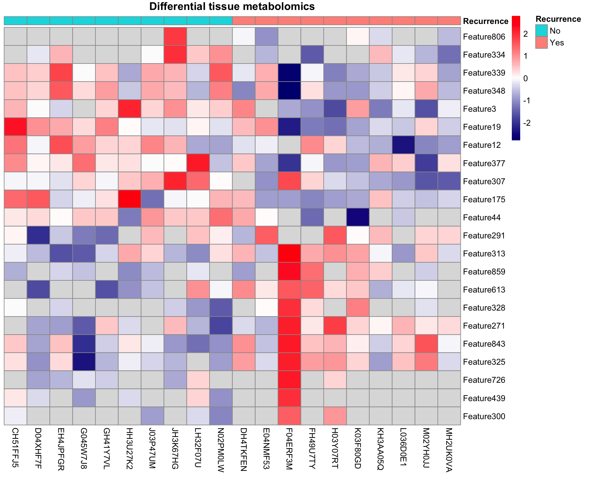
PC10 potentially separates recurrence and non-recurrence patients.
# Visualize PCs
ggplot(pcTab, aes(x=Recurrence, y=PC10, col=Recurrence, fill=Recurrence)) +
geom_boxplot(alpha = 0.5, outlier.shape = NA) +
geom_jitter(position = position_jitter(0.2), size = 2, show.legend = F) +
labs(title = 'Tumor tissue lipidomics') +
scale_color_manual(values=c('#00BFC4', '#F8766D')) +
scale_fill_manual(values=c('#00BFC4', '#F8766D')) +
ggpubr::stat_compare_means(method = 't.test', paired = F, size = 6,
method.args = list(var.equal = T), hjust = 0.65,
show.legend = F) +
theme(axis.title = element_text(size = 16),
legend.title = element_text(size = 14), legend.text = element_text(size = 12))
| Version | Author | Date |
|---|---|---|
| 0bbd8eb | LiaoQianWu | 2023-04-25 |
Plot molecular signatures captured by PC10 in input data. We took a look at top 20 features with highest loadings and observed metabolite levels of these top features through heatmap. Note that features in heatmap are ordered by their loadings.
# Plot molecular signatures in input data
# Extract top features with highest loadings
topFeats <- pcTopFeatTab$PC10$Feature[1:20]
# Order features by loadings
topFeatsIdx <- sapply(topFeats, function(feat) {which(rownames(datMat) == feat)})
pheatmap::pheatmap(datMat[topFeatsIdx, smpOrder],
annotation_col = smpRecur,
color = colorRampPalette(c('navy', 'white', 'red'))(100),
cluster_rows = F, cluster_cols = F,
scale = 'row', main = 'Tumor tissue lipidomics - PC10')
| Version | Author | Date |
|---|---|---|
| 0bbd8eb | LiaoQianWu | 2023-04-25 |
Display top features that build the PC10
# Display top features with highest loadings of PC of interest
pcTopFeats <- dplyr::left_join(pcTopFeatTab$PC10, featInfo, by = 'Feature')
pcTopFeats Feature Loading MZ.RT
1 Feature487 0.15106304 613.16361/3.64
2 Feature482 0.14884924 612.16287/3.63
3 Feature120 0.13570498 348.07027/0.76
4 Feature716 0.13457054 686.18169/4.13
5 Feature720 0.12978226 687.18239/4.13
6 Feature201 0.12102608 429.0885/2.71
7 Feature366 0.10772777 553.19708/3.69
8 Feature2109 0.10180777 983.25876/6.09
9 Feature362 0.09995146 552.1963/3.69
10 Feature2106 0.09529191 982.25728/6.11
11 Feature171 0.09012988 384.11504/0.76
12 Feature379 0.08900301 566.54971/6.03
13 Feature27 0.08688087 253.26376/1.54
14 Feature270 0.08373164 482.32394/2.48
15 Feature1889 0.08287629 894.75265/7.53
16 Feature545 0.08237228 639.63895/6.03
17 Feature512 0.08111085 626.21489/4.2
18 Feature267 0.07838728 480.30835/2.08
19 Feature1224 0.07459423 772.58446/6.03
20 Feature357 0.07310490 550.38636/2.47
21 Feature932 0.07286911 730.53721/4.5
22 Feature1128 0.07118373 759.63632/5.9
23 Feature1619 0.07071844 831.6936/6.11
24 Feature2089 0.07000202 972.73372/6.24
25 Feature924 0.06998330 728.58777/2.97
26 Feature422 0.06931408 590.48054/4.2
27 Feature1902 0.06925997 900.55919/3.87
28 Feature1541 0.06770523 816.64643/6.31
29 Feature1256 0.06737480 776.6151/6.01
30 Feature893 0.06685135 721.58404/4.31# Store table in list for creating Excel file
sigFeatSheet <- append(sigFeatSheet, list(TumorTissueLipid_PC10 = pcTopFeats))Another PC that significantly separates recurrence and non-recurrence patients
# Visualize PCs
ggplot(pcTab, aes(x=Recurrence, y=PC13, col=Recurrence, fill=Recurrence)) +
geom_boxplot(alpha = 0.5, outlier.shape = NA) +
geom_jitter(position = position_jitter(0.2), size = 2, show.legend = F) +
labs(title = 'Tumor tissue lipidomics') +
scale_color_manual(values=c('#00BFC4', '#F8766D')) +
scale_fill_manual(values=c('#00BFC4', '#F8766D')) +
ggpubr::stat_compare_means(method = 't.test', paired = F, size = 6,
method.args = list(var.equal = T), hjust = 0.65,
show.legend = F) +
theme(axis.title = element_text(size = 16),
legend.title = element_text(size = 14), legend.text = element_text(size = 12))
| Version | Author | Date |
|---|---|---|
| 0bbd8eb | LiaoQianWu | 2023-04-25 |
# Plot molecular signatures in input data
# Extract top features with highest loadings
topFeats <- pcTopFeatTab$PC13$Feature[1:20]
# Order features by loadings
topFeatsIdx <- sapply(topFeats, function(feat) {which(rownames(datMat) == feat)})
pheatmap::pheatmap(datMat[topFeatsIdx, smpOrder],
annotation_col = smpRecur,
color = colorRampPalette(c('navy', 'white', 'red'))(100),
cluster_rows = F, cluster_cols = F,
scale = 'row', main = 'Tumor tissue lipidomics - PC13')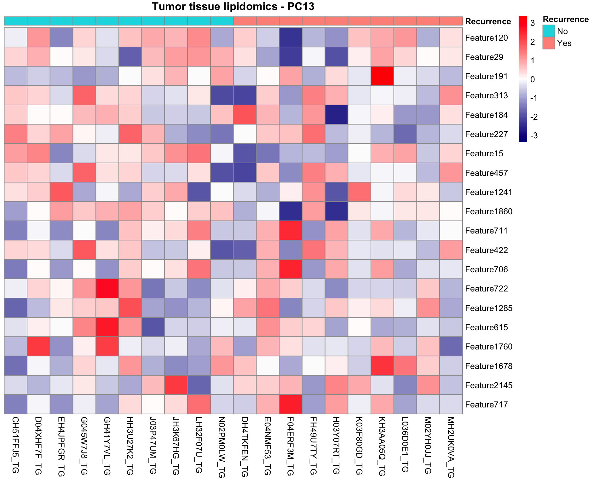
# Display top features with highest loadings of PC of interest
pcTopFeats <- dplyr::left_join(pcTopFeatTab$PC13, featInfo, by = 'Feature')
pcTopFeats Feature Loading MZ.RT
1 Feature120 0.17357878 348.07027/0.76
2 Feature29 0.12596720 258.10997/0.78
3 Feature191 0.10458079 420.33183/2.22
4 Feature313 0.09448433 531.40726/4.2
5 Feature184 0.09026213 408.29334/2.5
6 Feature227 0.08848907 448.34214/1.76
7 Feature15 0.08643438 232.15435/1.08
8 Feature457 0.08499215 604.49625/4.2
9 Feature1241 0.08402218 774.70989/8.24
10 Feature1860 0.08178148 886.55148/4.05
11 Feature711 0.08051590 685.20256/5.86
12 Feature422 0.08017588 590.48054/4.2
13 Feature706 0.07609640 684.20188/5.86
14 Feature722 0.07567336 688.58639/6.27
15 Feature1285 0.07566444 781.59288/5.22
16 Feature615 0.07556059 662.57096/6.24
17 Feature1760 0.07391061 854.69624/6.6
18 Feature1678 0.07301781 838.62723/6.3
19 Feature2145 0.07091389 1064.60178/4.07
20 Feature717 0.07078017 686.20094/5.86
21 Feature635 0.06984153 667.52618/6.23
22 Feature1538 0.06976527 816.63796/5.92
23 Feature1763 0.06973928 855.69928/6.59
24 Feature1158 0.06949823 764.55804/4.56
25 Feature368 0.06869479 554.17574/2.45
26 Feature570 0.06834847 644.55965/6.26
27 Feature206 0.06721925 429.37228/4.06
28 Feature208 0.06639370 430.37947/5.14
29 Feature407 0.06617301 579.42566/2.58
30 Feature1280 0.06502233 780.58975/5.22# Store table in list for creating Excel file
sigFeatSheet <- append(sigFeatSheet, list(TumorTissueLipid_PC13 = pcTopFeats))Normal samples
Display significant associations between features (Var1) and cancer recurrence (Var2) and observe molecular signatures in input data through heatmap. Note that features in heatmap are ordered by their t-statistics.
# Subset normal samples
smpNormalIdx <- which(colData(lipTissueVsn)$Condition == 'Normal')
lipNormal <- lipTissueVsn[, smpNormalIdx]
# Perform analysis
lipNormalRes <- SOA(lipNormal, factor = 'Recurrence', num_feats = 30)
datMat <- lipNormalRes$data
smpAnno <- lipNormalRes$smpMetadata
tFeatSigRes <- lipNormalRes$tFeatSigRes
tPCASigRes <- lipNormalRes$tPCASigRes
pcaRes <- lipNormalRes$pcaRes
pcTab <- lipNormalRes$pcTab
pcTopFeatTab <- lipNormalRes$pcTopFeatTab
# Display features that can significantly separate recurrence and non-recurrence
# patients
sigFeatTab <- dplyr::mutate(tFeatSigRes, MZ.RT = plyr::mapvalues(Var1,
from = featInfo$Feature,
to = featInfo$MZ.RT,
warn_missing = F))
sigFeatTab Var1 Var2 pVal tStats pValAdj MZ.RT
1 Feature1335 Recurrence 0.002477018 -4.340411 0.9991086 788.61518/5.9
2 Feature428 Recurrence 0.005092213 7.406107 0.9991086 590.54957/7.29
3 Feature432 Recurrence 0.006200536 -4.534380 0.9991086 590.54966/7.75
4 Feature292 Recurrence 0.006412170 3.106674 0.9991086 512.42897/3.14
5 Feature1713 Recurrence 0.006574398 -6.774082 0.9991086 844.73787/7.61
6 Feature1604 Recurrence 0.009451183 -2.904592 0.9991086 827.67268/6.3
7 Feature277 Recurrence 0.013543159 2.736980 0.9991086 488.39414/3.66
8 Feature1576 Recurrence 0.013976402 -2.722194 0.9991086 823.54335/4.94
9 Feature1443 Recurrence 0.018012090 -2.634988 0.9991086 801.65774/6.31
10 Feature1475 Recurrence 0.018878856 -2.856793 0.9991086 808.61898/5.7
11 Feature1284 Recurrence 0.018938522 -2.593354 0.9991086 781.59037/5.85
12 Feature1503 Recurrence 0.019234850 2.585839 0.9991086 812.5404/5.29
13 Feature1602 Recurrence 0.019770706 -2.557892 0.9991086 826.67/6.32
14 Feature89 Recurrence 0.020046057 3.744299 0.9991086 338.34131/8.84
15 Feature681 Recurrence 0.022322362 2.513492 0.9991086 680.63284/8
16 Feature1059 Recurrence 0.023633736 2.880528 0.9991086 748.54832/4.09
17 Feature1767 Recurrence 0.023974688 -2.465264 0.9991086 856.71466/6.84
18 Feature1760 Recurrence 0.025114277 -2.442796 0.9991086 854.69624/6.6
19 Feature1208 Recurrence 0.026987943 -2.407856 0.9991086 770.60321/5.26
20 Feature1157 Recurrence 0.028722547 -2.389626 0.9991086 764.55441/5.15
21 Feature58 Recurrence 0.028769907 2.458131 0.9991086 299.0616/3.18
22 Feature56 Recurrence 0.030989384 2.418548 0.9991086 297.08235/3.63
23 Feature1446 Recurrence 0.031005597 2.351671 0.9991086 802.63057/6.73
24 Feature1009 Recurrence 0.032634943 2.414645 0.9991086 741.38818/4.07
25 Feature1798 Recurrence 0.032774290 -2.312696 0.9991086 865.65028/5.87
26 Feature294 Recurrence 0.033181564 2.306602 0.9991086 516.42534/4.19
27 Feature24 Recurrence 0.034594726 -2.285984 0.9991086 248.14914/1.02
28 Feature659 Recurrence 0.034954492 2.280859 0.9991086 673.52699/3.55
29 Feature237 Recurrence 0.035910714 -2.267473 0.9991086 454.3889/2.44
30 Feature1605 Recurrence 0.036107956 -2.264752 0.9991086 827.699/6.49
31 Feature825 Recurrence 0.036122356 2.385900 0.9991086 709.55676/2.66
32 Feature1134 Recurrence 0.036718909 -2.503888 0.9991086 760.58429/5.32
33 Feature1431 Recurrence 0.037356681 -2.247843 0.9991086 799.66773/6.12
34 Feature1156 Recurrence 0.038630530 2.231122 0.9991086 764.54319/4.24
35 Feature900 Recurrence 0.040407274 -4.822689 0.9991086 722.52615/6.27
36 Feature623 Recurrence 0.040445461 2.208155 0.9991086 665.58371/6.38
37 Feature945 Recurrence 0.041559394 2.490611 0.9991086 732.59789/7.69
38 Feature1562 Recurrence 0.042564583 -2.182509 0.9991086 820.61983/5.18
39 Feature1682 Recurrence 0.043358202 -2.173205 0.9991086 838.67444/6.31
40 Feature1019 Recurrence 0.045220830 -2.258375 0.9991086 742.53713/5.15
41 Feature1172 Recurrence 0.045878552 -2.207294 0.9991086 766.53711/5.11
42 Feature1731 Recurrence 0.046096216 -2.142260 0.9991086 849.68169/6.49
43 Feature1438 Recurrence 0.046557165 -2.199302 0.9991086 800.65783/6.32
44 Feature2022 Recurrence 0.047585935 -2.229284 0.9991086 940.83084/7.76
45 Feature1800 Recurrence 0.047970711 -2.477452 0.9991086 866.69856/6.71
46 Feature986 Recurrence 0.048155266 2.120075 0.9991086 738.58068/5.28
47 Feature264 Recurrence 0.048293664 -2.248608 0.9991086 476.37341/2.01
48 Feature1006 Recurrence 0.049847342 2.102482 0.9991086 740.54332/4.64
49 Feature208 Recurrence 0.049925227 -2.448014 0.9991086 430.37947/5.14# Plot molecular signatures in input data
# Order features according to t-statistics
featOrder <- dplyr::arrange(tFeatSigRes, dplyr::desc(tStats))$Var1
# Arrange samples to make same groups in same clusters
smpOrder <- c(which(smpAnno$Recurrence == 'No'),
which(smpAnno$Recurrence == 'Yes'))
# Prepare recurrence table for annotating samples in heatmap
smpRecur <- dplyr::select(smpAnno, Sample, Recurrence) %>%
tibble::column_to_rownames('Sample')
pheatmap::pheatmap(datMat[featOrder, smpOrder],
annotation_col = smpRecur,
color = colorRampPalette(c('navy', 'white', 'red'))(100),
cluster_rows = F, cluster_cols = F, show_rownames = T,
scale = 'row', main = 'Normal tissue lipidomics')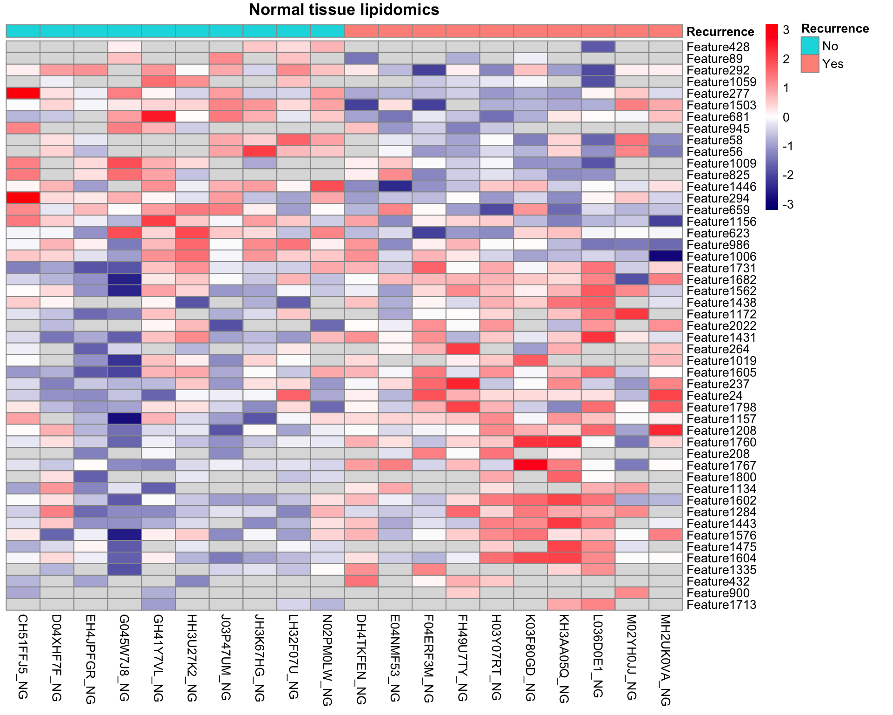
Use probabilistic dropout model to account for missing values and identify differentially abundant lipids in Normal tissue that are significantly associated with cancer recurrence. Note that features in heatmap are ordered by their t-statistics.
# Fit linear probabilistic dropout model to normalized data
fit <- proDA::proDA(datMat, design = ~ smpAnno$Recurrence)
# fit
# Check coefficient names for Parameter 'contrast' in proDA::test_diff()
# proDA::result_names(fit)
# Identify significant differentially abundant entities
all_proDALipNormalRes <- proDA::test_diff(fit,
contrast = Intercept + `smpAnno$RecurrenceYes` - Intercept,
sort_by = 'pval')
proDALipNormalRes <- dplyr::select(all_proDALipNormalRes,
-c(diff, se, df, avg_abundance, n_approx)) %>%
dplyr::filter(pval < 0.05) %>%
dplyr::mutate(MZ_RT = plyr::mapvalues(name,
from = featInfo$Feature,
to = featInfo$MZ.RT,
warn_missing = F))
proDALipNormalRes name pval adj_pval t_statistic n_obs MZ_RT
1 Feature1335 0.002126469 0.9999088 3.582919 10 788.61518/5.9
2 Feature292 0.007726984 0.9999088 -2.997519 19 512.42897/3.14
3 Feature1604 0.010991963 0.9999088 2.834504 20 827.67268/6.3
4 Feature1475 0.012690218 0.9999088 2.767463 11 808.61898/5.7
5 Feature1576 0.016468240 0.9999088 2.644817 20 823.54335/4.94
6 Feature277 0.016685358 0.9999088 -2.638614 20 488.39414/3.66
7 Feature900 0.019465456 0.9999088 2.565324 4 722.52615/6.27
8 Feature1503 0.019688093 0.9999088 -2.559892 19 812.5404/5.29
9 Feature1443 0.021135962 0.9999088 2.525924 18 801.65774/6.31
10 Feature1602 0.024205963 0.9999088 2.460624 20 826.67/6.32
11 Feature58 0.024240876 0.9999088 -2.459927 15 299.0616/3.18
12 Feature1284 0.024600389 0.9999088 2.452807 19 781.59037/5.85
13 Feature322 0.024780339 0.9999088 2.449279 3 538.14429/3.3
14 Feature56 0.027285927 0.9999088 -2.402510 15 297.08235/3.63
15 Feature1760 0.030221583 0.9999088 2.352572 20 854.69624/6.6
16 Feature1009 0.031550514 0.9999088 -2.331438 14 741.38818/4.07
17 Feature208 0.032413734 0.9999088 2.318149 8 430.37947/5.14
18 Feature1713 0.033831983 0.9999088 2.297013 5 844.73787/7.61
19 Feature432 0.034733654 0.9999088 2.283999 7 590.54966/7.75
20 Feature89 0.034854209 0.9999088 -2.282283 6 338.34131/8.84
21 Feature1798 0.036310195 0.9999088 2.261978 20 865.65028/5.87
22 Feature1157 0.036567590 0.9999088 2.258466 19 764.55441/5.15
23 Feature681 0.036954050 0.9999088 -2.253237 19 680.63284/8
24 Feature1208 0.037041184 0.9999088 2.252065 20 770.60321/5.26
25 Feature1749 0.037191347 0.9999088 2.250051 5 852.68019/6.33
26 Feature24 0.037398978 0.9999088 2.247279 20 248.14914/1.02
27 Feature294 0.037907237 0.9999088 -2.240553 20 516.42534/4.19
28 Feature825 0.038362403 0.9999088 -2.234599 13 709.55676/2.66
29 Feature1767 0.038439883 0.9999088 2.233592 20 856.71466/6.84
30 Feature1438 0.038594648 0.9999088 2.231586 15 800.65783/6.32
31 Feature237 0.041150863 0.9999088 2.199484 20 454.3889/2.44
32 Feature264 0.043372729 0.9999088 2.173036 12 476.37341/2.01
33 Feature1156 0.044611155 0.9999088 -2.158829 20 764.54319/4.24
34 Feature623 0.044963652 0.9999088 -2.154851 20 665.58371/6.38
35 Feature945 0.044985236 0.9999088 -2.154608 9 732.59789/7.69
36 Feature1016 0.048438759 0.9999088 -2.117089 15 742.24434/4.13
37 Feature1562 0.049679456 0.9999088 2.104203 20 820.61983/5.18# Plot molecular signatures in input data
# Order features according to t-statistics
featOrder <- dplyr::arrange(proDALipNormalRes, dplyr::desc(t_statistic))$name
pheatmap::pheatmap(datMat[featOrder, smpOrder],
annotation_col = smpRecur,
color = colorRampPalette(c('navy', 'white', 'red'))(100),
cluster_rows = F, cluster_cols = F,
scale = 'row', main = 'Normal tissue lipidomics (proDA)')
| Version | Author | Date |
|---|---|---|
| 0bbd8eb | LiaoQianWu | 2023-04-25 |
# Store table in list for creating Excel file
sigFeatSheet <- append(sigFeatSheet, list(NormalTissueLipid_Feats = proDALipNormalRes))ovl <- intersect(lipNormalRes$tFeatSigRes$Var1, proDALipNormalRes$name)
cat('The following features', paste0('(n =', length(ovl), ')'),
'are tested significant by both methods:\n', ovl)The following features (n =34) are tested significant by both methods:
Feature1335 Feature432 Feature292 Feature1713 Feature1604 Feature277 Feature1576 Feature1443 Feature1475 Feature1284 Feature1503 Feature1602 Feature89 Feature681 Feature1767 Feature1760 Feature1208 Feature1157 Feature58 Feature56 Feature1009 Feature1798 Feature294 Feature24 Feature237 Feature825 Feature1156 Feature900 Feature623 Feature945 Feature1562 Feature1438 Feature264 Feature208Visualize data of top 6 significant features based on proDA result
# Visualize data of top 6 significant features
topSigFeats <- proDALipNormalRes$name[1:6]
topSigFeatData <- tibble::as_tibble(datMat[topSigFeats,], rownames = 'Feature') %>%
tidyr::pivot_longer(cols = -'Feature',
names_to = 'Sample', values_to = 'Abundance') %>%
dplyr::mutate(Feature = factor(Feature, levels = topSigFeats)) %>%
dplyr::left_join(smpAnno, by = 'Sample')
ggplot(topSigFeatData, aes(x=Recurrence, y=Abundance, col=Recurrence, fill=Recurrence)) +
geom_boxplot(alpha = 0.5, outlier.shape = NA) +
geom_jitter(position = position_jitter(0.2), size = 2, show.legend = F) +
scale_color_manual(values=c('#00BFC4', '#F8766D')) +
scale_fill_manual(values=c('#00BFC4', '#F8766D')) +
facet_wrap(vars(Feature), scales = 'free') +
ggpubr::stat_compare_means(method = 't.test', paired = F,
method.args = list(var.equal = T),
show.legend = F)
| Version | Author | Date |
|---|---|---|
| 0bbd8eb | LiaoQianWu | 2023-04-25 |
Display significant associations between PCs (Var1) and cancer recurrence (Var2)
# Display PCs that can significantly separate recurrence and non-recurrence
# patients
tPCASigRes Var1 Var2 pVal tStats pValAdj
1 PC14 Recurrence 0.04026408 -2.210408 0.6966757# Display proportion of total variance captured by all PCs explained by each PC
varExplained <- pcaRes$sdev^2 / sum(pcaRes$sdev^2)
PC <- paste0('PC', seq(length(varExplained)))
varTab <- data.frame(PC = factor(PC, levels = PC),
Var_explained = varExplained)
ggplot(varTab, aes(x=PC, y=Var_explained*100)) +
geom_col() +
labs(x = '', y = 'Variance explained (%)',
title = 'Normal tissue lipidomics')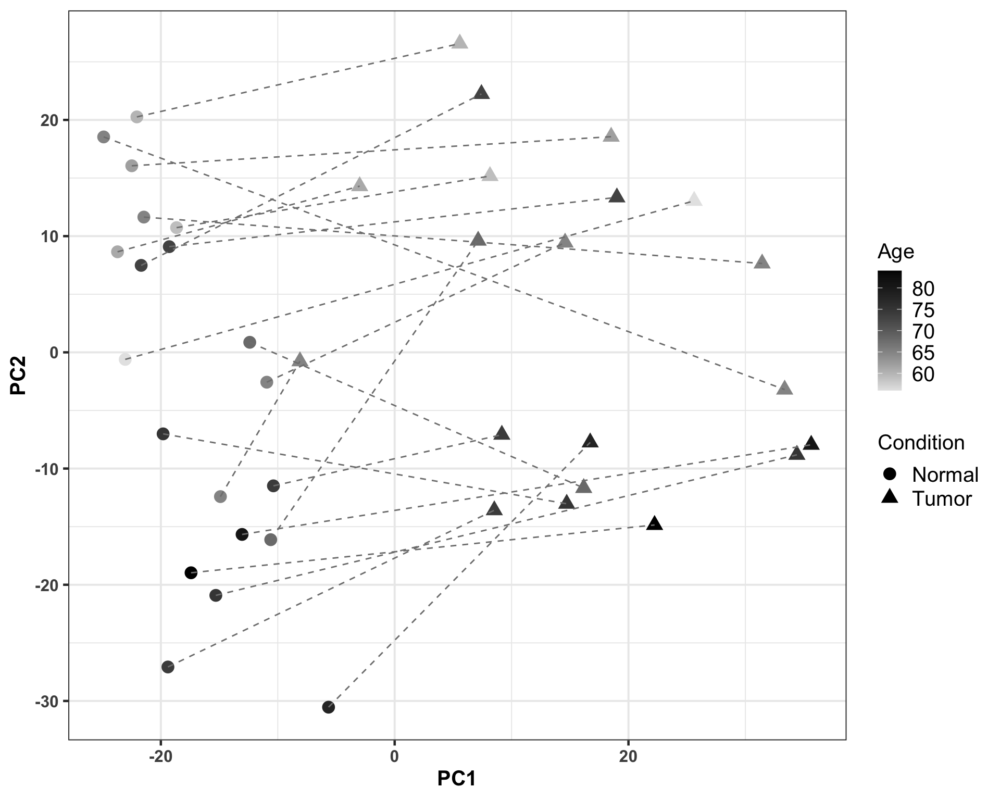
PC14 potentially separates recurrence and non-recurrence patients.
# Visualize PCs
ggplot(pcTab, aes(x=Recurrence, y=PC14, col=Recurrence, fill=Recurrence)) +
geom_boxplot(alpha = 0.5, outlier.shape = NA) +
geom_jitter(position = position_jitter(0.2), size = 2, show.legend = F) +
labs(title = 'Normal tissue lipidomics') +
scale_color_manual(values=c('#00BFC4', '#F8766D')) +
scale_fill_manual(values=c('#00BFC4', '#F8766D')) +
ggpubr::stat_compare_means(method = 't.test', paired = F, size = 6,
method.args = list(var.equal = T), hjust = 0.65,
show.legend = F) +
theme(axis.title = element_text(size = 16),
legend.title = element_text(size = 14), legend.text = element_text(size = 12))
| Version | Author | Date |
|---|---|---|
| 0bbd8eb | LiaoQianWu | 2023-04-25 |
Plot molecular signatures captured by PC14 in input data. We took a look at top 20 features with highest loadings and observed metabolite levels of these top features through heatmap. Note that features in heatmap are ordered by their loadings.
# Plot molecular signatures in input data
# Extract top features with highest loadings
topFeats <- pcTopFeatTab$PC14$Feature[1:20]
# Order features by loadings
topFeatsIdx <- sapply(topFeats, function(feat) {which(rownames(datMat) == feat)})
pheatmap::pheatmap(datMat[topFeatsIdx, smpOrder],
annotation_col = smpRecur,
color = colorRampPalette(c('navy', 'white', 'red'))(100),
cluster_rows = F, cluster_cols = F,
scale = 'row', main = 'Tumor tissue lipidomics - PC14')
| Version | Author | Date |
|---|---|---|
| 0bbd8eb | LiaoQianWu | 2023-04-25 |
Display top features that build the PC14
# Display top features with highest loadings of PC of interest
pcTopFeats <- dplyr::left_join(pcTopFeatTab$PC14, featInfo, by = 'Feature')
pcTopFeats Feature Loading MZ.RT
1 Feature59 0.18205702 302.30526/1.65
2 Feature927 0.17623964 729.41396/1.06
3 Feature525 0.15163352 630.34584/1.05
4 Feature486 0.15135546 613.15932/0.87
5 Feature37 0.11714633 269.08818/0.78
6 Feature46 0.11690453 279.26788/3.09
7 Feature24 0.10912033 248.14914/1.02
8 Feature227 0.10669750 448.34214/1.76
9 Feature18 0.10576806 235.18042/1.19
10 Feature294 0.10029176 516.42534/4.19
11 Feature1345 0.08890582 790.55948/4.29
12 Feature43 0.08880385 276.11898/0.76
13 Feature277 0.08860424 488.39414/3.66
14 Feature921 0.08739738 728.52129/4.08
15 Feature41 0.08580051 274.27403/1.43
16 Feature1617 0.08227153 831.56906/4.92
17 Feature753 0.07905539 694.64776/8.05
18 Feature2138 0.07678474 1024.67711/4.43
19 Feature1231 0.07649558 773.53195/4.29
20 Feature1482 0.07480687 809.48971/7.24
21 Feature1109 0.07480304 756.55308/4.48
22 Feature1283 0.07173543 781.45882/7.01
23 Feature267 0.07171909 480.30835/2.08
24 Feature443 0.06973506 593.44132/3.01
25 Feature703 0.06916509 683.54305/2.52
26 Feature1252 0.06909820 776.5583/5.26
27 Feature190 0.06755690 416.33705/1.69
28 Feature1579 0.06718456 823.63959/6.01
29 Feature298 0.06646787 522.20298/0.77
30 Feature1422 0.06631130 798.62721/5.67# Store table in list for creating Excel file
sigFeatSheet <- append(sigFeatSheet, list(NormalTissueLipid_PC14 = pcTopFeats))Difference in tissue conditions
Differences between Tumor and Normal samples (Tumor matrix - Normal
matrix):
Display significant associations between features (Var1) and cancer recurrence (Var2) and observe molecular signatures in input data through heatmap. Note that features in heatmap are ordered by their t-statistics.
# Subset tumor samples
smpTumorIdx <- which(colData(lipTissueVsn)$Condition == 'Tumor')
lipTumor <- lipTissueVsn[, smpTumorIdx]
# Subset normal samples
smpNormalIdx <- which(colData(lipTissueVsn)$Condition == 'Normal')
lipNormal <- lipTissueVsn[, smpNormalIdx]
# Modify column names for matching two matrices
colnames(lipTumor) <- stringr::str_remove(colnames(lipTumor), '_TG')
colnames(lipNormal) <- stringr::str_remove(colnames(lipNormal), '_NG')
# Retrieve data matrix
lipTumorMat <- SummarizedExperiment::assay(lipTumor)
lipNormalMat <- SummarizedExperiment::assay(lipNormal)
# Subtract tumor matrix by normal matrix
if (identical(colnames(lipTumorMat), colnames(lipNormalMat)) &
identical(rownames(lipTumorMat), rownames(lipNormalMat))) {
lipTissueDiffMat <- lipTumorMat - lipNormalMat
} else {
print('Align samples or features first.')
}
# Retrieve samples metadata for creating SE object
colAnno <- dplyr::select(as.data.frame(colData(lipTumor)), Patient, Recurrence)
lipTissueDiff <- SummarizedExperiment(assays = lipTissueDiffMat, colData = colAnno)
# Perform analysis
lipTissueDiffRes <- SOA(lipTissueDiff, factor = 'Recurrence', num_feats = 30)
datMat <- lipTissueDiffRes$data
smpAnno <- lipTissueDiffRes$smpMetadata
tFeatSigRes <- lipTissueDiffRes$tFeatSigRes
tPCASigRes <- lipTissueDiffRes$tPCASigRes
pcaRes <- lipTissueDiffRes$pcaRes
pcTab <- lipTissueDiffRes$pcTab
pcTopFeatTab <- lipTissueDiffRes$pcTopFeatTab
# Display features that can significantly separate recurrence and non-recurrence
# patients
sigFeatTab <- dplyr::mutate(tFeatSigRes, MZ.RT = plyr::mapvalues(Var1,
from = featInfo$Feature,
to = featInfo$MZ.RT,
warn_missing = F))
sigFeatTab Var1 Var2 pVal tStats pValAdj MZ.RT
1 Feature148 Recurrence 0.0008978617 8.855725 0.9420208 369.35126/4.93
2 Feature1991 Recurrence 0.0020618744 3.596789 0.9420208 925.51918/4.56
3 Feature2022 Recurrence 0.0021044943 4.111798 0.9420208 940.83084/7.76
4 Feature274 Recurrence 0.0039207778 162.368734 0.9420208 482.4043/7.79
5 Feature648 Recurrence 0.0040445994 -3.320766 0.9420208 669.33352/4.34
6 Feature1001 Recurrence 0.0055574644 -3.173319 0.9420208 740.37842/4.05
7 Feature1009 Recurrence 0.0059275925 -3.479355 0.9420208 741.38818/4.07
8 Feature1849 Recurrence 0.0060239807 3.111636 0.9420208 881.51429/4.01
9 Feature1844 Recurrence 0.0071396769 3.082299 0.9420208 879.82041/7.93
10 Feature1773 Recurrence 0.0074236036 3.015930 0.9420208 859.53153/4.01
11 Feature310 Recurrence 0.0080062788 -2.981180 0.9420208 529.17727/2.58
12 Feature626 Recurrence 0.0088936809 2.953463 0.9420208 666.51379/5.96
13 Feature695 Recurrence 0.0090238374 -2.925992 0.9420208 683.34877/5.67
14 Feature1917 Recurrence 0.0090984069 2.922188 0.9420208 904.59059/4.56
15 Feature1874 Recurrence 0.0093955805 2.907323 0.9420208 889.56985/4.57
16 Feature997 Recurrence 0.0101170502 -2.892738 0.9420208 739.6055/3.03
17 Feature373 Recurrence 0.0102051049 -3.001719 0.9420208 557.41237/2.59
18 Feature1826 Recurrence 0.0110249699 2.833109 0.9420208 876.55903/4.01
19 Feature1943 Recurrence 0.0112667243 2.887944 0.9420208 908.53688/4.06
20 Feature1392 Recurrence 0.0119218574 -2.835976 0.9420208 795.66755/3.64
21 Feature163 Recurrence 0.0124745462 -2.775482 0.9420208 379.28169/2.74
22 Feature989 Recurrence 0.0130773257 -2.753393 0.9420208 739.37554/4.05
23 Feature585 Recurrence 0.0141607073 -2.716036 0.9420208 651.34283/4.5
24 Feature592 Recurrence 0.0142478782 -2.713151 0.9420208 655.31756/5
25 Feature568 Recurrence 0.0156355657 -2.669351 0.9420208 644.30392/4.66
26 Feature160 Recurrence 0.0167198222 38.066995 0.9420208 378.29374/1.6
27 Feature372 Recurrence 0.0168558094 -2.633798 0.9420208 557.20876/3.05
28 Feature1284 Recurrence 0.0175926983 2.628956 0.9420208 781.59037/5.85
29 Feature1094 Recurrence 0.0179931664 -2.602799 0.9420208 753.42705/5.93
30 Feature1129 Recurrence 0.0206193476 6.855899 0.9420208 760.20034/4.67
31 Feature737 Recurrence 0.0209056009 -2.966692 0.9420208 691.52925/2.53
32 Feature668 Recurrence 0.0211401672 -2.525829 0.9420208 679.37402/5.17
33 Feature1409 Recurrence 0.0212697263 -2.617926 0.9420208 797.45229/6.65
34 Feature541 Recurrence 0.0220243893 -2.506154 0.9420208 637.30751/4.17
35 Feature186 Recurrence 0.0223628744 -2.498818 0.9420208 409.32846/3.64
36 Feature1105 Recurrence 0.0225241073 -2.495361 0.9420208 756.42976/5.93
37 Feature559 Recurrence 0.0235892841 -2.473089 0.9420208 642.30542/4.66
38 Feature208 Recurrence 0.0248827842 2.972317 0.9420208 430.37947/5.14
39 Feature511 Recurrence 0.0258533146 -2.428732 0.9420208 623.31179/3.92
40 Feature118 Recurrence 0.0260823169 -2.424450 0.9420208 341.30499/3.12
41 Feature809 Recurrence 0.0262682818 -2.420999 0.9420208 707.40494/4.52
42 Feature32 Recurrence 0.0265170039 -2.416419 0.9420208 267.26814/3.12
43 Feature694 Recurrence 0.0266234804 -2.525812 0.9420208 683.31335/3.49
44 Feature277 Recurrence 0.0266436315 -2.414103 0.9420208 488.39414/3.66
45 Feature24 Recurrence 0.0268466946 2.410410 0.9420208 248.14914/1.02
46 Feature20 Recurrence 0.0273594243 -2.413659 0.9420208 239.23691/2.6
47 Feature435 Recurrence 0.0276866039 22.979285 0.9420208 590.54983/7.07
48 Feature1152 Recurrence 0.0279163212 -2.391377 0.9420208 763.46823/5.8
49 Feature645 Recurrence 0.0279372836 -2.391011 0.9420208 669.33327/5.35
50 Feature913 Recurrence 0.0282444443 -2.385675 0.9420208 725.39571/5.36
51 Feature656 Recurrence 0.0283609443 -2.383665 0.9420208 672.33546/5.36
52 Feature990 Recurrence 0.0289832898 -2.373059 0.9420208 739.37555/3.18
53 Feature830 Recurrence 0.0296275088 -2.362301 0.9420208 710.39661/4.17
54 Feature1376 Recurrence 0.0298132404 2.833682 0.9420208 793.62708/2.72
55 Feature1708 Recurrence 0.0309508328 2.340870 0.9420208 843.6827/7.8
56 Feature669 Recurrence 0.0309633268 -2.340672 0.9420208 679.37407/4.51
57 Feature2105 Recurrence 0.0309847201 -2.340333 0.9420208 982.24369/3.08
58 Feature649 Recurrence 0.0310005956 -2.340081 0.9420208 669.33354/4.04
59 Feature558 Recurrence 0.0310671000 -2.339028 0.9420208 641.30235/4.65
60 Feature514 Recurrence 0.0312165212 -2.336671 0.9420208 627.28666/4.34
61 Feature221 Recurrence 0.0313415613 2.684341 0.9420208 445.39961/2.61
62 Feature33 Recurrence 0.0315590543 5.494965 0.9420208 268.10396/0.83
63 Feature453 Recurrence 0.0323209976 -2.319561 0.9420208 599.25569/3.77
64 Feature15 Recurrence 0.0324482806 2.317624 0.9420208 232.15435/1.08
65 Feature810 Recurrence 0.0340290523 -2.294142 0.9420208 707.40511/5.79
66 Feature622 Recurrence 0.0340811743 -2.293385 0.9420208 665.35899/3.92
67 Feature185 Recurrence 0.0341930727 2.624334 0.9420208 408.30808/2.6
68 Feature660 Recurrence 0.0351764458 -5.190093 0.9420208 673.58798/8.12
69 Feature1600 Recurrence 0.0356308800 2.271356 0.9420208 826.60601/4.69
70 Feature1966 Recurrence 0.0365098335 2.269929 0.9420208 918.88318/8.13
71 Feature1841 Recurrence 0.0369333884 2.671889 0.9420208 878.81795/7.94
72 Feature2077 Recurrence 0.0371326623 2.443797 0.9420208 964.85167/7.8
73 Feature294 Recurrence 0.0377178637 -2.243049 0.9420208 516.42534/4.19
74 Feature519 Recurrence 0.0387878214 2.229093 0.9420208 627.534/4.57
75 Feature1869 Recurrence 0.0390891554 2.225226 0.9420208 887.56383/4.57
76 Feature1937 Recurrence 0.0391559075 2.224373 0.9420208 907.53009/4.05
77 Feature654 Recurrence 0.0402354006 -2.210765 0.9420208 671.33514/4.04
78 Feature2018 Recurrence 0.0411863021 -2.199052 0.9420208 940.19671/2.58
79 Feature1065 Recurrence 0.0413799100 -2.196698 0.9420208 749.4523/5.79
80 Feature693 Recurrence 0.0415045977 -2.195187 0.9420208 683.31301/3.18
81 Feature1050 Recurrence 0.0416785606 -2.193086 0.9420208 746.66229/3.63
82 Feature686 Recurrence 0.0417936052 2.225668 0.9420208 681.48448/5.96
83 Feature240 Recurrence 0.0418032335 2.486615 0.9420208 459.4152/2.61
84 Feature1087 Recurrence 0.0420628357 2.188474 0.9420208 752.55122/5.25
85 Feature1199 Recurrence 0.0428495386 -2.179150 0.9420208 769.57366/3.12
86 Feature416 Recurrence 0.0428673263 -2.178941 0.9420208 585.23996/3.05
87 Feature1208 Recurrence 0.0430216152 2.177132 0.9420208 770.60321/5.26
88 Feature1022 Recurrence 0.0434247447 -2.172432 0.9420208 742.63522/3.12
89 Feature766 Recurrence 0.0434614065 -2.172007 0.9420208 697.36485/4.66
90 Feature8 Recurrence 0.0436371683 2.910938 0.9420208 221.17483/2.6
91 Feature825 Recurrence 0.0439251851 -2.388988 0.9420208 709.55676/2.66
92 Feature340 Recurrence 0.0439854999 -3.352245 0.9420208 548.50275/7.45
93 Feature689 Recurrence 0.0443352221 -2.161963 0.9420208 682.36533/3.63
94 Feature451 Recurrence 0.0446457212 -2.158437 0.9420208 599.25541/3.51
95 Feature418 Recurrence 0.0453394108 -2.150642 0.9420208 585.24013/3.51
96 Feature2036 Recurrence 0.0454658543 -2.149232 0.9420208 947.11006/2.42
97 Feature704 Recurrence 0.0456936216 -2.146703 0.9420208 683.54342/2.6
98 Feature1867 Recurrence 0.0458482179 2.177160 0.9420208 886.8191/8.1
99 Feature246 Recurrence 0.0477413121 4.411173 0.9420208 464.43073/3.5
100 Feature552 Recurrence 0.0482719022 -2.150032 0.9420208 641.30195/4.88
101 Feature651 Recurrence 0.0484645969 -2.116818 0.9420208 670.33648/5.36
102 Feature987 Recurrence 0.0492067012 2.583771 0.9420208 738.58475/2.6
103 Feature452 Recurrence 0.0495932423 -2.105089 0.9420208 599.2555/3.05
104 Feature1467 Recurrence 0.0496466550 2.104540 0.9420208 806.60477/6.24# Plot molecular signatures in input data
# Order features according to t-statistics
featOrder <- dplyr::arrange(tFeatSigRes, dplyr::desc(tStats))$Var1
# Arrange samples to make same groups in same clusters
smpOrder <- c(which(smpAnno$Recurrence == 'No'),
which(smpAnno$Recurrence == 'Yes'))
# Prepare recurrence table for annotating samples in heatmap
smpRecur <- dplyr::select(smpAnno, Sample, Recurrence) %>%
tibble::column_to_rownames('Sample')
pheatmap::pheatmap(datMat[featOrder, smpOrder],
annotation_col = smpRecur,
color = colorRampPalette(c('navy', 'white', 'red'))(100),
cluster_rows = F, cluster_cols = F, show_rownames = F,
scale = 'row', main = 'Differential tissue lipidomics')
| Version | Author | Date |
|---|---|---|
| 0bbd8eb | LiaoQianWu | 2023-04-25 |
Use probabilistic dropout model to account for missing values and identify differentially abundant lipid difference between Tumor and Normal tissues that are significantly associated with cancer recurrence. Note that there is no differentially abundant lipid.
# Fit linear probabilistic dropout model to normalized data
fit <- proDA::proDA(datMat, design = ~ smpAnno$Recurrence)
# fit
# Check coefficient names for Parameter 'contrast' in proDA::test_diff()
# proDA::result_names(fit)
# Identify significant differentially abundant entities
proDALipTissueDiffRes <- proDA::test_diff(fit,
contrast = Intercept + `smpAnno$RecurrenceYes` - Intercept,
sort_by = 'pval', n_max = 30) %>%
dplyr::select(-c(diff, se, df, avg_abundance, n_approx)) %>%
dplyr::mutate(MZ_RT = plyr::mapvalues(name,
from = featInfo$Feature,
to = featInfo$MZ.RT,
warn_missing = F))
proDALipTissueDiffRes name pval adj_pval t_statistic n_obs MZ_RT
1770 Feature648 0.03892588 0.9999644 2.227318 19 669.33352/4.34
1103 Feature1991 0.06376038 0.9999644 -1.975398 20 925.51918/4.56
1822 Feature695 0.06667070 0.9999644 1.952017 20 683.34877/5.67
1746 Feature626 0.06959638 0.9999644 -1.929414 19 666.51379/5.96
1396 Feature310 0.07158250 0.9999644 1.914547 20 529.17727/2.58
318 Feature1284 0.07762523 0.9999644 -1.871463 19 781.59037/5.85
702 Feature163 0.08309423 0.9999644 1.834953 20 379.28169/2.74
1708 Feature592 0.08441657 0.9999644 1.826444 20 655.31756/5
2148 Feature989 0.08915983 0.9999644 1.796852 20 739.37554/4.05
1700 Feature585 0.09403646 0.9999644 1.767828 20 651.34283/4.5
5 Feature1001 0.09542517 0.9999644 1.759803 19 740.37842/4.05
1681 Feature568 0.09790781 0.9999644 1.745705 20 644.30392/4.66
1792 Feature668 0.11403029 0.9999644 1.661007 20 679.37402/5.17
1464 Feature372 0.11647052 0.9999644 1.649096 20 557.20876/3.05
1652 Feature541 0.12115537 0.9999644 1.626812 20 637.30751/4.17
172 Feature1152 0.12173589 0.9999644 1.624102 20 763.46823/5.8
1812 Feature686 0.12336930 0.9999644 -1.616535 17 681.48448/5.96
1949 Feature809 0.12367976 0.9999644 1.615106 20 707.40494/4.52
1793 Feature669 0.12702443 0.9999644 1.599905 20 679.37407/4.51
107 Feature1094 0.12738875 0.9999644 1.598269 20 753.42705/5.93
1671 Feature559 0.13044805 0.9999644 1.584690 20 642.30542/4.66
1619 Feature511 0.13271450 0.9999644 1.574802 20 623.31179/3.92
13 Feature1009 0.13299663 0.9999644 1.573581 12 741.38818/4.07
789 Feature1708 0.13334346 0.9999644 -1.572083 20 843.6827/7.8
457 Feature1409 0.13527068 0.9999644 1.563818 15 797.45229/6.65
1973 Feature830 0.13563220 0.9999644 1.562279 20 710.39661/4.17
2150 Feature990 0.13649487 0.9999644 1.558619 20 739.37555/3.18
1771 Feature649 0.13671197 0.9999644 1.557702 20 669.33354/4.04
202 Feature118 0.13690275 0.9999644 1.556896 20 341.30499/3.12
973 Feature1874 0.13818434 0.9999644 -1.551509 20 889.56985/4.57# Store table in list for creating Excel file
# sigFeatSheet <- append(sigFeatSheet, list(DiffTissueLipid_Feats = proDALipTissueDiffRes))We took top 30 differentially abundant features from proDA() to see overlaps
ovl <- intersect(lipTissueDiffRes$tFeatSigRes$Var1, proDALipTissueDiffRes$name)
cat('The following features', paste0('(n =', length(ovl), ')'),
'are overlapped betweeb two methods:\n', ovl)The following features (n =30) are overlapped betweeb two methods:
Feature1991 Feature648 Feature1001 Feature1009 Feature310 Feature626 Feature695 Feature1874 Feature163 Feature989 Feature585 Feature592 Feature568 Feature372 Feature1284 Feature1094 Feature668 Feature1409 Feature541 Feature559 Feature511 Feature118 Feature809 Feature1152 Feature990 Feature830 Feature1708 Feature669 Feature649 Feature686# Filter univariate result for making summarized plot
proDALipTissueDiffRes <- dplyr::filter(proDALipTissueDiffRes, pval < 0.05) %>%
dplyr::mutate(MZ_RT = plyr::mapvalues(name,
from = featInfo$Feature,
to = featInfo$MZ.RT,
warn_missing = F))Visualize data of top 6 significant features based on regular t-test result
# Visualize data of top 6 significant features
topSigFeats <- tFeatSigRes$Var1[1:6]
topSigFeatData <- tibble::as_tibble(datMat[topSigFeats,], rownames = 'Feature') %>%
tidyr::pivot_longer(cols = -'Feature',
names_to = 'Sample', values_to = 'Abundance') %>%
dplyr::mutate(Feature = factor(Feature, levels = topSigFeats)) %>%
dplyr::left_join(smpAnno, by = 'Sample')
ggplot(topSigFeatData, aes(x=Recurrence, y=Abundance, col=Recurrence, fill=Recurrence)) +
geom_boxplot(alpha = 0.5, outlier.shape = NA) +
geom_jitter(position = position_jitter(0.2), size = 2, show.legend = F) +
scale_color_manual(values=c('#00BFC4', '#F8766D')) +
scale_fill_manual(values=c('#00BFC4', '#F8766D')) +
facet_wrap(vars(Feature), scales = 'free') +
ggpubr::stat_compare_means(method = 't.test', paired = F,
method.args = list(var.equal = T),
show.legend = F)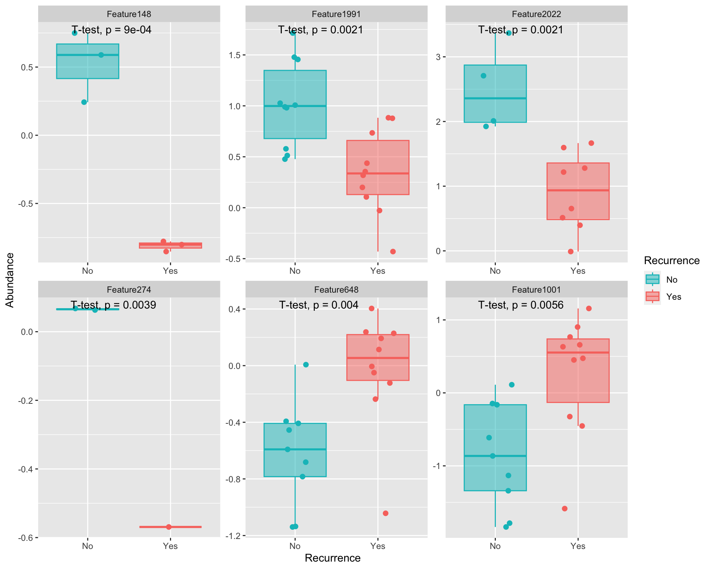
Display significant associations between PCs (Var1) and cancer recurrence (Var2)
# Display PCs that can significantly separate recurrence and non-recurrence
# patients
tPCASigRes Var1 Var2 pVal tStats pValAdj
1 PC15 Recurrence 0.009604073 2.897162 0.1920815
2 PC6 Recurrence 0.029773169 -2.359899 0.2977317# Display proportion of total variance captured by all PCs explained by each PC
varExplained <- pcaRes$sdev^2 / sum(pcaRes$sdev^2)
PC <- paste0('PC', seq(length(varExplained)))
varTab <- data.frame(PC = factor(PC, levels = PC),
Var_explained = varExplained)
ggplot(varTab, aes(x=PC, y=Var_explained*100)) +
geom_col() +
labs(x = '', y = 'Variance explained (%)',
title = 'Differential tissue lipidomics')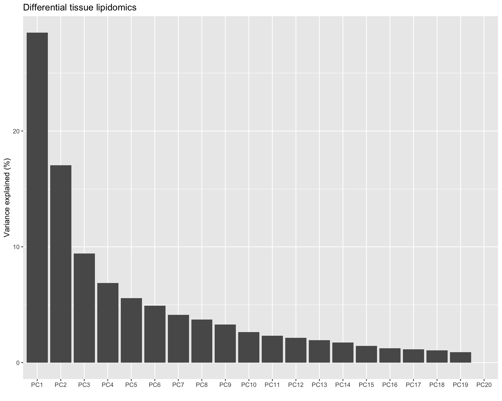
PC15 potentially separates recurrence and non-recurrence patients.
# Visualize PCs
ggplot(pcTab, aes(x=Recurrence, y=PC15, col=Recurrence, fill=Recurrence)) +
geom_boxplot(alpha = 0.5, outlier.shape = NA) +
geom_jitter(position = position_jitter(0.2), size = 2, show.legend = F) +
labs(title = 'Differential tissue lipidomics') +
scale_color_manual(values=c('#00BFC4', '#F8766D')) +
scale_fill_manual(values=c('#00BFC4', '#F8766D')) +
ggpubr::stat_compare_means(method = 't.test', paired = F, size = 5,
method.args = list(var.equal = T),
show.legend = F)
| Version | Author | Date |
|---|---|---|
| 0bbd8eb | LiaoQianWu | 2023-04-25 |
Plot molecular signatures captured by PC15 in input data. We took a look at top 20 features with highest loadings and observed metabolite levels of these top features through heatmap. Note that features in heatmap are ordered by their loadings.
# Plot molecular signatures in input data
# Extract top features with highest loadings
topFeats <- pcTopFeatTab$PC15$Feature[1:20]
# Order features by loadings
topFeatsIdx <- sapply(topFeats, function(feat) {which(rownames(datMat) == feat)})
pheatmap::pheatmap(datMat[topFeatsIdx, smpOrder],
annotation_col = smpRecur,
color = colorRampPalette(c('navy', 'white', 'red'))(100),
cluster_rows = F, cluster_cols = F,
scale = 'row', main = 'Differential tissue metabolomics - PC15')
| Version | Author | Date |
|---|---|---|
| 0bbd8eb | LiaoQianWu | 2023-04-25 |
# Display top features with highest loadings of PC of interest
pcTopFeats <- dplyr::left_join(pcTopFeatTab$PC15, featInfo, by = 'Feature')
pcTopFeats Feature Loading MZ.RT
1 Feature1482 0.16401737 809.48971/7.24
2 Feature277 0.16047895 488.39414/3.66
3 Feature294 0.14780508 516.42534/4.19
4 Feature35 0.13407159 268.10398/0.8
5 Feature663 0.12689633 675.6755/3.56
6 Feature753 0.12225106 694.64776/8.05
7 Feature775 0.11461566 700.48806/4.02
8 Feature1480 0.10778913 809.48888/7.01
9 Feature1283 0.10503454 781.45882/7.01
10 Feature795 0.10485667 704.52192/4.11
11 Feature73 0.09681442 336.32594/3.14
12 Feature1575 0.09558427 823.50528/7.01
13 Feature2124 0.09480056 996.79968/7.49
14 Feature666 0.09194636 678.50612/4.02
15 Feature116 0.08912793 340.35619/4.14
16 Feature915 0.08846051 726.50397/4.11
17 Feature195 0.08753143 424.34223/1.8
18 Feature237 0.08748570 454.3889/2.44
19 Feature1664 0.08699539 837.52084/7.01
20 Feature921 0.08669786 728.52129/4.08
21 Feature47 0.08086604 282.27905/1.91
22 Feature988 0.08016890 738.65933/7.27
23 Feature1351 0.07633395 790.69064/7.31
24 Feature357 0.07606866 550.38636/2.47
25 Feature27 0.07424989 253.26376/1.54
26 Feature289 0.07155379 510.35561/2.18
27 Feature1602 0.07079600 826.67/6.32
28 Feature303 0.07064908 524.37078/2.31
29 Feature2008 0.07026086 933.78546/7.99
30 Feature1178 0.06961421 766.69053/7.47# Store table in list for creating Excel file
sigFeatSheet <- append(sigFeatSheet, list(DiffTissueLipid_PC15 = pcTopFeats))Another PC that significantly separates recurrence and non-recurrence patients
# Visualize PCs
ggplot(pcTab, aes(x=Recurrence, y=PC6, col=Recurrence, fill=Recurrence)) +
geom_boxplot(alpha = 0.5, outlier.shape = NA) +
geom_jitter(position = position_jitter(0.2), size = 2, show.legend = F) +
labs(title = 'Differential tissue lipidomics') +
scale_color_manual(values=c('#00BFC4', '#F8766D')) +
scale_fill_manual(values=c('#00BFC4', '#F8766D')) +
ggpubr::stat_compare_means(method = 't.test', paired = F, size = 6,
method.args = list(var.equal = T), hjust = 0.65,
show.legend = F) +
theme(axis.title = element_text(size = 16),
legend.title = element_text(size = 14), legend.text = element_text(size = 12))
| Version | Author | Date |
|---|---|---|
| 0bbd8eb | LiaoQianWu | 2023-04-25 |
# Plot molecular signatures in input data
# Extract top features with highest loadings
topFeats <- pcTopFeatTab$PC6$Feature[1:20]
# Order features by loadings
topFeatsIdx <- sapply(topFeats, function(feat) {which(rownames(datMat) == feat)})
pheatmap::pheatmap(datMat[topFeatsIdx, smpOrder],
annotation_col = smpRecur,
color = colorRampPalette(c('navy', 'white', 'red'))(100),
cluster_rows = F, cluster_cols = F,
scale = 'row', main = 'Differential tissue lipidomics - PC6')
# Display top features with highest loadings of PC of interest
pcTopFeats <- dplyr::left_join(pcTopFeatTab$PC6, featInfo, by = 'Feature')
pcTopFeats Feature Loading MZ.RT
1 Feature924 0.11334802 728.58777/2.97
2 Feature171 0.09619278 384.11504/0.76
3 Feature731 0.09124475 690.54223/4.92
4 Feature41 0.08842160 274.27403/1.43
5 Feature151 0.08751387 370.29514/1.51
6 Feature23 0.08605549 246.24272/1.29
7 Feature1787 0.08461583 862.8196/8.13
8 Feature1663 0.08455770 836.8041/8.13
9 Feature1804 0.08216709 866.8521/8.14
10 Feature119 0.08181507 344.27949/1.43
11 Feature222 0.07754926 445.39974/2.72
12 Feature66 0.07744550 316.24816/1.27
13 Feature188 0.07646731 414.32139/1.53
14 Feature661 0.07388038 674.51126/5.21
15 Feature1886 0.07312808 892.86673/8.14
16 Feature32 0.07216802 267.26814/3.12
17 Feature856 0.07196789 716.55786/5.03
18 Feature1482 0.07196353 809.48971/7.24
19 Feature1035 0.07056831 744.58893/5.64
20 Feature1124 0.07023864 758.60457/5.83
21 Feature1022 0.07023545 742.63522/3.12
22 Feature15 0.06993169 232.15435/1.08
23 Feature2064 0.06937121 958.87692/8.18
24 Feature2107 0.06915937 982.87675/8.11
25 Feature59 0.06900254 302.30526/1.65
26 Feature944 0.06895391 732.58954/5.8
27 Feature372 0.06847134 557.20876/3.05
28 Feature2018 0.06731296 940.19671/2.58
29 Feature7 0.06708115 218.21145/1.19
30 Feature1967 0.06660231 920.4724/3.04# Store table in list for creating Excel file
sigFeatSheet <- append(sigFeatSheet, list(DiffTissueLipid_PC6 = pcTopFeats))Summary
# Export tables containing significant features as Excel file
# write.xlsx(sigFeatSheet,
# file = paste0(project_path, 'results/single-omics_significant_features.xlsx'))Display proportion of significant features that can separate cancer recurrence and non-recurrence patient groups in each dataset. Numbers after bars indicate total feature numbers.
proDA R package that accounts for missing values
# Barplot about proportion of significant features in each dataset
# Compute proportion of significant features
metaBaseSigFeats <- nrow(proDAMetaBaseRes) / nrow(metaBaseRes$data) * 100
metaFoloSigFeats <- nrow(proDAMetaFoloRes) / nrow(metaFoloRes$data) * 100
lipBaseSigFeats <- nrow(proDALipBaseRes) / nrow(lipBaseRes$data) * 100
lipFoloSigFeats <- nrow(proDALipFoloRes) / nrow(lipFoloRes$data) * 100
metaTumorSigFeats <- nrow(proDAMetaTumorRes) / nrow(metaTumorRes$data) * 100
metaNormalSigFeats <- nrow(proDAMetaNormalRes) / nrow(metaNormalRes$data) * 100
lipTumorSigFeats <- nrow(proDALipTumorRes) / nrow(lipTumorRes$data) * 100
lipNormalSigFeats <- nrow(proDALipNormalRes) / nrow(lipNormalRes$data) * 100
# Prepare needed information for barplot
dat <- rev(c('Baseline Plasma Metabolomics', 'Follow-up Plasma Metabolomics',
'Baseline Plasma Lipidomics', 'Follow-up Plasma Lipidomics',
'Tumor Tissue Metabolomics', 'Normal Tissue Metabolomics',
'Tumor Tissue Lipidomics', 'Normal Tissue Lipidomics'))
datModal <- rev(c(rep('Plasma Metabolomics', 2), rep('Plasma Lipidomics', 2),
rep('Tissue Metabolomics', 2), rep('Tissue Lipidomics', 2)))
datOf <- rev(c(rep('Plasma', 4), rep('Tissue', 4)))
proportion <- rev(c(metaBaseSigFeats, metaFoloSigFeats,
lipBaseSigFeats, lipFoloSigFeats,
metaTumorSigFeats, metaNormalSigFeats,
lipTumorSigFeats, lipNormalSigFeats))
numFeat <- rev(c(rep(nrow(metaBaseRes$data), 2), rep(nrow(lipBaseRes$data), 2),
rep(nrow(metaTumorRes$data), 2), rep(nrow(lipTumorRes$data), 2)))
sigFeatPropTab <- data.frame(Data = factor(dat, levels = dat),
Data_modality = datModal,
Data_of = datOf,
Proportion = proportion,
Feature_number = numFeat)
ggplot(sigFeatPropTab, aes(x=Data, y=Proportion, fill=Data_of, label=Feature_number)) +
geom_bar(stat = 'identity') +
ylim(0, 9) +
coord_flip() +
geom_text(size = 5, hjust = -0.2) +
labs(y = 'Percentage (%)',
title = 'Proportion of Cancer Recurrence-Related Features') +
scale_fill_discrete(name = 'Sample Type') +
theme(axis.title = element_text(size = 16), axis.text = element_text(size = 12),
legend.title = element_text(size = 14), legend.text = element_text(size = 12))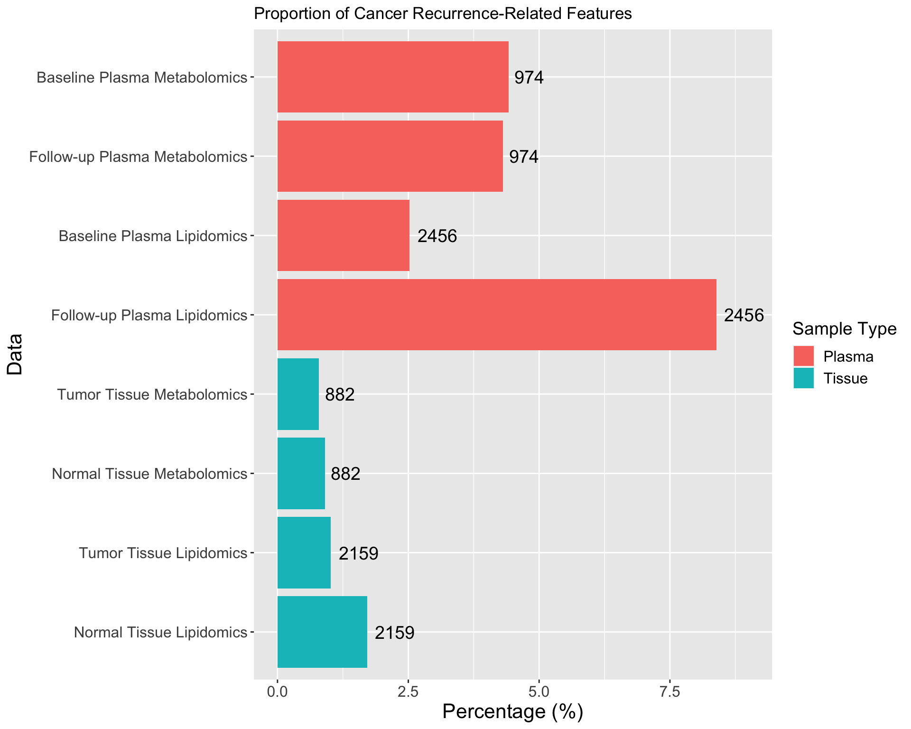
# ggsave(paste0(result_path, 'AG_Hopf/proporSigFeats.png'), device = 'png', dpi = 400,
# height = 8, width = 10)Regular significance test that does not account for missing values
# Barplot about proportion of significant features in each dataset
# Compute proportion of significant features
metaBaseSigFeats <- nrow(metaBaseRes$tFeatSigRes) / nrow(metaBaseRes$data) * 100
metaFoloSigFeats <- nrow(metaFoloRes$tFeatSigRes) / nrow(metaFoloRes$data) * 100
# metaPlasmaDiffSigFeats <- nrow(metaPlasmaDiffRes$tFeatSigRes) / nrow(metaPlasmaDiffRes$data) * 100
lipBaseSigFeats <- nrow(lipBaseRes$tFeatSigRes) / nrow(lipBaseRes$data) * 100
lipFoloSigFeats <- nrow(lipFoloRes$tFeatSigRes) / nrow(lipFoloRes$data) * 100
# lipPlasmaDiffSigFeats <- nrow(lipPlasmaDiffRes$tFeatSigRes) / nrow(lipPlasmaDiffRes$data) * 100
metaTumorSigFeats <- nrow(metaTumorRes$tFeatSigRes) / nrow(metaTumorRes$data) * 100
metaNormalSigFeats <- nrow(metaNormalRes$tFeatSigRes) / nrow(metaNormalRes$data) * 100
# metaTissueDiffSigFeats <- nrow(metaTissueDiffRes$tFeatSigRes) / nrow(metaTissueDiffRes$data) * 100
lipTumorSigFeats <- nrow(lipTumorRes$tFeatSigRes) / nrow(lipTumorRes$data) * 100
lipNormalSigFeats <- nrow(lipNormalRes$tFeatSigRes) / nrow(lipNormalRes$data) * 100
# lipTissueDiffSigFeats <- nrow(lipTissueDiffRes$tFeatSigRes) / nrow(lipTissueDiffRes$data) * 100
# Prepare needed information for barplot
dat <- rev(c('Baseline Plasma Metabolomics', 'Follow-up Plasma Metabolomics',#'Differential Plasma Metabolomics',
'Baseline Plasma Lipidomics', 'Follow-up Plasma Lipidomics',#'Differential Plasma Lipidomics',
'Tumor Tissue Metabolomics', 'Normal Tissue Metabolomics',#'Differential Tissue Metabolomics',
'Tumor Tissue Lipidomics', 'Normal Tissue Lipidomics'))#'Differential Tissue Lipidomics'
datModal <- rev(c(rep('Plasma Metabolomics', 2), rep('Plasma Lipidomics', 2),
rep('Tissue Metabolomics', 2), rep('Tissue Lipidomics', 2)))
proportion <- rev(c(metaBaseSigFeats, metaFoloSigFeats, #metaPlasmaDiffSigFeats,
lipBaseSigFeats, lipFoloSigFeats, #lipPlasmaDiffSigFeats,
metaTumorSigFeats, metaNormalSigFeats, #metaTissueDiffSigFeats,
lipTumorSigFeats, lipNormalSigFeats)) #lipTissueDiffSigFeats
numFeat <- rev(c(rep(nrow(metaBaseRes$data), 2), rep(nrow(lipBaseRes$data), 2),
rep(nrow(metaTumorRes$data), 2), rep(nrow(lipTumorRes$data), 2)))
sigFeatPropTab <- data.frame(Data = factor(dat, levels = dat),
Data_modality = datModal,
Proportion = proportion,
Feature_number = numFeat)
ggplot(sigFeatPropTab, aes(x=Data, y=Proportion, fill=Data_modality, label=Feature_number)) +
geom_bar(stat = 'identity') +
ylim(0, 11) +
coord_flip() +
geom_text(hjust = -0.4) +
labs(y = 'Percentage (%)',
title = 'Proportion of Cancer Recurrence-Related Features') +
scale_fill_discrete(name = 'Data modality')
| Version | Author | Date |
|---|---|---|
| 0bbd8eb | LiaoQianWu | 2023-04-25 |
- Plasma datasets got overall higher proportions of Recurrence-related
features than Tissue while they have similar feature sizes. This
unbiased result indicates that Plasma samples can potentially provide
more information in terms of separating recurrence and non-recurrence
patient groups and Tissue samples are more noisy.
- There is a way higher proportion of Recurrence-related features in
Follow-up Plasma Lipidomics compared to the results of the other
datasets, and in the meantime, there are much more replicated features
(same m/z and retention time) in Plasma Lipidomics dataset (check the
preprocessing report of the Untargeted data). Are many of these
Recurrence-related features replicates? No, there are only 3 (out of
255) replicates in the significance test result, which is negligible.
Visualize Recurrence-related features through volcano plots. Significance results were done by proDA R package that uses probabilistic dropout model to account for data missingness, which makes t-test results more reliable. Log2-FC (up and down) is recurrence to non-recurrence groups. To be clearer, entities on up side are more abundant in recurrence group than non-recurrence group, and so forth.
# Volcano plots for summarizing association test results between features and
# cancer recurrence
# Prepare feature information for converting feature IDs to m/z ratio and retention
# time
metaPlasmaFeatInfo <- tibble::as_tibble(rowData(metaPlasmaVsn), rownames = 'Feature_ID')
lipPlasmaFeatInfo <- tibble::as_tibble(rowData(lipPlasmaVsn), rownames = 'Feature_ID')
metaTissueFeatInfo <- tibble::as_tibble(rowData(metaTissueVsn), rownames = 'Feature_ID')
lipTissueFeatInfo <- tibble::as_tibble(rowData(lipTissueVsn), rownames = 'Feature_ID')
# Prepare log2-fold change information
# PM
metaPlasmaMedi <- readRDS('./data/AG_Hopf/metaPlasmaMedi.rds') %>%
summExp2df(assay = 'mediAbundance', row_id = 'Feature', col_id = 'Sample_ID') %>%
dplyr::select(Feature, Value, Condition, Recurrence)
# BPM
metaBaseLogFC <- dplyr::filter(metaPlasmaMedi, Condition == 'Baseline') %>%
dplyr::group_by(Feature, Recurrence) %>%
dplyr::summarise(Mean = mean(Value, na.rm = T)) %>%
dplyr::ungroup() %>%
tidyr::pivot_wider(names_from = 'Recurrence', values_from = 'Mean') %>%
dplyr::mutate(logFC = Yes - No) %>%
dplyr::select(Feature, logFC)
# FPM
metaFoloLogFC <- dplyr::filter(metaPlasmaMedi, Condition != 'Baseline') %>%
dplyr::group_by(Feature, Recurrence) %>%
dplyr::summarise(Mean = mean(Value, na.rm = T)) %>%
dplyr::ungroup() %>%
tidyr::pivot_wider(names_from = 'Recurrence', values_from = 'Mean') %>%
dplyr::mutate(logFC = Yes - No) %>%
dplyr::select(Feature, logFC)
# PL
lipPlasmaMedi <- readRDS('./data/AG_Hopf/lipPlasmaMedi.rds') %>%
summExp2df(assay = 'mediAbundance', row_id = 'Feature', col_id = 'Sample_ID') %>%
dplyr::select(Feature, Value, Condition, Recurrence)
# BPL
lipBaseLogFC <- dplyr::filter(lipPlasmaMedi, Condition == 'Baseline') %>%
dplyr::group_by(Feature, Recurrence) %>%
dplyr::summarise(Mean = mean(Value, na.rm = T)) %>%
dplyr::ungroup() %>%
tidyr::pivot_wider(names_from = 'Recurrence', values_from = 'Mean') %>%
dplyr::mutate(logFC = Yes - No) %>%
dplyr::select(Feature, logFC)
# FPL
lipFoloLogFC <- dplyr::filter(lipPlasmaMedi, Condition != 'Baseline') %>%
dplyr::group_by(Feature, Recurrence) %>%
dplyr::summarise(Mean = mean(Value, na.rm = T)) %>%
dplyr::ungroup() %>%
tidyr::pivot_wider(names_from = 'Recurrence', values_from = 'Mean') %>%
dplyr::mutate(logFC = Yes - No) %>%
dplyr::select(Feature, logFC)
# TM
metaTissueMedi <- readRDS('./data/AG_Hopf/metaTissueMedi.rds') %>%
summExp2df(assay = 'mediAbundance', row_id = 'Feature', col_id = 'Sample_ID') %>%
dplyr::select(Feature, Value, Condition, Recurrence)
# TTM
metaTumorLogFC <- dplyr::filter(metaTissueMedi, Condition == 'Tumor') %>%
dplyr::group_by(Feature, Recurrence) %>%
dplyr::summarise(Mean = mean(Value, na.rm = T)) %>%
dplyr::ungroup() %>%
tidyr::pivot_wider(names_from = 'Recurrence', values_from = 'Mean') %>%
dplyr::mutate(logFC = Yes - No) %>%
dplyr::select(Feature, logFC)
# NTM
metaNormalLogFC <- dplyr::filter(metaTissueMedi, Condition == 'Normal') %>%
dplyr::group_by(Feature, Recurrence) %>%
dplyr::summarise(Mean = mean(Value, na.rm = T)) %>%
dplyr::ungroup() %>%
tidyr::pivot_wider(names_from = 'Recurrence', values_from = 'Mean') %>%
dplyr::mutate(logFC = Yes - No) %>%
dplyr::select(Feature, logFC)
# TL
lipTissueMedi <- readRDS('./data/AG_Hopf/lipTissueMedi.rds') %>%
summExp2df(assay = 'mediAbundance', row_id = 'Feature', col_id = 'Sample_ID') %>%
dplyr::select(Feature, Value, Condition, Recurrence)
# TTL
lipTumorLogFC <- dplyr::filter(lipTissueMedi, Condition == 'Tumor') %>%
dplyr::group_by(Feature, Recurrence) %>%
dplyr::summarise(Mean = mean(Value, na.rm = T)) %>%
dplyr::ungroup() %>%
tidyr::pivot_wider(names_from = 'Recurrence', values_from = 'Mean') %>%
dplyr::mutate(logFC = Yes - No) %>%
dplyr::select(Feature, logFC)
# NTL
lipNormalLogFC <- dplyr::filter(lipTissueMedi, Condition == 'Normal') %>%
dplyr::group_by(Feature, Recurrence) %>%
dplyr::summarise(Mean = mean(Value, na.rm = T)) %>%
dplyr::ungroup() %>%
tidyr::pivot_wider(names_from = 'Recurrence', values_from = 'Mean') %>%
dplyr::mutate(logFC = Yes - No) %>%
dplyr::select(Feature, logFC)
# Collect all needed information for volcano plots
# Baseline Plasma Metabolomics
metaBaseVolTab <- dplyr::select(all_proDAMetaBaseRes, name, pval) %>%
dplyr::rename(Feature = name, pVal = pval) %>%
dplyr::left_join(metaBaseLogFC, by = 'Feature') %>%
dplyr::mutate(Data = 'Baseline Plasma Metabolomics',
MZ.RT = plyr::mapvalues(Feature,
from = metaPlasmaFeatInfo$Feature_ID,
to = metaPlasmaFeatInfo$m.z_RT,
warn_missing = F))
# Follow-up Plasma Metabolomics
metaFoloVolTab <- dplyr::select(all_proDAMetaFoloRes, name, pval) %>%
dplyr::rename(Feature = name, pVal = pval) %>%
dplyr::left_join(metaFoloLogFC, by = 'Feature') %>%
dplyr::mutate(Data = 'Follow-up Plasma Metabolomics',
MZ.RT = plyr::mapvalues(Feature,
from = metaPlasmaFeatInfo$Feature_ID,
to = metaPlasmaFeatInfo$m.z_RT,
warn_missing = F))
# Baseline Plasma Lipidomics
lipBaseVolTab <- dplyr::select(all_proDALipBaseRes, name, pval) %>%
dplyr::rename(Feature = name, pVal = pval) %>%
dplyr::left_join(lipBaseLogFC, by = 'Feature') %>%
dplyr::mutate(Data = 'Baseline Plasma Lipidomics',
MZ.RT = plyr::mapvalues(Feature,
from = lipPlasmaFeatInfo$Feature_ID,
to = lipPlasmaFeatInfo$m.z_RT,
warn_missing = F))
# Follow-up Plasma Lipidomics
lipFoloVolTab <- dplyr::select(all_proDALipFoloRes, name, pval) %>%
dplyr::rename(Feature = name, pVal = pval) %>%
dplyr::left_join(lipFoloLogFC, by = 'Feature') %>%
dplyr::mutate(Data = 'Follow-up Plasma Lipidomics',
MZ.RT = plyr::mapvalues(Feature,
from = lipPlasmaFeatInfo$Feature_ID,
to = lipPlasmaFeatInfo$m.z_RT,
warn_missing = F))
# Tumor Tissue Metabolomics
metaTumorVolTab <- dplyr::select(all_proDAMetaTumorRes, name, pval) %>%
dplyr::rename(Feature = name, pVal = pval) %>%
dplyr::left_join(metaTumorLogFC, by = 'Feature') %>%
dplyr::mutate(Data = 'Tumor Tissue Metabolomics',
MZ.RT = plyr::mapvalues(Feature,
from = metaTissueFeatInfo$Feature_ID,
to = metaTissueFeatInfo$MZ.RT,
warn_missing = F))
# Normal Tissue Metabolomics
metaNormalVolTab <- dplyr::select(all_proDAMetaNormalRes, name, pval) %>%
dplyr::rename(Feature = name, pVal = pval) %>%
dplyr::left_join(metaNormalLogFC, by = 'Feature') %>%
dplyr::mutate(Data = 'Normal Tissue Metabolomics',
MZ.RT = plyr::mapvalues(Feature,
from = metaTissueFeatInfo$Feature_ID,
to = metaTissueFeatInfo$MZ.RT,
warn_missing = F))
# Tumor Tissue Lipidomics
lipTumorVolTab <- dplyr::select(all_proDALipTumorRes, name, pval) %>%
dplyr::rename(Feature = name, pVal = pval) %>%
dplyr::left_join(lipTumorLogFC, by = 'Feature') %>%
dplyr::mutate(Data = 'Tumor Tissue Lipidomics',
MZ.RT = plyr::mapvalues(Feature,
from = lipTissueFeatInfo$Feature_ID,
to = lipTissueFeatInfo$MZ.RT,
warn_missing = F))
# Normal Tissue Lipidomics
lipNormalVolTab <- dplyr::select(all_proDALipNormalRes, name, pval) %>%
dplyr::rename(Feature = name, pVal = pval) %>%
dplyr::left_join(lipNormalLogFC, by = 'Feature') %>%
dplyr::mutate(Data = 'Normal Tissue Lipidomics',
MZ.RT = plyr::mapvalues(Feature,
from = lipTissueFeatInfo$Feature_ID,
to = lipTissueFeatInfo$MZ.RT,
warn_missing = F))Log2-FC cutoffs are 0.7 (FC=1.6) and -0.7 (FC=0.6).
# BPM
volTab <- metaBaseVolTab
volTab['DE'] <- 'Not significant'
volTab$DE[volTab$pVal <= 0.05 & volTab$logFC > 0.7] <- 'Up'
volTab$DE[volTab$pVal <= 0.05 & volTab$logFC < -0.7] <- 'Down'
volTab['Label'] <- NA
label4SigFeats <- volTab$MZ.RT[volTab$DE != 'Not significant']
volTab$Label[volTab$DE != 'Not significant'] <- label4SigFeats
ggplot(volTab, aes(x=logFC, y=-log10(pVal), col=DE, label=Label)) +
geom_point() +
geom_hline(yintercept = -log10(0.05), col = 'red', linewidth = 0.2) +
geom_vline(xintercept = c(-0.7, 0.7), col = 'red', linewidth = 0.2) +
geom_text_repel(size = 3, show.legend = F) +
scale_color_manual(values = c('navy', 'grey', 'red')) +
labs(x = 'log2(FC)', title = 'Baseline Plasma Metabolomics')
| Version | Author | Date |
|---|---|---|
| 0bbd8eb | LiaoQianWu | 2023-04-25 |
Log2-FC cutoffs are 0.7 (FC=1.6) and -0.7 (FC=0.6).
# FPM
volTab <- metaFoloVolTab
volTab['DE'] <- 'Not significant'
volTab$DE[volTab$pVal <= 0.05 & volTab$logFC > 0.7] <- 'Up'
volTab$DE[volTab$pVal <= 0.05 & volTab$logFC < -0.7] <- 'Down'
volTab['Label'] <- NA
label4SigFeats <- volTab$MZ.RT[volTab$DE != 'Not significant']
volTab$Label[volTab$DE != 'Not significant'] <- label4SigFeats
ggplot(volTab, aes(x=logFC, y=-log10(pVal), col=DE, label=Label)) +
geom_point() +
geom_hline(yintercept = -log10(0.05), col = 'red', linewidth = 0.2) +
geom_vline(xintercept = c(-0.7, 0.7), col = 'red', linewidth = 0.2) +
geom_text_repel(size = 3, show.legend = F) +
scale_color_manual(values = c('navy', 'grey', 'red')) +
labs(x = 'log2(FC)', title = 'Follow-up Plasma Metabolomics')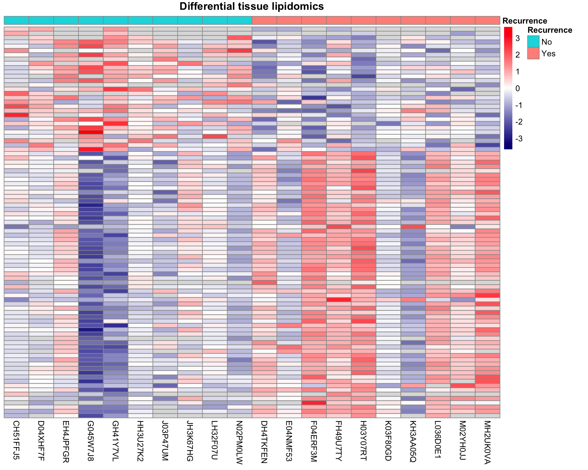
Log2-FC cutoffs are 0.7 (FC=1.6) and -0.7 (FC=0.6).
# BPL
volTab <- lipBaseVolTab
volTab['DE'] <- 'Not significant'
volTab$DE[volTab$pVal <= 0.05 & volTab$logFC > 0.7] <- 'Up'
volTab$DE[volTab$pVal <= 0.05 & volTab$logFC < -0.7] <- 'Down'
volTab['Label'] <- NA
label4SigFeats <- volTab$MZ.RT[volTab$DE != 'Not significant']
volTab$Label[volTab$DE != 'Not significant'] <- label4SigFeats
ggplot(volTab, aes(x=logFC, y=-log10(pVal), col=DE, label=Label)) +
geom_point() +
geom_hline(yintercept = -log10(0.05), col = 'red', linewidth = 0.2) +
geom_vline(xintercept = c(-0.7, 0.7), col = 'red', linewidth = 0.2) +
geom_text_repel(size = 3, show.legend = F) +
scale_color_manual(values = c('navy', 'grey', 'red')) +
labs(x = 'log2(FC)', title = 'Baseline Plasma Lipidomics')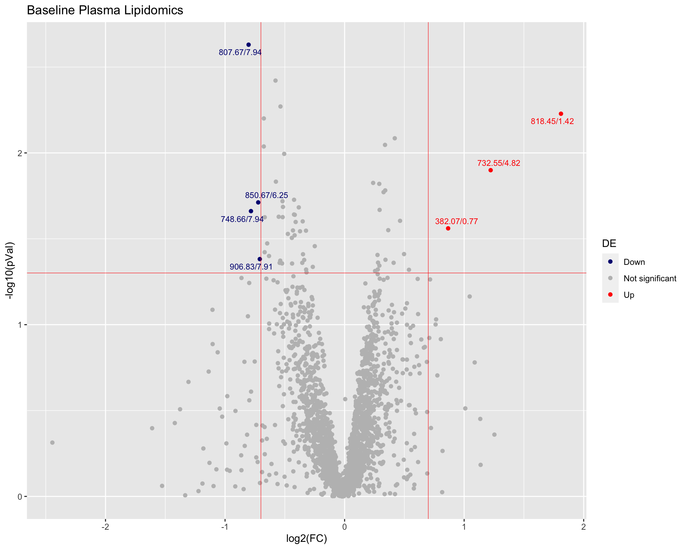
# ggsave('./output/AG_Hopf/volcano_BPL.png', device = 'png', dpi = 400, height = 8, width = 10)Log2-FC cutoffs are 1 (FC=2) and -1 (FC=0.5).
# FPL
volTab <- lipFoloVolTab
volTab['DE'] <- 'Not significant'
volTab$DE[volTab$pVal <= 0.05 & volTab$logFC > 1] <- 'Up'
volTab$DE[volTab$pVal <= 0.05 & volTab$logFC < -1] <- 'Down'
volTab['Label'] <- NA
label4SigFeats <- volTab$MZ.RT[volTab$DE != 'Not significant']
volTab$Label[volTab$DE != 'Not significant'] <- label4SigFeats
ggplot(volTab, aes(x=logFC, y=-log10(pVal), col=DE, label=Label)) +
geom_point() +
geom_hline(yintercept = -log10(0.05), col = 'red', linewidth = 0.2) +
geom_vline(xintercept = c(-1, 1), col = 'red', linewidth = 0.2) +
geom_text_repel(size = 3, show.legend = F) +
scale_color_manual(values = c('navy', 'grey', 'red')) +
labs(x = 'log2(FC)', title = 'Follow-up Plasma Lipidomics')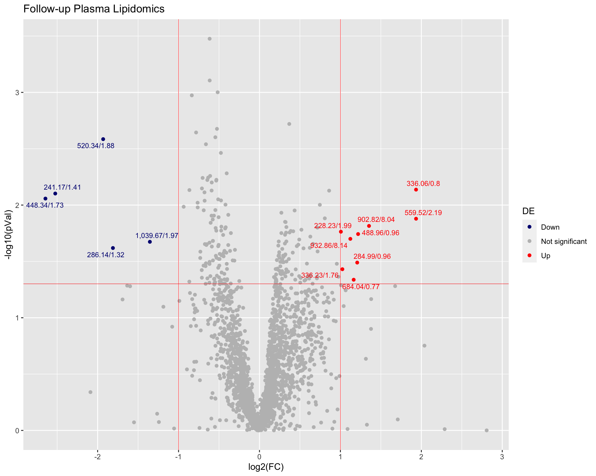
Log2-FC cutoffs are 0.5 (FC=1.4) and -0.5 (FC=0.7).
# TTM
volTab <- metaTumorVolTab
volTab['DE'] <- 'Not significant'
volTab$DE[volTab$pVal <= 0.05 & volTab$logFC > 0.5] <- 'Up'
volTab$DE[volTab$pVal <= 0.05 & volTab$logFC < -0.5] <- 'Down'
volTab['Label'] <- NA
label4SigFeats <- volTab$MZ.RT[volTab$DE != 'Not significant']
volTab$Label[volTab$DE != 'Not significant'] <- label4SigFeats
ggplot(volTab, aes(x=logFC, y=-log10(pVal), col=DE, label=Label)) +
geom_point() +
geom_hline(yintercept = -log10(0.05), col = 'red', linewidth = 0.2) +
geom_vline(xintercept = c(-0.5, 0.5), col = 'red', linewidth = 0.2) +
geom_text_repel(size = 3, show.legend = F) +
scale_color_manual(values = c('navy', 'grey', 'red')) +
labs(x = 'log2(FC)', title = 'Tumor Tissue Metabolomics')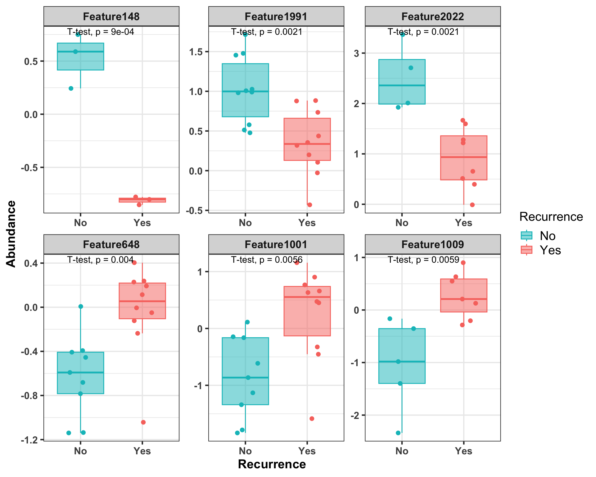
Log2-FC cutoffs are 0.5 (FC=1.4) and -0.5 (FC=0.7).
# NTM
volTab <- metaNormalVolTab
volTab['DE'] <- 'Not significant'
volTab$DE[volTab$pVal <= 0.05 & volTab$logFC > 0.5] <- 'Up'
volTab$DE[volTab$pVal <= 0.05 & volTab$logFC < -0.5] <- 'Down'
volTab['Label'] <- NA
label4SigFeats <- volTab$MZ.RT[volTab$DE != 'Not significant']
volTab$Label[volTab$DE != 'Not significant'] <- label4SigFeats
ggplot(volTab, aes(x=logFC, y=-log10(pVal), col=DE, label=Label)) +
geom_point() +
geom_hline(yintercept = -log10(0.05), col = 'red', linewidth = 0.2) +
geom_vline(xintercept = c(-0.5, 0.5), col = 'red', linewidth = 0.2) +
geom_text_repel(size = 3, show.legend = F) +
scale_color_manual(values = c('navy', 'grey', 'red')) +
labs(x = 'log2(FC)', title = 'Normal Tissue Metabolomics')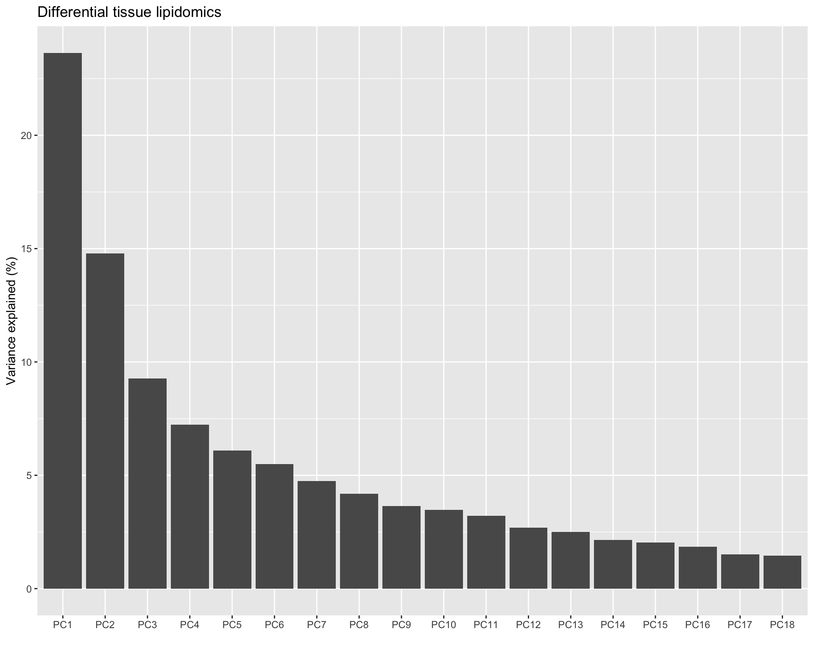
Log2-FC cutoffs are 0.7 (FC=1.6) and -0.7 (FC=0.6).
# TTL
volTab <- lipTumorVolTab
volTab['DE'] <- 'Not significant'
volTab$DE[volTab$pVal <= 0.05 & volTab$logFC > 0.7] <- 'Up'
volTab$DE[volTab$pVal <= 0.05 & volTab$logFC < -0.7] <- 'Down'
volTab['Label'] <- NA
label4SigFeats <- volTab$MZ.RT[volTab$DE != 'Not significant']
volTab$Label[volTab$DE != 'Not significant'] <- label4SigFeats
ggplot(volTab, aes(x=logFC, y=-log10(pVal), col=DE, label=Label)) +
geom_point() +
geom_hline(yintercept = -log10(0.05), col = 'red', linewidth = 0.2) +
geom_vline(xintercept = c(-0.7, 0.7), col = 'red', linewidth = 0.2) +
geom_text_repel(size = 3, show.legend = F) +
scale_color_manual(values = c('navy', 'grey', 'red')) +
labs(x = 'log2(FC)', title = 'Tumor Tissue Lipidomics')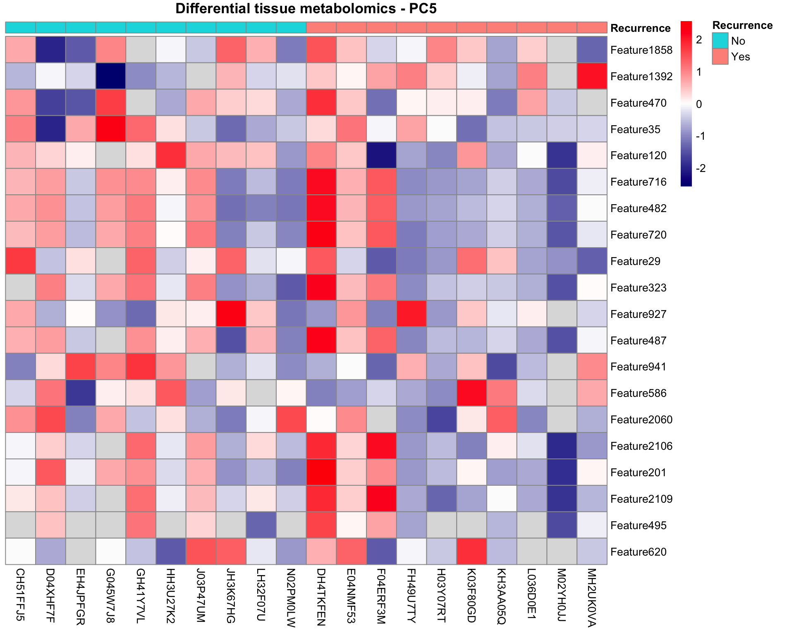
Log2-FC cutoffs are 0.9 (FC=1.9) and -0.9 (FC=0.5).
# NTL
volTab <- lipNormalVolTab
volTab['DE'] <- 'Not significant'
volTab$DE[volTab$pVal <= 0.05 & volTab$logFC > 0.9] <- 'Up'
volTab$DE[volTab$pVal <= 0.05 & volTab$logFC < -0.9] <- 'Down'
volTab['Label'] <- NA
label4SigFeats <- volTab$MZ.RT[volTab$DE != 'Not significant']
volTab$Label[volTab$DE != 'Not significant'] <- label4SigFeats
ggplot(volTab, aes(x=logFC, y=-log10(pVal), col=DE, label=Label)) +
geom_point() +
geom_hline(yintercept = -log10(0.05), col = 'red', linewidth = 0.2) +
geom_vline(xintercept = c(-0.9, 0.9), col = 'red', linewidth = 0.2) +
geom_text_repel(size = 3, show.legend = F) +
scale_color_manual(values = c('navy', 'grey', 'red')) +
labs(x = 'log2(FC)', title = 'Normal Tissue Lipidomics')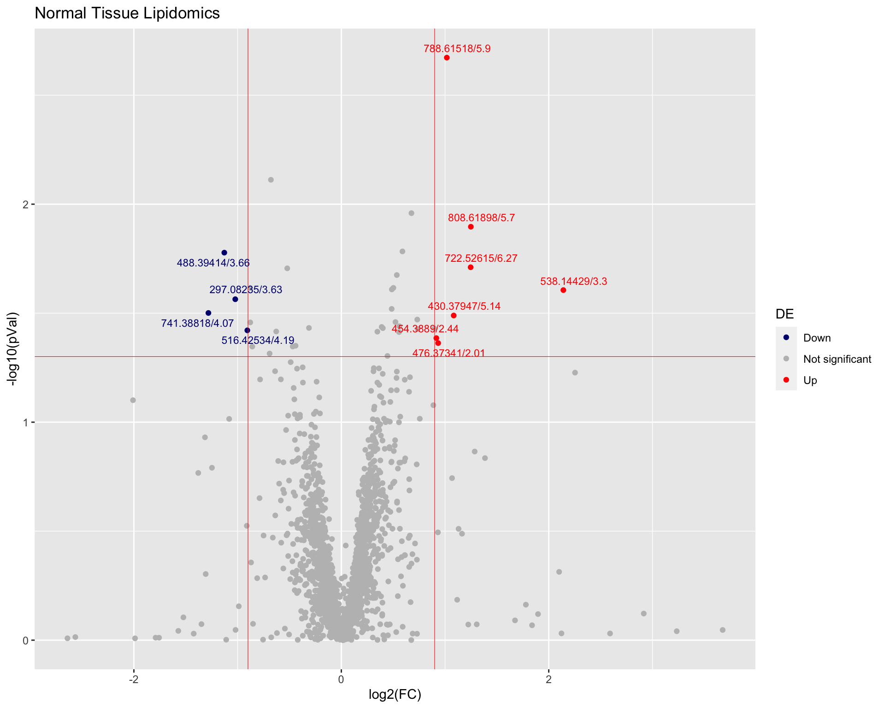
sessionInfo()R version 4.2.1 (2022-06-23)
Platform: aarch64-apple-darwin20 (64-bit)
Running under: macOS Ventura 13.2.1
Matrix products: default
BLAS: /Library/Frameworks/R.framework/Versions/4.2-arm64/Resources/lib/libRblas.0.dylib
LAPACK: /Library/Frameworks/R.framework/Versions/4.2-arm64/Resources/lib/libRlapack.dylib
locale:
[1] en_US.UTF-8/en_US.UTF-8/en_US.UTF-8/C/en_US.UTF-8/en_US.UTF-8
attached base packages:
[1] stats4 stats graphics grDevices utils datasets methods
[8] base
other attached packages:
[1] lubridate_1.9.2 forcats_1.0.0
[3] stringr_1.5.0 dplyr_1.1.1
[5] purrr_1.0.1 readr_2.1.4
[7] tidyr_1.3.0 tibble_3.2.1
[9] tidyverse_2.0.0 openxlsx_4.2.5.2
[11] ggfortify_0.4.16 ggrepel_0.9.3
[13] ggplot2_3.4.1 limma_3.52.4
[15] proDA_1.10.0 SummarizedExperiment_1.26.1
[17] Biobase_2.56.0 GenomicRanges_1.48.0
[19] GenomeInfoDb_1.32.4 IRanges_2.30.1
[21] S4Vectors_0.34.0 BiocGenerics_0.42.0
[23] MatrixGenerics_1.8.1 matrixStats_0.63.0
[25] workflowr_1.7.0
loaded via a namespace (and not attached):
[1] bitops_1.0-7 fs_1.6.1 RColorBrewer_1.1-3
[4] httr_1.4.5 rprojroot_2.0.3 backports_1.4.1
[7] tools_4.2.1 bslib_0.4.2 utf8_1.2.3
[10] R6_2.5.1 colorspace_2.1-0 withr_2.5.0
[13] tidyselect_1.2.0 gridExtra_2.3 processx_3.8.0
[16] compiler_4.2.1 git2r_0.31.0 textshaping_0.3.6
[19] cli_3.6.1 DelayedArray_0.22.0 labeling_0.4.2
[22] sass_0.4.5 scales_1.2.1 callr_3.7.3
[25] systemfonts_1.0.4 digest_0.6.31 rmarkdown_2.21
[28] extraDistr_1.9.1 XVector_0.36.0 pkgconfig_2.0.3
[31] htmltools_0.5.5 fastmap_1.1.1 highr_0.10
[34] rlang_1.1.0 rstudioapi_0.14 jquerylib_0.1.4
[37] generics_0.1.3 farver_2.1.1 jsonlite_1.8.4
[40] car_3.1-1 zip_2.2.2 RCurl_1.98-1.10
[43] magrittr_2.0.3 GenomeInfoDbData_1.2.8 Matrix_1.5-3
[46] Rcpp_1.0.10 munsell_0.5.0 fansi_1.0.4
[49] abind_1.4-5 lifecycle_1.0.3 stringi_1.7.12
[52] whisker_0.4.1 yaml_2.3.7 carData_3.0-5
[55] zlibbioc_1.42.0 plyr_1.8.8 grid_4.2.1
[58] promises_1.2.0.1 lattice_0.20-45 hms_1.1.3
[61] knitr_1.42 ps_1.7.3 pillar_1.9.0
[64] ggpubr_0.6.0 ggsignif_0.6.4 glue_1.6.2
[67] evaluate_0.20 getPass_0.2-2 vctrs_0.6.1
[70] tzdb_0.3.0 httpuv_1.6.9 gtable_0.3.3
[73] cachem_1.0.7 xfun_0.38 broom_1.0.4
[76] rstatix_0.7.2 later_1.3.0 ragg_1.2.5
[79] pheatmap_1.0.12 timechange_0.2.0